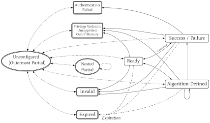

List of tables
list-of::table[hide_empty_section=true, enhanced_rendering=true]
List of listings
list-of::listing[hide_empty_section=true, enhanced_rendering=true]
Copyright and license information
This specification is licensed under the Creative Commons Attribution 4.0 International License (CC-BY 4.0). The full license text is available at creativecommons.org/licenses/by/4.0/.
Copyright 2025 by RISC-V International.
|
This document is in the Development state.
Expect potential changes. This draft specification is likely to evolve before it is accepted as a standard. Implementations based on this draft may not conform to the future standard. |
Contributors
This RISC-V specification has been contributed to directly or indirectly by:
-
Roberto Avanzi <ravanzi@qti.qualcomm.com>
-
Nicolas Brunie <nicolas.brunie@sifive.com>
-
Ruud Derwig <ruud.derwig@globalfoundries.com>
-
Luis Fiolhais <luis.fiolhais@ext.semidynamics.com>
-
Nick Kossifidis <mick@ics.forth.gr>
-
Radim Krčmář <rkrcmar@qti.qualcomm.com>
-
G. Richard Newell <richard.newell@microchip.com>
-
Jan Thoma <jan.thoma@codasip.com>
-
Tolga Yalcin <tolga.yalcin@qti.qualcomm.com>
-
Yan Yan <yan.yan@codasip.com>
Introduction
This brief introduction to the Atomic Cryptography Extension (ACE) is not part of the specification.
The ratification plan can be found here.
Features
ACE defines an interface to high-performance cryptographic operations without giving software access to the keys. Its development has been prompted by use cases such as content protection (including local LLM decryption), link and storage encryption, secure boot, and attestation.
ACE’s main features are:
-
To mitigate key misuse, ACE binds cryptographic secrets (such as keys) and metadata into an indivisible structure called a Cryptographic Context (CC). The architecture uses the metadata to restrict each secret to a specific algorithm and, optionally, to enforce usage constraints based on the process, VM, security state, boot cycle, an expiration date, or other policies.
-
To implement CCs, ACE introduces Context Registers (CRs)—architectural containers that conceal their secrets from software. A CC is created by provisioning (i.e., writing) secrets and metadata into a CR. ACE instructions operate on CRs instead of explicit key values. As a result, software can use keys without holding them explicitly in the memory of the process, and also benefit from higher performance and side-channel-protected implementations when available.
-
Cryptographic operations are performed atomically to avoid leaking data through architectural side-channels. Instructions can be interrupted only if they perform multiple cryptographic operations and according to rules defined by the Algorithms they apply to.
-
ACE provides a secure mechanism to store a CC to memory via authenticated encryption, producing a Sealed Cryptographic Context (SCC). Once generated, an SCC can later be re-imported into a CR. If an SCC is passed to a process in place of the key value, the key is not exposed in that process' memory.
-
ACE provides a unified interface to multiple cryptographic primitives, avoiding the need for separate instructions per primitive.
-
Exposing only the primitives is insufficient for modes like AES-GCM-SIV, XTS, and OCB, because leakage of derived keys or intermediate values can compromise security. Therefore, ACE also defines modes of operation and secure key derivation.
-
In addition to GCM-SIV, XTS, and OCB, ACE defines modes such as CTR, GCM, and CMAC. Where applicable, encrypt-only or decrypt-only versions and versions with a preset IV or nonce are also defined to reduce the potential for misuse. These modes can be instantiated not only with AES-128/256 but also with other block ciphers such as SM4.
-
Support for various hash functions.
-
The interface supports SCA-resistant implementations of the algorithms.
-
The interface can also be used to provide access to public-key and post-quantum algorithms.
-
Not all the algorithms defined in the specification are intended to be supported by an ACE implementation: following RISC-V practice, ACE defines several sub-extensions and delegates the choice to RV profiles, which are defined by a separate process.
-
-
ACE scales from embedded to server cores with a unified ISA and ABI.
-
ACE is compatible with sleep, hibernation, and VM migration.
- Rationale for atomic operations
-
Assuming the primitive is secure, the key cannot be recovered from the input and output of the full cryptographic operation. Typical round-based ISAs require keys to be supplied between rounds or MAC stages. This allows easy key recovery from the input and output, even if the key came from a hidden register. In fact, even if an instruction computed only 4 or 5 rounds of AES, an attacker with access to the instruction oracle could efficiently recover the key cite:[Rijndael-revised].
Non-Goals
ACE intentionally excludes the following:
-
Debugging support: The internal representation of a CR remains concealed even during debug.
-
Variable-length complete ciphertext and plaintext inputs: Plaintext and ciphertexts, as well as messages of which digests are computed, are processed in fixed-size blocks.
-
Full key management: ACE provides only architectural building blocks that can be used for key management, whose logic resides in trusted software (e.g., TEE applets). ACE does not support external schemes for directly provisioning keys into a key store. Instead, a local trusted SW or HW component manages the external schemes and uses the resulting keys and policies to configure CCs for the ACE unit.
-
Key revocation: This specification does not define a key revocation mechanism. The rationale is:
-
A revocation mechanism would add a significant implementation burden and adversely affect performance, conflicting with ACE’s emphasis on simplicity and speed.
-
A universal revocation mechanism is impractical because of the variety of protocols, and potentially unbounded revocation data. Managing revocation within the ACE unit would require dynamic access to secure memory. Such functionality is better suited to isolated software components that integrate with the local software stack while maintaining strong security guarantees.
-
Revocation typically applies to root keys, not the derived keys (e.g., session keys) used by user software. It can therefore be handled by the trusted entity managing the root keys. The expiration-date mechanism and Localities can be used to limit the lifetime and scope of derived keys.
-
Applications requiring direct software access to root keys (e.g., link or storage encryption) typically execute in protected environments that can handle their own revocation mechanisms.
-
Full prevention of misuse by compromised processes: ACE cannot fully prevent misuse by compromised processes because they retain access to their own CCs. ACE complements, but does not replace, existing software vulnerability mitigations and process isolation techniques. Additionally, certain modes (e.g., counter mode encryption) use the same operation for both encryption and decryption, which may enable misuse by malicious software. This risk is inherent to such modes, and cannot be mitigated.
Threat Model
This section is informative and non-normative.
The ACE threat model is straightforward.
Assets are keys and any information that could aid an adversary in recovering plaintext or forging ciphertext. This includes, e.g., masks in tweakable XEX modes and derived keys in AES-GCM-SIV. The critical properties of these assets are their confidentiality and integrity. Protecting the Availability of the keys is not an architectural goal.
Adversaries are assumed capable of compromising processes by exploiting software vulnerabilities. They are also able to gain access to memory contents, for instance, by abusing hardware interfaces or by SoC/memory interposition. The model does not include adversaries capable of sophisticated hardware attacks, such as using a Focused Ion Beam/Scanning Electron Microscope (FIB/SEM) to tamper with the hardware’s functionality. Side-channel attacks are addressed optionally. ACE offers interfaces to both SCA-unprotected and SCA-protected implementations of cryptographic algorithms, if these options are provided by the designer.
Threats can be addressed in four ways:
| C: |
Control the threat by implementing full or partial mitigations. |
| A: |
Accept the threat and its associated risks. |
| T: |
Transfer the threat to another party better suited to address it. |
| S: |
Suppress the features that give rise to the threat. |
ACE is designed to avoid the “A” and “S” options (as much as possible). It controls threats through its own mechanisms and transfers residual risk—specifically, the risk of key extraction from the privileged or trusted software and hardware environments that manage keys—to those same environments. For example, trusted software environments may employ control-flow integrity, memory encryption with integrity protection, and anti-replay mechanisms, while hardware key-management blocks can be hardened to protect entrusted keys.
Direct plaintext leakage, memory corruption attacks against the ACE-using process, and Release of Unverified Plaintext (RUP) attacks on the cryptographic algorithms are out of scope. These threats cannot be mitigated by ACE because the processed information resides within the user execution context. Thus, these threats are accepted.
TODOs / Open Discussion Points
-
Finalize RVV-mini.
-
We could use “
kl” in this document instead of “ace.”:klmeans ACE is a subset of crypto extensions, the “l” is also the initial of “Locker”, and Cryptographic Locker could replace Cryptographic Register. -
Any additional inputs for (random) key generation? PONDER An implementor could define a custom consume-anything/output unlimited KDF and use ace.derive to move data from it to keys in a CR. ADD A COMMENT
-
UNPRIV: Behavior of suppressed or disallowed operations is unspecified. When an operation is suppressed (error state, usage violation, expiration), nothing says what is written to
Vd,Xdor the ACEIOBUF: suggest: unchanged, for the actual block that is suppressed and forward. Rule 2 says only certain instructions "are permitted" inSuccess/Failed, need more clarity on what a non-permitted one does. Add a normative table of condition → exception, state transition, and destination effect. -
UNPRIV: Memory-model gaps beyond the acknowledged TODOs. Three things a reviewer should require before freeze: reconciliation of the attached-unit model (operations "execute independently of the issuing hart") with same-hart program-order visibility for ordinary loads and stores to a region an asynchronous
ace.storeis still writing; a normative invariant tyingacestartto memory visibility on interruption (all bytes below it globally performed, none at or above it performed), without which resumption after migration can skip or double-write; and a forward-progress guarantee for resumable instructions under frequent interrupts.
Structure of the ACE Specification: Separation of Architecture and Data Formats
The ACE ISA is split into three normative Books and a non-normative one.
-
Book 1 defines the fixed part of the Unprivileged Architecture (see Book 1: Unprivileged Architecture, Instructions and Architectural States). The instructions and architectural states are specified independently of the exact data formats they operate on.
-
Book 2 defines the Data Structures and Algorithms of the Unprivileged Architecture (see Book 2: Algorithms).
Within the RISC-V architecture, conformance to Book 1 requires full conformance to Book 2. In other words, each implemented non-custom algorithm must fully exhibit the behavior specified in Book 2.
Book 2 is kept separate from Book 1 because the data formats used to manage keys are intended to be interoperable across different ISAs that implement ACE or equivalent functionality. These formats are therefore not specific to RISC-V. Those ISAs must also support the format of the Metadata Header and the semantics of its fields verbatim.
-
Book 3 defines the Privileged Architecture (see Book 3: Privileged Architecture).
-
Book 4 provides non-normative pseudocode examples illustrating the intended use of the algorithms defined in Book 2.
Acronyms
| Acronym | Description |
|---|---|
ACE |
Atomic Cryptography Extension |
ACES |
ACE Status |
ACEIOBUF |
ACE Input/Output Buffer |
ADS |
Additional Data Section |
AE |
Authenticated Encryption |
AEAD |
Authenticated Encryption with Associated Data |
AES |
Advanced Encryption Standard |
CBC |
Cipher Block Chaining (mode of encryption) |
CC |
Cryptographic Context |
CFB |
Cipher Feedback (mode of encryption) |
CMAC |
Cipher-based Message Authentication Code |
CR |
Context Register |
CPU |
Central Processing Unit |
CRF |
Context Register File |
cSHAKE |
Customisable SHAKE |
CSK |
Context Sealing Key |
CSR |
Control and Status Register |
CTR |
Counter (mode of encryption) |
DIEL |
Data-Independent Execution Latency |
ECB |
Electronic Codebook (mode of encryption) |
EEW |
Effective Element Width (Vector Crypto Extension) |
EGS |
Element Group Size (Vector Crypto Extension) |
EGW |
Element Group Width (Vector Crypto Extension) |
FIB |
Focused Ion Beam |
FP |
Floating-Point |
GCM |
Galois Counter Mode |
GPA |
Guest Physical Address |
GPR |
General-Purpose Register |
GVA |
Guest Virtual Address |
hart |
Hardware Thread |
HLOS |
High-Level Operating System |
HMAC |
Hash-based Message Authentication Code |
HV |
Hypervisor |
impdef |
Implementation-defined |
ISE |
Instruction Set Extension |
IV |
Initialization Vector |
KDF |
Key Derivation Function |
KEM |
Key Encapsulation Mechanism |
KMAC |
Keccak-based Message Authentication Code |
LFSR |
Linear Feedback Shift Register (also: LFSR-based mode of operation) |
LS |
Locality Secrets |
LST |
Locality Secrets Table |
MAC |
Message Authentication Code |
MDH |
Metadata Header |
MM |
Machine Mode |
NOP |
No Operation |
OCB |
Offset Codebook (mode of encryption) |
OFB |
Output Feedback (mode of encryption) |
OS |
Operating System |
PA |
Physical Address |
PI |
Provisioning Input |
PRF |
Pseudo-Random Function |
PRP |
Pseudo-Random Permutation |
PRW |
Privileged Read-Write |
RBG |
Random Bit Generator |
RUP |
Release of Unverified Plaintext |
SCA |
Side-Channel Analysis |
SCC |
Sealed Cryptographic Context |
SEM |
Scanning Electron Microscope |
SHAKE |
Secure Hash Algorithm KECCAK |
SIV |
Synthetic Initialization Vector |
SKID |
System Key Identifier |
SKS |
System Key Store |
TBC |
Tweakable Block Cipher |
TEE |
Trusted Execution Environment |
TPM |
Trusted Platform Module |
VA |
Virtual Address |
WARL |
Write Anything Read Legal |
WARZ |
Write Anything Read-as Zero |
XCTR |
|
XEX |
Xor-Encrypt-Xor mode of operation |
XLFSR |
|
XOF |
eXtendable Output Function |
XTS |
XEX mode with cipherText Stealing |
Notation and Conventions
This section is normative. Besides some necessary notation, it fixes the representation of values, the meaning of the concatenation operator, and the finite-field operations used throughout Books 1, 2 and 4. Every formula in this specification is to be read under these conventions, and no algorithm description may introduce a different one.
Values, Bits, and Octet Strings
A value is a bit string whose length is fixed by its context.
For a value V of n bits, V[i] denotes its i-th bit and V[j:i], with
0 ≤ i ≤ j < n, the bit slice from bit i to bit j, both included.
Bit 0 is the least significant bit.
A referenced standard may specify an input, output, key, state field, or constant as an octet string M = M0, M1, ⋯, Mn-1, where M0 is the first (leftmost, lowest-addressed) octet. This specification represents such a string by the 8n-bit value V defined by V[8i+7 : 8i] = Mi for 0 ≤ i < n. This is the only string-to-value mapping used in this specification.
This mapping agrees with the default little-endian ordering of the RISC-V architecture and with the vector register interfaces: a unit-stride vector load places the octet at the lowest address in the lowest-numbered element.
For ACE memory operations, the octet at the lowest address is octet 0.
The octet at address A + i is V[8i+7 : 8i], where A is the effective
address of the transfer.
A vector register (group) supplying INPUT or receiving OUTPUT holds the value V
that a unit-stride byte load vle8.v`would produce from the
equivalent memory image, and a unit-stride byte store `vse8.v of that register
reproduces that image. This holds irrespective of the SEW and VL in effect, since
ACE uses only their product (Notation in the Algorithm Descriptions).
|
The consequence is that a value, when printed as an integer, reads in the reverse of the octet order used by most cryptographic standards, which usually follow network protocols. Transcribing a Formula from a Standard gives the rule for transcribing formulas safely, and Conventions of the Referenced Standards records the convention used by each referenced standard. |
Concatenation
For values A of p bits and B of q bits, A @ B is the (p+q)-bit value C with
C[q-1:0] = B and
C[p+q-1:q] = A.
That is, the left operand of @ occupies the more significant bits. @ is
associative and is written left-to-right without parentheses.
Operators and Control Constructs
-
x ← ydenotes assignment ofytox. -
x = yandx ≠ ydenote equality and inequality;<,≤,>,≥denote the usual comparisons on integers. -
+,-,×denote integer addition, subtraction and multiplication.a mod b, forb> 0, denotes the remainder of the division ofabyb, in the range0tob-1. -
V xor W,V and W,V or Wdenote bitwise operations on values of equal length, andV << k,V >> kthe shifts defined in Notation and Conventions. -
A @ Bdenotes concatenation, defined in Notation and Conventions. -
foreach(i from a to b) { ⋯ }executes its body once for each integerifromatob, both included, in increasing order; the body is not executed ifa>b. The variantforeach(i from a to b by s)advancesiin steps ofs. -
xkdenotesxraised to the powerk. Inside listing blocks, where superscripts cannot be typeset, the same quantity is writtenx**k. -
local x : Tdeclares an internal variable of the pseudocode that is not part of any architectural state.
Functions
-
0denotes a single bit equal to zero. -
1denotes a single bit equal to one. -
bin(n,m)= binary representation ofntombits (mleast significant bits, or sign extended). The representation is little-endian. -
bswap(m)= the octet stringmwith its octet order reversed. -
binBE(n,m)= binary representation ofntombits (mleast significant bits, or sign extended). The representation is byte-wise big-endian: whenbinBE(n,m)is written to memory starting at byte addressX, its most significant byte is stored at addressX, its second most significant byte at addressX+1, and so on. HencebinBE(n,m)=bswap(bin(n,m)). -
ceil(x)= the smallest integer not smaller thanx; also written⌈x⌉. -
double(S)= doubling in the OCB3 field. See OCB Mode. -
floor(x)= the largest integer not larger thanx; also written⌊x⌋. -
Galoismul(a, b)= multiplication ofaandbin the GHASH field. See GCM Mode. -
int(V)= the unsigned integer whose binary expansion has bitV[i]as the coefficient of 2i, i.e. the value read as a little-endian unsigned binary number. -
len_in_bits(M)= the length of the value or stringMin bits. -
len_in_bytes(M)= the length of the value or stringMin bytes, i.e.,len_in_bits(M) / 8. It is defined only whenlen_in_bits(M)is a multiple of 8. -
lsb(x)= least significant bit ofx, andlsbc(x)itscleast significant bits. -
m[i .. j]= bytes from thei-th to thej-th of byte arraym. -
m[j:i]= bit-slice from thei-th to thej-th bit ofm. -
min(x, y, ⋯),max(x, y, ⋯)= the smallest, resp. largest, of their arguments. -
Montmul(a, b)= the POLYVAL field operation. See AES-GCM-SIV Key Derivation and POLYVAL. -
msb(x)= most significant bit ofx, andmsbc(x)itscmost significant bits. -
ones(i)= sequence ofiones. -
update_mask(M)= the XEX/XTS mask update. See XEX/XTS modes (one or two keys). -
zeros(i)= sequence ofizeros. -
V << kandV >> kshiftint(V)left, respectively right, bykbit positions within the declared width ofV: bits shifted beyond bitn-1or below bit0are discarded and zeros are shifted in. A left shift therefore moves data towards the later octets of the string. -
V xor W,V and W,V or Ware bitwise and require|V|=|W|.
Transcribing a Formula from a Standard
When a formula is taken from a referenced standard, the original usually follows an ordering natural to certain communication protocols, so it uses big-endian notation. RISC-V specifications tend to follow little-endian notation, so the formula must be transcribed by applying the following two steps, in this order:
-
Reverse the concatenation. Replace
A0 ‖ A1 ‖ ⋯ ‖ Am-1byAm-1 @ ⋯ @ A1 @ A0. Failure to follow the proper ordering is the single most common source of error when transcribing a standard. When forming long messages by concatenation, the “‖” notation is still used, since the original standard may itself use it — with some ambiguity — in a little-endian sense. -
Encode each integer explicitly. A field that the standard specifies as a big-endian integer becomes
binBE(n, m); one specified as a little-endian integer becomesbin(n, m). Neither may be written as a bare numeral.
Two worked-out examples:
-
cite:[RFC8452] §4 builds each key-derivation input as the four-octet little-endian counter followed by the twelve-octet nonce,
LE32(i) ‖ N. Step 1 givesN @ LE32(i)and step 2 givesN @ bin(i,32). -
cite:[nist-SP-800-38D] §7.1 builds, for a 96-bit IV,
J0=IV ‖ 031 ‖ 1, in which the trailing four octets are the big-endian encoding of the integer 1. Step 1 gives1 ‖ 031reversed onto the left ofIV, and step 2 encodes the counter, yieldingJ0←binBE(1,32) @ IV. WritingIV @ zeros(31) @ 1instead — the form that results from transcribing the standard left to right — places the IV inJ0[127:32]and the counter octets inJ0[31:0], which is the reverse of what cite:[nist-SP-800-38D] requires.
Conventions of the Referenced Standards
The following table records, for each standard whose algorithms this specification reproduces, the convention that standard uses and the resulting obligation here. It is provided as an aid to review and does not relieve an algorithm description of the obligation to be explicit.
| Standard | Convention used by the standard | Obligation in this specification |
|---|---|---|
SP 800-38A/B/E (ECB, CTR, CMAC, XTS) |
Octet strings; the CTR counter is big-endian in the trailing octets of the counter block; the CMAC subkey shift is over the big-endian string; the XTS tweak and mask are little-endian. |
Direct mapping for ECB and for the XTS data path, with |
SP 800-38D (GCM) |
Octet strings; GHASH field bit-reflected within octets; counters big-endian. |
|
RFC 8452 (AES-GCM-SIV) |
Octet strings; POLYVAL field fully little-endian; block counter little-endian. |
|
RFC 7253 (OCB3) |
Bit strings, first bit most significant; |
|
FIPS 202 (SHA-3, SHAKE) |
Bit strings mapped to the state by §3.1; lanes little-endian. |
Direct mapping of the absorbed string; the lane indexing of FIPS 202 §3.1 applies unchanged. |
FIPS 180-4 (SHA-2) |
Big-endian words and length encoding. |
Message schedule words and the appended length via |
SP 800-232 (Ascon) |
Little-endian throughout, including |
Direct mapping. See also the note in Ascon-AEAD128. |
FIPS 203 / FIPS 204 (ML-KEM, ML-DSA) |
Octet strings produced by the standard’s own encoding routines. |
Direct mapping of the encoded octet strings; no re-encoding. |
Proposal for Ratified Names
-
ACE would use a sub-domain of the Cryptography extensions
k. Since the sub-domainlis currently not allocated, we would use “kl” as a prefix in place of “ace.”. -
klcan also be read as an abbreviation of “Cryptographic Lockers”, which is a fitting name. -
We probably need a name change anyway since the acronym ACE has been overloaded in the two years of ACE development:
-
Intel’s “AI Compute Extension”; and
-
IBM’s Assured confidential execution for RISC-V.
-
-
Instruction names:
Count Old Name New Name Meaning 1
ace.loadkllLoad content into a CR from memory
2
ace.storeklsStore content from a CR to memory
3
ace.execklxExecute Operation
4
ace.mvklmvMove data in/out a CR
5
ace.setstklssSet CR State
6
ace.mgmtklmgManage a CR’s Contents
7
ace.getmdlklgmd.lGet CR Metadada, Low 64 bits
—
ace.getmdhklgmd.hGet CR Metadada, High 64 bits
—
ace.getmdvklgmd.vGet CR Metadada, all 128 its in a Vector
8
ace.restrictlklrs.lRestrict a CR’s policies in the Low 64 bits
—
ace.restricthklrs.hRestrict a CR’s policies in the High 64 bits
—
ace.restrictvklrs.vRestrict all of a CR’s policies, Vector version
9
ace.cloneklcpClone a CR
10
ace.derivekldDerive material from a CR into another
11
ace.sizeklszGet CR (export) Size
12
ace.inputkliInput data into the ACEIOBUF
13
ace.outputkloOutput data into the ACEIOBUF
—
ace.clearklclClear a CR
—
ace.resetklclallClear all CRs and the ACEIOBUF
—
ace.getstklgstGet State from a CR
—
ace.getstxklgsxGet State Extension Field from a CR
—
ace.availklckCheck Availability of an Algorithm
-
For all states and other names, including CSRs,
ace_would becomekl_, andmace_would becomemkl_, etc.
1. Book 1: Unprivileged Architecture, Instructions and Architectural States
1.1. Introduction
ACE relies on certain fundamental concepts, which are introduced here. While this leads to some repetitions, it also brings better clarity to the presentation.
1.1.1. Fundamental Concepts and Definitions
- Cryptographic Context
-
The Cryptographic Context (CC) is the foundation of ACE. A CC is an indivisible structure consisting of a Metadata Header (MDH) and Content; all cryptographic operations performed by ACE execute within the constraints defined by a CC. The MDH has a fixed format and specifies the cryptographic algorithm and various optional policies associated with the CC. The Content has an algorithm-specific format and holds sensitive material such as keys and algorithm state. The Metadata requires integrity; the Content requires both integrity and confidentiality. These requirements are architecturally enforced by ACE and by the cryptographic algorithms it implements.
- Context Register
-
To create CCs, ACE uses Context Registers (CRs), per-hart architectural containers that safeguard their contents. A CR is provisioned by writing Metadata and Content into it; this operation binds the latter to form a CC. There is no store-like instruction to extract the Content of the CR in a manner that compromises its confidentiality. A CC may be used for cryptographic operations only while resident in a CR. Only the ACE unit may access or modify a CC residing in a CR, in accordance with the rules set by the architecture and by the algorithm bound to the CC.
- Sealed Cryptographic Context
-
To support context switching while protecting CCs outside architectural state, a CC may be exported from a CR as a Sealed Cryptographic Context (SCC)—an encrypted and authenticated representation of a CC that can later be imported into a CR. Export and import use a Context Sealing Key (CSK), which may be programmable by M-mode. An SCC sealed under one CSK cannot be imported under a different CSK, providing cryptographic domain separation across spatial and temporal domains.
- Object-Orientation
-
CCs act as objects exposing a uniform interface across algorithms. A CC encapsulates algorithm-specific behavior, enabling interchangeable use of different primitives (e.g., AES-128, AES-256, SM4) in identical modes (e.g., ECB, GCM-SIV, XTS) without requiring changes to compiled code. Side-channel attack (SCA) resistant variants are supported transparently.
- Usage Control Policy
-
ACE distinguishes between CC/CR management and usage operations. Management operations include configuration (e.g., CR provisioning, SCC import, and cloning) and export of a CR as an SCC. Usage operations include cryptographic operations and state changes. To prevent denial-of-service scenarios, management operations, in particular configuration operations, are less restricted than usage operations. Usage Control policies restrict only certain CC/CR usage operations.
- Localities
-
ACE can bind CCs to a Localities, i.e., restrict usage to specific devices or device classes, hardware configurations, physical or virtual boot cycles, and process domains at various privilege modes. This binding is achieved by using the Localities as tweaks in the encryption and decryption of SCCs.
1.1.2. Architectural Model
This section is informative and non-normative.
ACE is architected as an attached unit, meaning that ACE instructions act as messages across a tightly coupled coprocessor interface. The ACE unit receives the operations from the hart, executes them independently of the issuing hart, and returns results.
Besides implementations of ACE within a CPU core, this model also allows a single hardware instance of the ACE unit to be shared by multiple cores, with separate architectural states for each client hart. The specification mandates only behavior, not implementation.
The specification does not mandate—and cannot mandate—a pure hardware implementation of ACE. Although it is generally discouraged, ACE may be implemented wholly or partially via a trap-and-emulate mechanism. In certain cases, a partial trap-and-emulate approach may even be beneficial. For example, smaller implementations may implement symmetric cipher operations (cf. States for the Symmetric Algorithms Defined in this Specification) in hardware while relying on trap-and-emulate for asymmetric cipher operations, such as elliptic curve algorithms (cf. Elliptic Curve Asymmetric Algorithms). This approach is particularly advantageous for post-quantum cryptographic algorithms (cf. Post Quantum Public-Key Cryptography), which require very large states. A trap-and-emulate implementation in M-mode firmware avoids the need to support large states inside the ACE unit, as long as the relevant CRs are stored in a secure SRAM or some other form of secure memory.
|
This may end up be changed. We just removed the Other status.
Trap-and-emulate exploits the |
|
KEEP? The requirement that CR state never be accessible in clear to any form of user software forbids implementations in S/VS-mode or HV-mode. |
1.2. Extensions Overview
| Extension | Features | Defined in: |
|---|---|---|
|
ACE with support for vector registers. |
|
|
ACE with support for streaming instructions. |
Rules for ace.input and ace.output to Replace Vector Inputs and Outputs |
|
ACE with dedicated memory instructions.1 |
ace.load, <<ACE-instruction-store> |
|
ACE with dedicated move instructions.1 |
|
|
ACE with support for the ExpirationDate metadata field. |
|
|
AES-128 encryption/decryption. |
|
|
AES-192 encryption/decryption. |
|
|
AES-256 encryption/decryption. |
|
|
ShangMi 4 encryption/decryption. |
|
|
CTR and CTR with set initial counter.2 |
|
|
XCTR and XCTR with set initial counter.2 |
|
|
XEX construction.2 |
|
|
GCM and GCM with set IV.2 |
|
|
GCM-SIV.2 |
|
|
OCB3 and OCB3 with set IV.2 |
|
|
CMAC.2 |
|
|
SHA-224, SHA-256, SHA-384, SHA-512, SHA-512/224, and SHA-512/256. |
|
|
SHA3-224, SHA3-256, SHA3-384, SHA3-512, SHAKE128, and SHAKE256. |
|
|
ShangMi 3 (SM3) hash function. |
|
|
HMAC function with provisionable key (with SHA2, resp., SHA3, when |
|
|
KMAC function with provisionable key. Depends on |
|
|
Ascon-AEAD128 (base, with set Nonce, or with Nonce Masking), Ascon-Hash256, Ascon-XOF128 and Ascon-CXOF128. |
|
Point arithmetic and signature generation and verification algorithms for curves in various standards: |
||
|
— NIST curve secp256r1. |
|
|
— NIST curve secp384r1. |
|
|
— NIST curve secp521r1. |
|
|
— Edwards curve ed25519. |
|
|
— Edwards curve ed448. |
|
|
— Brainpool curve brainpoolP256r1. |
|
|
— Brainpool curve brainpoolP384r1. |
|
|
— Brainpool curve brainpoolP512r1. |
|
|
— Chinese 256-bit SM2 curve. |
|
Post-Quantum Cryptography: |
||
|
— |
|
|
— |
|
|
— |
|
|
— |
|
|
— |
|
|
— |
|
|
NIST Symmetric Suite. Depends on |
— |
1 Besides defining the basic encryption and decryption operations, these extensions also select which ciphers can be used with the various modes of operations that follow. |
||
2 The mode is applicable to all versions of AES, to SM4, and in general to any block cipher with a compatible block size. |
||
To claim Zkl conformance, at least one of Zklv or Zklio, and Zklkn are
required. If Zklmem is not implemented in hardware, a trap-and-emulate
implementation using Zklmv is required.
If Zklv is implemented, V is be implemented. Moreover, acestart is
implemented, and the following instructions are supported: all forms of
ace.exec, all forms of ace.setst, all forms of ace.mgmt, ace.load,
ace.store, ace.clear, ace.clone, ace.size/ace.avail,
ace.getmd{l,h,v}, and ace.restrict{l,h,v}.
If Zklio is implemented, acestart, aceiobuflen and aceiobuftop are
implemented, as well as the following instructions: Form D of ace.exec,
Forms A and B of ace.setst, Forms A and B of ace.mgmt, ace.input and
ace.output, ace.clear, ace.clone, ace.size/ace.avail,
ace.getmd{l,h}, and ace.restrict{l,h}
1.3. Programmer-Visible Architectural State
1.3.1. Context Registers
ACE defines 32 Context Registers (CRs), numbered 0 to 31 and denoted K0–K31.
CRs are per-hart architectural state, like GPRs or vector registers.
CRs are not separated by privilege Mode: when a hart changes Mode, it sees the same set of CRs.
Unlike a conventional register, a CR can be unconfigured, meaning it does not contain a CC.
A CR is addressed either directly, via a 5-bit immediate, or indirectly, via a GPR value. An additional instruction-encoding bit selects the addressing mode. Accessing a CR with an indirect index outside [0..31] raises an illegal-instruction exception.
|
Indirect CR addressing implies that CR renaming, while still possible, would significantly increase microarchitectural complexity. We posit that CR renaming is not expected to be necessary, and may even be detrimental, for ACE, for the reasons outlined below.
|
The most important operations on CRs are described below, to refer to them before they are fully defined.
-
Provisioning (Provisioning, Import, and Export) loads metadata and plaintext Content into a CR, binding them together.
-
Exporting (Provisioning, Import, and Export) exports a CR to memory as an SCC.
-
Importing (Provisioning, Import, and Export) imports an SCC into a CR.
-
ace.clear(ace.clear, ace.reset) unconfigures and clears a CR. -
ace.exec(ace.exec) performs cryptographic operations as specified by the algorithm configured in a CR and according to the state of the CR. -
ace.setst(ace.setst) transitions a CC inside a CR between states of a cryptographic algorithm. -
ace.mgmt(ace.mgmt) transitions a CR between states of its management lifecycle. -
ace.clone(ace.clone) creates a copy of a CR into a second CR.
1.3.1.1. Representation of Cryptographic Registers for Accessing their Contents
A CR can be viewed as a register of variable and discoverable length (more details in Notation and Representation of CR Internals). While an ACE implementation may work with an internal representation of a CR’s content, ACE provides a way to access a CR as if it were a register into which a Provisioning Input (PI) or Sealed Cryptographic Context (SCC), as defined in External Cryptographic Context Formats can be loaded. To this purpose, ACE defines:
-
Instructions
ace.load, to load serialized data into CRs from memory (see ace.load), andace.store(see ace.store) to export a CR’s serialized content back to memory; and -
Instructions to make this information available to the ACE unit and to convert the internal representation of CRs to an SCC (by using
ace.setst, see ace.setst).
1.3.1.2. The Context Register File
CRs reside in a dedicated, per-hart CR file (CRF), a memory accessible only to the ACE implementation.
The CRF must guarantee the confidentiality and integrity of its contents, including preventing an attacker from rolling them back to a previous state via any access not explicitly permitted by the specification. Accesses to this memory are not required to be hardened against physical side-channel attacks at the hardware level. However, the implementation of side-channel-protected algorithms in the ACE unit must provide resistance to such attacks as well.
The amount of CRF capacity consumed by each CR depends on the algorithm encoded in the MDH, and it may differ from one CR to another.
Insufficient residual CRF capacity may prevent execution of a configuration instruction. Capacity is freed by unconfiguring other CRs.
The CRF capacity is implementation-defined. Implementations must provide sufficient capacity for all supported operations. At a minimum, the CRF must be able to hold the largest possible single CR, or the largest CR pair used in cloning operations, and a small amount of additional authentication and identification information.
|
The architecture has been designed under the assumption that this small amount of additional storage space is not replicated per CR. Rather, it is shared across all CRs per hart and it is used only when importing and exporting SCCs. |
Any corruption of the CRF associated with a hart causes an unrecoverable error condition.
The entire architectural state of the ACE unit associated with the hart is reset, and exception ace_guru_meditation is raised (cf. Exceptions Raised by ACE).
When a hart is reset, the architectural state of its ACE unit is reset in the same way. In particular, each hart’s ACE state must be exported, then fully zeroized on power down; on resume, the ACE unit must reset and be reconfigured by software again.
1.3.2. Providing Inputs and Outputs
1.3.2.1. RVV/RVV-mini
|
To discuss with ARC: We need to define the element widths for the indivisible operations performed by |
ACE inputs and outputs may use vector registers or an architectural input/output buffer (ACEIOBUF) that can be loaded from and stored to external memory. Both mechanisms may be supported simultaneously.
When vector registers are used, the full V extension is not required. ACE depends only on a minimal subset, termed RVV-mini. RVV-mini is be fully opcode-compatible with RVV: code written for RVV-mini executes with identical behavior under RVV. The current set of features is:
-
Vector registers (or groups) wide enough to support the inputs and outputs of the implemented algorithms, that is, currently, 128 bits.
-
Configuration-setting instructions (
vsetvli/vsetivli/vsetvl):-
Since all ACE operations ignore masks while accessing vector registers, RVV-mini only needs tail and mask agnostic configurations;
-
Since ACE operations do not depend on a concept of element (from a logical point of view, they are not performed in the vector unit), they view a vector (group) as a bit string of length
VL*SEWwithVL= min(AVL,VLMAX), processing in each operationVL*SEWbits. -
Support for
LMULinteger values of 1, 2, 4, and 8; -
Unsupported configurations raise an illegal-instruction exception.
-
-
Unit-strided vector loads and stores; and
-
Vector bitwise logical operations:
vxor,vand, andvor.
ACE instructions do not use vector masking and do not define masked versions of ace.exec.
Therefore, RVV-mini does not need support for masked operations.
Bit 25 of the instruction encodings is reserved for potential future adoption of masked operations, should a compelling use case arise.
Floating-point, fixed-point, and general arithmetic vector operations are not required.
Complex operations for certain cryptographic algorithms may be performed in GPRs, with data inserted into vector registers and result extracted from them via vins/vext.
RVV-mini need not be finalized before ACE ratification begins; it
may be defined later, and the ACE specification amended accordingly.
This allows additional requirements to be collected, for example, whether to mandate
vclmul.v[vx] and vclmulh.v[vx] from Zvbc.
When vector registers are used, ACE determines the lengths of its operands from VL*SEW.
The specific choice of VL and SEW is irrelevant; for example, VL = 2, SEW = 64 and VL = 4, SEW = 32 both define a 128-bit input.
The CPU instruction-decoding side of ACE uses VL and SEW to determine how much data to send to the ACE unit proper, but the ACE unit itself requires only the product VL*SEW (or aceiobuftop).
1.3.2.2. ACEIOBUF
ACEIOBUF is an optional architectural input/output buffer that may be used in place of vector registers.
ACEIOBUF is not part of the CRF.
The ace.input instruction loads data from memory into the ACEIOBUF, which supplies inputs to ACE operations. The ace.output instruction stores operation outputs from the ACEIOBUF to memory. When using ACEIOBUF instead of vector registers, the ace.exec, ace.setst, and ace.derive instructions that normally use vector registers for inputs and outputs are replaced by sequences combining the no-input/no-output versions of these operations with ace.input and ace.output. These sequences are detailed in Rules for ace.input and ace.output to Replace Vector Inputs and Outputs.
When the ACEIOBUF is used, the length of the input is given in CSR aceiobuflen (aceiobuflen).
1.3.3. Metadata Formats
ACE recognizes two types of metadata that may be contained in a CC or associated with it.
-
A 128-bit MDH that determines the algorithm, the type of key, and various usage policies associated with the key. This information is always present in a CC. The fields are arranged so that the first 64 bits suffice to determine the length of a PI or SCC.
-
An optional 128-bit Implementation Qualifier block containing copies of the values of three architectural registers which are the ACE analogues of
mvendorid,marchid, andmimpidCSRs for the hart implementation (seeacemvendorid,acemarchid, andacemimpid). The latter may only be present in an SCC, and only if the SCC has been extended by the implementation with an implementation-specific content block. This block is used by an implementation to determine whether it can use the implementation-specific content block, even if generated by another implementation.
This section deals with the 128-bit MDH. Its fields are summarized in Format of the 128-bit Metadata Header. All Reserved bits, as well as bits unused by a given algorithm, are zero.
| Field | Size | Name | Description |
|---|---|---|---|
[11:0] |
12 |
Algorithm |
This field encodes the cryptographic algorithm (primitive, mode, or protocol) that is bound to the key material. See Algorithm and AlgorithmPolicy Fields. |
[13:12] |
2 |
AlgorithmPolicy |
Allowed algorithm variants(s), such as, for a symmetric cipher, whether it can be used for encryption, decryption, or both. See Algorithm and AlgorithmPolicy Fields. |
[15:14] |
2 |
Reserved |
Reserved for future expansion of AlgorithmPolicy field. |
[18:16] |
3 |
SCProtection |
Side-channel protection level. The levels of side-channel protection are defined in SCProtection Field. |
[20:19] |
2 |
KeyType |
This field determines whether the key is given by value, is a system-defined key, or randomly generated. See KeyType Field for more details. |
[25:21] |
5 |
State |
Current state of the CR/algorithm, encoded as an integer. For instance, whether the CR/algorithm is Off (unconfigured), encrypting or decrypting data, absorbing data in a hash/mac/tag, computing elliptic curve point multiples, generating or verifying signatures, or in an error state. It can be modified by the user to advance through various phases of an algorithm. See State and StateExtension Fields. |
[29:26] |
4 |
StateExtension |
May be used by the algorithm to extend the State field with additional information. See State and StateExtension Fields. |
[31:30] |
2 |
ConfigStatus |
Used to indicate whether the CR is fully configured and ready to operate, or is being provisioned, imported, or exported. See ConfigStatus Field. |
[45:32] |
14 |
ImpDataLen |
If non-zero, indicates that an additional, variable-length, implementation-dependent data section appended to Content. The length of this additional data section is ImpDataLen * 128 bits (up to 256 KiB). |
[61:46] |
16 |
AuxInfo |
Algorithm specific auxiliary information. Currently used only by ML_KEM and ML-DSA. This field is zero if the algorithm that does not use it. |
[62:62] |
1 |
Reserved |
Reserved for future use. |
[63:63] |
1 |
SystemFormat |
Value is 0 if an input is in the ACE architected format, 1 if it is in a system-defined Format. |
[68:64] |
5 |
UsagePolicy |
Usage (Control) Policy. Bits 0, 1, 2, and 3 of the field, when set, disallow CC usage in U-mode, VS-mode, HS-mode, and M-Mode, respectively. Bit 4 grants use in Debug only if set. Any bit of this field is ignored if the corresponding mode is not supported or not enabled. |
[77:69] |
9 |
Locality |
Zero, or a value determining one or more Locality Secrets, used in the export/import encryption and decryption algorithm to bind the CR to specific environments. See Locality Field. |
[79:78] |
2 |
Reserved |
Reserved for expansion of the Locality field. |
[95:80] |
16 |
AlgorithmUse |
Used by algorithms and implementations to store additional state information. |
[115:96] |
20 |
ExpirationDate |
If non-zero, the expiration date of this CC. See ExpirationDate Field. Expressed in hours since 00:00, January 1, 2027 (about 119 years and 7 months). |
[127:116] |
12 |
Reserved |
Reserved for future use. |
The fields are described in detail in the following subsections.
1.3.3.1. SystemFormat Bit
The use of a system-defined format is signalled by the SystemFormat bit MDH[63]. The format of the other 63 bits of the low half of the MDH, i.e., MDH[62:0], as well as of the part of the input that would otherwise contain MDH[127:64], is entirely system specific, as is the rest of the input.
1.3.3.2. Algorithm and AlgorithmPolicy Fields
Algorithms are encoded in a 12-bit field. Values 0–3071 and 4095 are architecture-defined. The list of encodings is maintained by RVI (see Book 2: Algorithms). The remaining values are available for custom algorithms.
For encryption/decryption primitives and modes, the AlgorithmPolicy field indicates whether the CC may be used for encryption (lower bit set), decryption (upper bit set), or both. At least one of the bits must be set.
For asymmetric primitives supporting signatures, the lower bit permits signature generation and the upper bit permits verification. Such an asymmetric primitive can be configured to support primitives such as key agreement or key encapsulation but not signatures, and in this case both bits are zero.
For other primitives, the AlgorithmPolicy field may encode additional algorithm identifiers to expand the effective encoding space of the Algorithm field.
The information contained in the Algorithm field affects the length of a PI and of an SCC (Fields Determining the Length of a PI, of an SCC, and of a CR).
1.3.3.3. SCProtection Field
The architecture defines the following side-channel protection levels.
| Value | Description |
|---|---|
0 |
Data-independent execution latency (DIEL) for cryptographic operations. |
1 |
DIEL; first-order SCA protection implementation. |
2 |
DIEL; first-order SCA protection, fault-tolerant implementation. |
3-5 |
Reserved for future use by the architecture. |
6-7 |
Reserved for custom implementation-defined protection levels. |
If custom implementation-defined protection levels 6 or 7 are used, the generating environment must use localities that prevent the use of the SCC on different architectures.
The information contained in this field affects the CRF capacity occupied by a CR, but neither the length of a PI nor that of an SCC (Fields Determining the Length of a PI, of an SCC, and of a CR).
1.3.3.4. KeyType Field
This field takes the value 0 if the key is given by an explicit value, and 1 if the key is given by a system-specific, 64-bit System Key Identifier (SKID). Values 2 and 3 are currently reserved. See System Keys and Randomly Generated Key Values.
If the value is 0, keys are provisioned, exported, and imported by value.
If the value is 1, keys are provisioned, exported, and imported as a System Key Identifier (SKID), except for the all-ones (i.e., ones(64)) SKID value.
If the SKID is the all-ones value, the key material is generated randomly upon provisioning, and then exported by value with KeyType set to 0. Random generation applies to all keys at once in an algorithm, unless otherwise specified.
The information contained in this field affects the length of a PI and of an SCC, but not the CRF capacity occupied by a CR (Fields Determining the Length of a PI, of an SCC, and of a CR).
1.3.3.5. State and StateExtension Fields
The State field is used to track the current state of an algorithm, including certain types of errors.
The architected values of State common to all algorithms are defined in the following three tables.
| Value | Mnemonic | State Name | Description |
|---|---|---|---|
0 |
|
Off |
The CR is not configured. |
| Value | Mnemonic | State Name | Description |
|---|---|---|---|
1 |
|
Initial |
The state of a just provisioned CC; ready for operation. |
2-21 |
Defined by the specification of the Algorithm encoded in the Algorithm field. |
||
22 |
|
Success |
Algorithm completed successfully. No further cryptographic operations may be performed until the CR is reconfigured or transitioned to Initial. |
23 |
|
Failure |
Failure in an algorithm, usually an authentication failure in AE(AD) algorithms or a signature verification failure. No further cryptographic operations may be performed until the CR is reconfigured or transitioned to Initial. |
24 |
|
Not_Impl |
Not implemented algorithm. It is set by the hardware upon an attempt to provision or import a CR that is not supported by the implementation. |
25 |
|
Invalid |
Invalid/invalidated state, for instance because of the use of an invalid value (argument, state, or metadata). |
26 |
|
Out_of_Memory |
Insufficient CRF memory for configuration instruction. This may be set by privileged code in case they do not handle the CR allocation or fail to do so, and instead choose to return an error. |
27 |
|
Auth_Failed |
Authentication failure when completing an SCC import. |
28 |
|
Priv_Viol |
Violation of Usage Control policies. |
29 |
|
Expired |
The CR has expired. This is set by the hardware even if the condition also raises an exception. |
30, 31 |
(Reserved) |
Reserved for future use. |
State 0 is the Off state. It denotes that the CR is unconfigured.
All states in the range 1-23 are termed valid. This includes both Success and Failure states, which must be used for normal completion of an algorithm in the cases of its successful completion or failure.
The immediate in the ace.setst instruction (ace.setst) is a 7-bit value, whereas the State field is only 5 bits long.
This allows ace.setst to encode additional operations related to state changes (such as stages of import, export, or provisioning code) by using the two high bits of the immediate non-zero values.
States 24-31 are termed Error States, and are used to report certain specific ACE errors.
In particular, if the State is ace_state_invalid, the CR is invalidated.
The Error States are currently listed in decreasing severity order, with Error State 24 being the most severe and Error State 29 the least severe. Error States 30 and 31, if defined, will not necessarily have a lower priority than Error State 29, and therefore may not be in order.
Error conditions that lead to exceptions are treated in Exceptions Raised by ACE.
If an algorithm defines 23 or fewer valid states (including Initial, Success, and Failure), the current state is stored in the State field. For algorithms with more than 23 valid states, additional state information may reside in the Content section in an algorithm-specific format.
The following rules are generic and apply to all algorithms:
-
The MDHs’s State field must reflect the current state whenever the CC is in Initial, Success, Failure, or any Error State. This ensures that these states can be unambiguously determined from the State field alone, without inspecting the Content.
-
In States Success and Failure, only the following ACE instructions are permitted:
ace.mgmt,ace.load,ace.store,ace.clear,ace.size,ace.setst, andace.getst(described in Instructions). -
In States Success and Failure,
ace.setstis only permitted to transition to Initial or Off. -
A transition from any valid state to Initial using instruction
ace.setstis always permitted, unless the algorithm explicitly forbids it. Note that a CR can always be restored from a backup SCC, so preventing transitions to Initial--as "GCM with Set IV" (GCM with Set IV) does—is not an effective mitigation against cryptographic attacks enabled by reset to Initial. -
Any transition may be caused by performing an explicit
ace.setstoperation, or may be induced by certain conditions specified in the algorithm’s specification. -
The actual State after
ace.setstcompletes may not be the one specified in the instruction’s immediate. Besides error reporting through Error States, a typical example occurs during MAC verification: whenace.setstis issued with anace_state_hash_verifyimmediate and the verification value as an additional parameter, the algorithm transitions to either Success or Failure.ace.execinstructions may also cause state changes. -
Upon transitioning to an Error State, the Content of a CR is invalidated and cleared: Internal resources associated with the Content may also be released. In that case, any additional variable-length data is released as well and the ImpDataLen field is set to 0. The CR then retains only the MDH.
Destroying the CC on failure prevents its continued use in an inconsistent or undesirable state. For instance, invalidating the CR after a failed side-channel protection upgrade request (cf. ace.restrict*) prevents the CC from being used at a weaker level than requested if the caller neglects error checking.
Software that needs to preserve the CC should export it as an SCC before requesting the upgrade, and re-import it if the upgrade fails.
-
The transitions from Off to any Error State are a result of configuration instructions, whereas the corresponding transitions from these Error States to Off are a result of explicitly clearing the CR.
-
Exporting a CR in an Error State exports only the MDH (all fields and values) and the authentication tag. Requesting the SCC’s size (
ace.sizeace.size) will return 32 (bytes). The resulting SCC can be reimported, allowing software to take appropriate actions even after a context switch. -
If a CR is in any Error State, it can still be reconfigured, cloned, or cleared.
ace.setstcan only be used to change the Error State (for instance by an exception handler) or transition the CR to Off. -
The MDH of a CR in an Error State can be read using
ace.getmd*(ace.getmd*). -
The MDH of a CR in the Off State can be read using
ace.getmd*(ace.getmd*), returning all zero values. -
Attempts to use a CR in any Error State will not perform any operation, and in particular they leave the State field unchanged.
-
Any usage instruction that would violate the Usage Control policies will not perform its operation, and will set State to
ace_state_priv_violinstead.
Default State Transitions displays the default possible state transitions.

The legend for the graph is:
-
The double circled state is the Off State.
-
Valid States have single rounded rectangular borders.
-
Error States have double rounded rectangular borders.
-
The continuous edges represent state transitions induced by both configuration and usage instructions.
-
The dashed edges represent state transitions induced by reaching the expiration date.
-
The dotted edges represent state transitions induced by configuration operations. Completing a provisioning operation can only lead to the Initial state. Completing an import can lead to any state.
-
The round Configuration “hub” simplifies the graph by expressing that any Error State is always reachable—even from another Error State—through configuration operations (or via
ace.setst).
The StateExtension field can be used by an Algorithm to store additional state information.
The information contained in this field affects the length of an SCC, but neither the length of a PI nor the CRF capacity occupied by a CR (Fields Determining the Length of a PI, of an SCC, and of a CR).
1.3.3.6. ConfigStatus Field
The admissible values of this field are given in the table below.
| Value | Mnemonic | Description |
|---|---|---|
0 |
|
The CR is fully configured and ready to operate. |
1 |
|
The CR is partially configured as a result of an interrupted provisioning operation. |
2 |
|
The CR is partially configured as a result of an interrupted import operation. |
3 |
|
The CR has been placed in exporting mode, i.e., its contents have been encrypted and authenticated for export. |
Usage and cloning of a CR whose ConfigStatus is not ace_cfgst_complete are not allowed.
Any attempt to use or clone a CR whose ConfigStatus is not ace_cfgst_complete will raise exception ace_exc_CR_unconf.
The information contained in this field must not affect any of the lengths of Fields Determining the Length of a PI, of an SCC, and of a CR.
1.3.3.7. ImpDataLen Field
The ImpDataLen MDH field records the length of the Additional Data Section of the content, which is a variable-size additional part that depends on the implementation.
The format of the Additional Data Section is described in Formats of Provisioning Input and Sealed Cryptographic Context.
If ImpDataLen is nonzero, the first 128-bit block of this additional section contains a copy of the implementation qualifier
IMPQUAL := zeros(32) @ acemimpid @ acemarchid @ acemvendorid
(cf. acemvendorid, acemarchid, and acemimpid) from the originating machine. Its 16 bytes are counted within the length recorded by the ImpDataLen field.
The importing implementation uses this value to determine whether any information in the Implementation-Specific Data Section can be used.
1.3.3.8. Locality Field
The bits in the Locality field refer to specific 128-bit Locality Secrets (LS) as displayed in Architected Localities. Bits refer to the Locality field in the MDH.. These LSs are referenced in a (possibly virtual) Locality Secrets Table (LST). Some entries are fixed or only configurable through an implementation-specific authenticated hardware process. These are shared across all ACE units within the same SoC. Finally, some entries are SW-programmable per-hart architectural state.
The Localities are used in the SCC export and import to bind SCCs to the current environment cryptographically. Once an SCC has been imported into a CR, the cryptographic binding is no longer in effect; if the value of any Locality Secret later changes, a newly exported SCC will differ and be bound to the new value. Therefore, it is the responsibility of the software stacks, in particular of context switching handlers, to not directly leak CRs to unauthorized parties.
Architected Localities. Bits refer to the Locality field in the MDH. lists the architected Localities. Eleven LST entries are defined: the first six form the HW Binding Group, which binds SCCs to the hardware; entries 6–7 form the Boot Session Group; and entries 8–10 form the SW Filter Group. For each Locality, the table provides: index in the LST; domain (SoC-, device-, VM-wide, or per-process); configurability; bit-field encoding; and value.
| Idx | Locality | Description | Domain | Config? | Bits | Value |
|---|---|---|---|---|---|---|
No HW Binding |
Independent of Chip, OEM, Device |
— |
— |
[3:0] |
0 |
|
0 |
SiPScrt |
Identifies the designer of the SoC. Permanent. |
SoC |
No |
[1:0] |
1 |
1 |
ChipFamScrt |
Identifies specific chip/SoC model/family. Permanent. |
SoC |
No |
[1:0] |
2 |
2 |
ChipScrt |
Unique for each SoC. Permanent. |
SoC |
No |
[1:0] |
3 |
3 |
OEMScrt |
Provisioned by OEM to differentiate their products from the competition. Permanent, or reconfigurable via a custom hardware authenticated mechanism. |
Device |
HW |
[3:2] |
1 |
4 |
ProdScrt |
Identifies device/system type/model (product). Permanent or reconfigurable like OEMScrt. |
Device |
HW |
[3:2] |
2 |
5 |
DevScrt |
Unique device (entire system) secret. Shared across all harts in a SoC and shareable across multiple SoCs in a single device using an implementation-defined mechanism. Reconfigurable like OEMScrt. |
Device |
HW |
[3:2] |
3 |
No Boot Binding |
Independent of Physical or Virtual Boot Session |
— |
— |
[5:4] |
0 |
|
6 |
PhysBootScrt |
Unique per the boot session of the host hardware and its firmware stack.
Configured by M-mode during the boot process of the host (see |
Device |
M |
[5:4] |
1 |
7 |
VirtBootScrt |
Unique per the boot session of the virtual hardware and its software stack.
Regenerated by H or higher at each virtual boot of a VM (see |
VM |
H/M |
[5:4] |
2 |
No Binding to Modes |
Independent of M-, S-, or any VS-mode Localities |
— |
— |
[7:6] |
0 |
|
8 |
MLocality |
Configurable at M. Useful to separate Supervisor Domains/Security States. |
< M |
M |
[7:6] |
1 |
9 |
HLocality |
Configurable at HS. |
< HS |
HS |
[7:6] |
2 |
10 |
SLocality |
Configurable at (V)S. |
< (V)S |
(V)S |
[7:6] |
3 |
Bit 8 of the Locality field is reserved for future use and must be cleared to 0.
Implementations are not required to populate every entry in the HW Binding Group, except for ChipFamScrt and DevScrt. If an entry is unconfigured, it is transparently replaced by the next defined entry in its chain: SiPScrt → ChipFamScrt → ChipScrt, and OEMScrt → ProdScrt → DevScrt.
A requested Locality must be substituted, never dropped. If no replacement can be found —
because the requested entry is unconfigured and no later entry of its chain is configured
either — the Metadata is invalid: the CR transitions to Error State ace_state_invalid, and
exception ace_exc_invalid is raised as defined in the Privileged Architecture if the latter
is implemented.
HLocality is active only when the H extension is enabled and V=1; otherwise, it mirrors MLocality.
|
A system key identifier may refer to keys with unrelated purposes on different devices, leading to unspecified behavior. Implementations must assign usage policies at least as restrictive as the key’s own native policies, and supply an appropriate Locality during CR provisioning. |
Up to four architected Localities may be active concurrently: two from the HW Binding Group, one of either PhysBootScrt or VirtBootScrt, and one from the SW Filter Group. The SCC generation and import algorithms described in Management of Sealed Cryptographic Contexts enforce the policies associated with these Localities.
The information contained in the Locality field must not affect any of the lengths of Fields Determining the Length of a PI, of an SCC, and of a CR.
1.3.3.9. ExpirationDate Field
This field is only in effect if extension Zklexpire is supported.
If Zklexpire is supported, the ACE implementation must have access to a secure clock.
|
This specification cannot enumerate requirements for a trustworthy clock, as what constitutes adequacy depends on threat models, platforms, and integration specifics—a challenge common to all time-dependent security features. As a rule of thumb: if a clock is adequate for M-mode security features or an on-SoC TPM, it is adequate for ACE. ACE imposes no stricter requirements. Crucially, software below the privilege level managing the CSK must not be able to set the clock, as that would allow indefinite extension of a CC’s lifetime by moving time backward. |
If Zklexpire is not supported, the implementation must reject PIs and SCCs with a non-zero ExpirationDate.
If non-zero, the 20-bit ExpirationDate field specifies the CC’s expiration time as whole hours elapsed since 00:00 UTC on 1 January 2027. The maximum representable time span is approximately 119 years and 7 months. The epoch is UTC so that a CC exported on one device and imported on another expires at the same instant regardless of the local time each observes.
The ExpirationDate field is evaluated normatively at the following points:
-
Upon any state transition attempting to use or advance the CC (every
ace.setstinstruction targeting a valid non-management state); -
At the dispatch and initiation of every usage instruction (every
ace.execinstruction); and -
Upon resumption of an interrupted multi-step or multi-cycle operation (such as multi-block hashing, point multiplication, or PQC key generation, signing, and verification after an interrupt or context reload).
If the secure clock indicates that the expiration date has passed at any of these evaluation points, the hardware immediately transitions the CR’s State field to ace_state_expired, invalidates all intermediate computational state, and performs all Error State actions. These include implementation-specific tasks such as releasing CRF capacity held by the Content. If the ACE privileged architecture is implemented, an ace_exc_invalid exception is raised (see Exceptions Raised by ACE).
Management operations—such as exporting (ace.store), clearing (ace.clear), cloning, or sizing (ace.size)—do not perform this check. Specifically, the check is skipped when ConfigStatus is not ace_cfgst_complete. Consequently, an ace_exc_invalid exception is raised only when an expired CR is actively used or resumed, while still permitting expired contexts to be cleanly evicted, saved, or unconfigured.
The ExpirationDate field does not affect any lengths specified in Fields Determining the Length of a PI, of an SCC, and of a CR.
1.3.3.10. AlgorithmUse Field
The AlgorithmUse field can be used by an Algorithm to store additional information.
If not used by the Algorithm, the implementation may use this field.
The information contained in this field must not affect any of the lengths of Fields Determining the Length of a PI, of an SCC, and of a CR.
1.3.4. Requirements on Random Bit Generators
In certain cases either the ACE Unit or the Algorithms implemented in it require a RBG.
The RBG must use an entropy source and a DBRG satisfying the requirements described in the Zkr specification.
1.3.5. Memory Alignment Constraints
If the address accessed by an ACE memory instruction is not naturally aligned to the effective XLEN, the context is transferred successfully or an address-misaligned exception is raised on that address. This is implementation-defined behavior.
There are no atomicity requirements for any ACE memory instruction.
1.3.6. Memory Model
ACE memory instructions appear to execute in program order on the local hart.
ACE memory instructions follow RVWMO at the instruction level. If the Ztso extension is implemented, ACE memory instructions additionally follow RVTSO at the instruction level.
ACE memory instructions may be decomposed into a set of component memory operations of any granularity.
The ordering of these memory operations within the instructions is not specified, and it depends on the chosen memory model and implementation of the issuing hart, as long as the semantics of the configuration and export instruction and ace.exec are respected.
|
|
|
1.3.7. CSRs
ACE provides a number of unprivileged CSRs.
| Address | Privilege | Field | Description |
|---|---|---|---|
0xXXX |
RO |
|
Manufacturer of the ACE unit. See |
0xXXX |
RO |
|
Architecture version, per vendor, of the ACE unit. See |
0xXXX |
RO |
|
Implementation, per vendor, of the ACE unit. See |
0xXXX |
RO |
|
ACE maximum input/output buffer length in bytes. Read only. |
0xXXX |
URW |
|
ACE input/output buffer length in bytes. |
0xXXX |
URW |
|
ACE start byte index. |
0xXXX |
URW |
|
ACE input/output buffer limit for current transfers in bytes. |
These CSRs are not available if the ACE extension is not present or if an ACES field is Off
(see ACE field in misa, ACE Context Status in mstatus and sstatus, and ACE Context Status in vsstatus in the ACE Privileged Architecture).
Any attempt to read or write them in these situations will result in an illegal-instruction exception.
Therefore, ACE does not need integration in Smstateen/Ssstateen.
1.3.7.1. acemvendorid, acemarchid, and acemimpid
acemvendorid, acemarchid, and acemimpid identify the version of the ACE unit, analogously to mvendorid, marchid, mimpid CSRs for the hart.
-
Their values out of ACE unit reset identify the version of the ACE unit. Software cannot modify these values.
-
The
acemvendoridCSR is a 32-bit read-only register providing the JEDEC manufacturer ID of the provider of the ACE unit (or 0 if not commercial). -
The
acemarchidCSR is a 32-bit read-only register encoding the base microarchitecture of the ACE unit. Non-commercial IDs are allocated globally by RVI exactly as for themarchidvalues, while commercial IDs are specific to theacemvendorid. -
The
acemimpidCSR is a 32-bit read-only register that provides a unique encoding of the version of the ACE unit implementation. This register must be readable in any implementation, but a value of 0 can be returned to indicate that the field is not implemented. The Implementation value should reflect the design of the ACE unit itself and not any surrounding system.
These three CSRs, together, form the Implementation Qualifier (see ImpDataLen Field).
- Included in
-
Extension Minimum version Lifecycle state Zklvv0.0.0
—
Zkliov0.0.0
—
1.3.7.2. acemaxiobuflen
acemaxiobuflen is an XLEN-bit RO CSR that reports the maximum configurable length of the ACEIOBUF in bytes.
The value is specific and hardwired to the implementation of the ACE unit.
- Included in
-
Extension Minimum version Lifecycle state Zklvv0.0.0
—
Zkliov0.0.0
—
1.3.7.3. aceiobuflen
aceiobuflen is an XLEN-bit URW CSR that programs the ACEIOBUF length in bytes for use by ace.input and ace.output.
Writing this register—even when re-writing the current value—also zeroes the buffer and sets aceiobuftop to the same length and acestart to zero.
When aceiobuflen is zero, the ACEIOBUF is unconfigured.
Attempting to execute an operation that expects an input or an output in the ACEIOBUF while the latter is unconfigured raises exception ace_exc_buf_unconf.
The following WARL policy applies to aceiobuflen:
If a value larger than acemaxiobuflen is written to aceiobuflen, aceiobuflen will be set to acemaxiobuflen.
Therefore, software must always check the value of aceiobuflen before using the ACEIOBUF.
Context switching code must save and restore the contents of the ACEIOBUF up to aceiobuflen.
|
As per the Privileged Architecture, the dirtiness of the ACEIOBUF is not tracked except as part of the entire ACE state in |
- Included in
-
Extension Minimum version Lifecycle state Zkliov0.0.0
—
1.3.7.4. aceiobuftop
aceiobuftop is an XLEN-bit URW CSR that marks the upper bound in bytes of the buffer range used by ace.input and ace.output.
Together with acestart (cf. acestart), it defines the active transfer window.
The following WARL policy applies to aceiobuftop:
aceiobuftop cannot be larger than aceiobuflen.
If a value larger than aceiobuflen is written to aceiobuftop, aceiobuftop will be set to aceiobuflen.
Therefore, software must always check the value of aceiobuftop before using the ACEIOBUF.
Modifying aceiobuftop does not modify buffer contents.
aceiobuftop thus enables per-operation length adjustments without the need to reconfigure the ACEIOBUF using aceiobuflen, which can be expensive due to the fact that it clears the buffer and may lead to internal garbage collection.
This can be used similarly to the reconfiguration of VL*SEW to provide a partial “last block” or to supply a short IV/nonce to cryptographic algorithms.
Writing a value that is invalid or unsupported for a given Algorithm may still raise an
illegal-instruction exception when an instruction is later issued or restarted.
This may occur, for instance, using ACEIOBUF when aceiobuftop − acestart is length not supported by the Algorithm.
Using an alternative sequence for ace.exec or ace.setst for any Form with an input or output
when aceiobuftop − acestart is zero (and aceiobuflen nonzero) will result in no operation being performed.
The value of aceiobuftop out of ACE unit reset is 0.
- Included in
-
Extension Minimum version Lifecycle state Zkliov0.0.0
—
1.3.7.5. acestart
acestart is an XLEN-bit RW CSR.
acestart tracks the progress of resumable ACE instructions, e.g., ace.load, ace.store, ace.input and ace.output.
|
This must be updated.
Progress tracking by |
Since ACE does not have an intrinsic concept of element length, acestart counts the number of bytes — not elements — processed so far by ace.exec, or read/written by ace.input/ace.output or ace.store/ace.load.
Hardware writes this register on interruption. Software may save and restore the register across context switches.
The following policy applies to acestart:
acestart cannot be larger than aceiobuftop.
If a value larger than aceiobuftop is written to acestart, acestart will be set to aceiobuftop.
For certain algorithms, writing zero to acestart to force a full restart of ace.exec may lead
to inconsistent or unpredictable results.
Also, writing a value that is invalid or unsupported for a given Algorithm
may still raise an illegal-instruction exception when an instruction is later issued or restarted.
The value of acestart out of ACE unit reset is 0.
- Included in
-
Extension Minimum version Lifecycle state Zklvv0.0.0
—
Zkliov0.0.0
—
1.4. Architectural Requirements on the Context Sealing Key
A Context Sealing Key (CSK) must always be configured before the ACE unit can operate. Without a CSK, every ACE instruction raises an illegal-instruction exception.
A CSK can be set in one of four mutually exclusive ways:
-
A value programmed by M-mode through the
macecskCSR group (seemacecskGroup). -
A separate secure HW block (e.g., Caliptra cite:[caliptra]), or a port to a secure HW block, which is exclusive to M-mode, is used to configure CSK values and export them using a dedicated interface based on public key encryption.
-
A fixed, hardwired value, generated at manufacturing time (either per die or shared across batches).
-
A value generated by a secure RBG (see Requirements on Random Bit Generators) at boot and not accessible to any software.
These four models are not equally applicable. The third and fourth suit specialized embedded deployments rather than general-purpose systems: a hardwired value cannot be reconfigured or revoked; and one randomly set at boot does not survive a power cycle, so it cannot support persistence of SCCs.
In the second model, the request to the secure hardware block must also be issued by M-mode. Only M-mode may ask that block to configure the CSK of its own hart, and it does so using a handle or a wrapped key rather than a clear value, so that no software — M-mode included — ever holds the key material. The mechanism by which the block is addressed and the wrapped key is conveyed is platform-specific and is not specified here.
In the third model, the ACE unit is immediately available. In the remaining models, it becomes so only after a first CSK value has been set. A hart reset also resets the ACE state associated with that hart, including the CSK, after which the ACE unit stays unavailable until a CSK is set again.
In all four models, CSK values must never be readable by software in clear, except for M-mode in the first model.
The macecsk CSRs of macecsk Group are write-only and read as zero.
|
When a process is migrated from one hart to another, its SCCs must remain importable, which requires the destination hart to hold the same CSK. It is the responsibility of the OS and hypervisor stacks to ensure this by instructing M-mode to establish that CSK on the destination hart. How they do so is outside the scope of this specification: the API through which supervisor software requests it is platform-dependent. |
An implementation that reprograms a CSK must follow the activation rules in
macecsk Group: the ACE unit is unavailable while the macecsk group is partially
written. The entire group must be written within a single M-mode episode.
|
M-mode firmware must be aware of how the CSK is configured. Persistence mechanisms for configurable CSKs are implementation-specific. Transferring a CSK to another endpoint — such as the M-mode firmware of another device, a local TPM (for instance, to preserve a CSK across suspension or host hibernation), or a cloud-based HSM — requires an authenticated public-key key-wrapping mechanism. |
|
Question for the ARC: is there, or should there be, an architected mechanism by which M-mode on one hart can read or configure the CSRs of another hart? If such a mechanism exists or is planned, this subsection should use it instead of the platform-specific channel described above. |
1.5. Interaction with Debug Mode
Debug mode by default is not granted access to any ACE-specific CSRs and cannot execute any ACE instruction.
|
Since ACE uses vectors and this also |
|
Question for ARC:
|
1.6. Instructions
|
The encodings presented here are preliminary. |
ACE provides a number of unprivileged instructions. This section specifies their semantics and encodings.
The notation K{Xd} denotes the CR whose index is held in GPR Xd.
Kn|K{Xn} indicates two alternative encodings: a 5-bit immediate CR index (Kn) or a CR number supplied by GPR Xn. Use of the zero register X0 as a CR index register raises an illegal-instruction exception unless explicitly indicated otherwise.
If X0 is used as a destination or source register, but not to index a CR, then
anything written to it is discarded, and it reads as zero. This applies also to
the use of the register pair X1:X0 in the RV32 version of certain ACE instructions,
where X1 is still read from or written to.
|
ACE does not have concepts similar to the vector crypto extension’s Element Group Width (EGW), Effective Element Width (EEW), and Element Group Size (EGS).
Since the architecture decouples instructions like |
1.6.1. Provisioning, Import, and Export
This subsection is informative.
Broadly speaking, and removing error handling, Provisioning is performed by the following three steps:
Importing an SCC into a CR is similar:
-
Use
ace.mgmtto prepare a CR to accept an SCC, store MDH[63:0] in it, check its validity. -
Use
ace.loadto load the rest of the SCC information into the CR. -
Use
ace.mgmtto complete the import process by authenticating and decrypting the SCC, and make the CR available to software.
Exporting a CR as an SCC consists of the following steps:
-
Use
ace.getmdl(ace.getmd*) to get MDH[63:0] of the CR to be exported to be able to determine its size and allocate resources. -
Store MDH[63:0] into memory.
-
Use
ace.mgmtto prepare a CR to produce an SCC. This includes encrypting its contents and computing the authentication tag(s). -
Use
ace.store(ace.store) to store MDH[127:64] and the rest of the SCC to memory. -
Use
ace.mgmtto complete the export process by restoring the CR in a form available to software.
While the CRF, as a memory device, must resist rollback attacks, individual CRs do not have to resist rollback via export and import, and cannot. While re-importing previous CC states may allow multiple-time pad attacks on modes such as CTR, XCTR, GCM, and OCB, exploiting this would require a level of control over the target software that typically also implies access to plaintext. Re-importing a previous CC state is also desirable, however. For instance, it allows restarting an operation that failed because a payload was corrupted in transit. Adding and enforcing policies to control resumability and cover every legitimate case would overcomplicate the feature.
Lower-privileged modes may save, restore, or overwrite CRs configured by higher-privileged modes. Hence, higher-privileged software must clear any CRs it uses before relinquishing control to lower-privileged modes. When switching to a lower-privileged component, only CRs previously saved for that same component may be restored, and CRs that component was not using must be erased. This aligns with standard context-switching hygiene.
1.6.2. ace.load
- Encoding
-
ace.loadis an I-type instruction.{reg:[ { bits: 7, name: 0x0b, attr: ['custom-0'] }, { bits: 5, name: 'context', attr: ['Kd','K{Xd}'] }, { bits: 3, name: 'ace.load', attr: ['0 0 0','0 0 1'] }, { bits: 5, name: 'Xs1' }, { bits: 12, name: 'immed12' }, ]} - Mnemonics
-
ace.load Kd|K{Xd}, %offset(Xs1) - Description
-
ace.loadimports a PI or an SCC into the CRKdorK{Xd}, starting with the 8th byte of the MDH. The memory address of the latter is given in%offset(Xs1).This instruction requires that the CR is ready to import information and that the first 8, resp., 16 bytes of the MDH have already been loaded by passing them as a parameter in a GPR (pair for RV32), resp., vector register, to the
ace.mgmtinstruction used to open the CR for provisioning or import.If the ConfigStatus field equals
ace_cfgst_complete, an illegal-instruction exception is raised.ace.loadcan load data larger than the effective XLEN.acestarttracks the number of loaded bytes.ace.loadstarts loading data into the CR with an offset equal to the current value ofacestartin the serialized representations of the CR. Iface.loadis interrupted,acestartcontains the offset to the next byte to load upon resumption.The implementation determines the input size from the first 8 bytes of the MDH, which software supplies. The ConfigStatus field identifies the input type (PI or SCC); the fields in Fields Determining the Length of a PI, of an SCC, and of a CR determine its length.
ace.loadthen reads memory starting at%offset(Xs1)and copies the data into the CR beginning with the currentacestartbyte offset. See Interruptibility and Resumability of Management Operations, Resumption and Memory Model, and Management of Sealed Cryptographic Contexts.When the key uses a system-defined format (signaled by the SystemFormat bit of MDH[63:0]), the semantics of
ace.loadare implementation-dependent. It does not assume that the CR has been prepared for import or that any metadata has been loaded; MDH[63:0] may then have a system-defined length.The instruction may possibly modify state.
The instruction is not usage-controlled.
- Included in
-
Extension Minimum version Lifecycle state Zklmemv0.0.0
—
1.6.3. ace.store
- Encoding
-
ace.storeis an S-type instruction.{reg:[ { bits: 7, name: 0x2b, attr: ['custom-1'] }, { bits: 5, name: 'immed[4:0]' }, { bits: 3, name: 'ace.store', attr: [0x0,0x1] }, { bits: 5, name: 'Xs1' }, { bits: 5, name: 'context', attr: ['Ks2','K{Xs2}'] }, { bits: 7, name: 'immed[11:5]' }, ]} - Mnemonic
-
ace.store %offset(Xs1), Ks2|K{Xs2} - Description
-
Exports raw data from the CR
Ks2orK{Xs2}, starting with the 8th byte of the MDH, to memory at address%offset(Xs1).The first 8, resp., all the 16 bytes of the MDH must be read from the CR using
ace.getmdlinto a GPR (pair for RV32), resp., into a vector register, and saved to memory by the software.ace.storecan store data that may be larger than the effective XLEN.acestartkeeps track of the number of stored bytes, starting from 8 or 16 depending on the use oface.getmdl. Iface.storeis interrupted,acestartcontains the offset to the next byte to store upon resumption.If the ConfigStatus field is equal to
ace_cfgst_complete, then an illegal-instruction exception is raised.If the ConfigStatus field is not equal to
ace_cfgst_complete, the implementation first determines the size of the output to be generated from the first 8 bytes of the MDH. The type of the output, i.e. whether it is a PI or an SCC, is determined by the ConfigStatus field, and its length by the fields listed in Fields Determining the Length of a PI, of an SCC, and of a CR. Then,ace.storestores the CR to memory, beginning with the byte at offsetacestartin the serialized representations of the CR, in XLEN-bit sized stores, in the memory region starting at address%offset(Xs1). The order in which the LSU issues these transactions is implementation dependent. See Interruptibility and Resumability of Management Operations, Resumption and Memory Model and Management of Sealed Cryptographic Contexts for further details.PI can be stored because a provisioning operation may be interrupted, and this allows resuming it.
The instruction does not modify state.
The instruction is not usage-controlled.
- Included in
-
Extension Minimum version Lifecycle state Zklmemv0.0.0
—
1.6.4. ace.exec
- Synopsis
-
Perform a cryptographic operation in the ACE unit.
- Mnemonic
-
The
ace.execinstruction admits four Forms, namely-
ace.exec Vd, Kn|K{Xn}, Vs2takes an input vector and writes to an output vector. -
ace.exec Kn|K{Xn}, Vs2takes an input vector but does not write to an output vector. -
ace.exec Vd, Kn|K{Xn}does not take an input but writes to an output vector. -
ace.exec Kn|K{Xn}does not take an input vector and does not write to an output vector.
-
- Encoding
-
ace.execis an R-type instruction.{reg:[ { bits: 7, name: 0x5b, attr: ['custom-2'] }, { bits: 5, name: 'rd', attr: ['Vd','—','Vd','—'] }, { bits: 3, name: 0x0, attr: ['ace.exec'] }, { bits: 5, name: "'rs1' (n)", attr: ['Kn|K{Xn}'] }, { bits: 5, name: 'rs2', attr: ['Vs2','Vs2','—','—'] }, { bits: 1, name: 0x0 }, { bits: 1, name: 'r' }, { bits: 1, name: 0x0 }, { bits: 2, name: 'Form', attr: ['0 0','0 1','1 0','1 1'] }, { bits: 2, name: 0x0, attr: ['func2'] }, ]}Bit
r(i.e., bit 26) takes the value 0 if the context is encoded as an immediate, and it takes the value 1 if a GPR (scalar integer value) is used to reference it. For the four Forms A–D above, the encodings are:-
Form=0b00. -
Form=0b01andrd=0b00000. -
Form=0b10andrs2=0b00000. -
Form=0b11andrd=rs2=0b00000.
The CR operand is always encoded in
rs1. Each Form sets to zero the register fields it does not use:rdwhen there is no output vector,rs2when there is no input vector. -
- Description
-
Performs a cryptographic operation as defined by the algorithm in CR
Ks1orK{Xs1}. The instruction may take an input and produce an output.If the V extension register file is not implemented, only Form D
ace.execis supported andace.input,ace.outputare used to provide inputs and extract outputs fromace.exec, as described in Rules for ace.input and ace.output to Replace Vector Inputs and Outputs.The instruction may possibly modify state.
The instruction is usage-controlled.
- Included in
-
Extension Minimum version Lifecycle state Zklv(Forms A-D)v0.0.0
—
Zklio(Form D)v0.0.0
—
1.6.5. ace.mv
The Zklmv subextension adds dedicated move instructions from/to scalar/vector registers to a CR.
The instructions in this extension are encoded as new forms to ace.exec.
- Mnemonics
-
The
ace.mvinstruction admits the following variants:-
ace.mv Kd|K{Xd}, Xs2copy the contents of a GPR into a CR. -
ace.mv Kd|K{Xd}, Vs2copy the contents of a vector register into a CR. -
ace.mv Xd, Ks1|K{Xs1}extract contents from a CR into a GPR. -
ace.mv Vd, Ks1|K{Xs1}extract contents from a CR into a vector register.
-
- Encodings
-
The hart adds the following encodings to Forms B and C of
ace.exec. As throughoutace.exec, the CR operand is encoded inrs1, and bitrselects between an immediate CR index and one held in a GPR. The sub-opcode occupies the register field that the corresponding Form oface.execleaves unused:rdin Form B,rs2in Form C.-
ace.mv Kd|K{Xd}, Xs2.-
Encoded using
Form=0b01andrd=0b00001.rs1specifies the destination CR, andrs2the source GPR.
-
-
ace.mv Kd|K{Xd}, Vs2.-
Encoded using
Form=0b01andrd=0b00010.rs1specifies the destination CR, andrs2the source vector register.
-
-
ace.mv Xd, Ks1|K{Xs1}.-
Encoded using
Form=0b10andrs2=0b00001.rs1specifies the source CR, andrdthe destination GPR.
-
-
ace.mv Vd, Ks1|K{Xs1}.-
Encoded using
Form=0b10andrs2=0b00010.rs1specifies the source CR, andrdthe destination vector register.
-
In the mnemonics of variants A and B the CR is written first because it is the destination of the move; it is nonetheless encoded in
rs1, not inrd. -
- Description
-
In each variant the CR is the one named by
rs1, directly or, if bitris 1, through the GPR it names.-
If
Form=0b01andrd=0b00001: the contents ofX[rs2]are moved into the CR starting at offsetacestart.acestartis updated with(XLEN/8) + acestart. The instruction is only valid if theConfigStatusfield of the metadata of the CR is set toace_cfgst_Provisioningorace_cfgst_importing. Otherwise, an illegal-instruction exception is raised. -
If
Form=0b01andrd=0b00010:vlelements ofV[rs2]are moved into the CR starting at offsetacestart.acestartis updated withvl * (SEW/8) + acestart. The instruction is only valid if theConfigStatusfield of the metadata of the CR is set toace_cfgst_Provisioningorace_cfgst_importing. Otherwise, an illegal-instruction exception is raised. An illegal-instruction exception is also raised if V is not enabled. -
If
Form=0b10andrs2=0b00001:XLEN/8bytes of the CR at offsetacestartare moved toX[rd].acestartis updated with(XLEN/8) + acestart. The instruction is only valid if theConfigStatusfield of the metadata of the CR is set toace_cfgst_exporting. Otherwise, an illegal-instruction exception is raised. -
If
Form=0b10andrs2=0b00010:vlelements of the CR at offsetacestartare moved toV[rd].acestartis updated withvl * (SEW/8) + acestart. The instruction is only valid if theConfigStatusfield of the metadata of the CR is set toace_cfgst_exporting. Otherwise, an illegal-instruction exception is raised. An illegal-instruction exception is also raised if V is not enabled.
The vector variants of
ace.mvmovevl×SEW/8 octets, which isACELEN/8: the same quantity every other ACE instruction uses.ace.mvtherefore needs no element concept of its own. -
- Included in
-
Extension Minimum version Lifecycle state Zklmvv0.0.0
—
1.6.6. ace.setst
- Synopsis
-
Change the state of the algorithm encoded in the CC in a CR.
- Mnemonic
-
The
ace.setstinstruction admits three Forms, namely-
ace.setst Kd|K{Xd}, #immed7with no auxiliary input. -
ace.setst Kd|K{Xd}, #immed7, Xswith an auxiliary input in a GPR. -
ace.setst Kd|K{Xd}, #immed7, Vswith an auxiliary input in a vector register.
-
- Encoding
-
ace.setstis an R-type instruction.{reg:[ { bits: 7, name: 0x5b, attr: ['custom-2'] }, { bits: 5, name: 'Kd|K{Xd}' }, { bits: 3, name: 'ace.setst', attr: ['0 0 1','0 1 0','0 1 1'] }, { bits: 5, name: 'rs1', attr: ["no aux input (0)",'Xs','Vs'] }, { bits: 1, name: 'r' }, { bits: 4, name: 0x0 }, { bits: 7, name: 'immed7' }, ]}Bit
r(i.e., bit 20) takes the value 0 if the context is encoded as an immediate, and it takes the value 1 if a GPR (scalar integer value) is used to reference it. It occupies bit 20 rather than bit 26, whereace.execcarries the same selector, because bits [31:25] are taken here by#immed7.When
r= 1 and the CR register isX0, the instruction has reserved semantics.The encodings of the three Forms are:
-
ace.setst=0b001.rs1=0b00000. -
ace.setst=0b010. -
ace.setst=0b011.
-
- Description
-
The instruction changes the State and StateExtension fields of the MDH of
KdorK{Xd}. It is used for two purposes:-
Advance from one stage of an algorithm to another (for instance, from initialization of a hash function to data absorption and then to digest finalization); and
-
Set specific state information of an algorithm (such as elliptic curve points or private/public keys), which is intended to be orthogonal to the states mentioned in the previous point, or prerequisites for another state to be entered but that can be set independently.
#immed7is a constant from a set of admissible values. These values include both general values, which apply to all Algorithms, as well as values specific to the Algorithm encoded in a CR.Certain state values may require an auxiliary input, which may be passed in a GPR
Xs(a GPR pairX(s+1):Xsin RV32, in which case, ifsis not even, an illegal-instruction exception is raised) or a vector (group)Vs. The vector (group) may be replaced by ACEIOBUF ifZkliois implemented.Normally,
#immed7contains the State value to be set. In most cases, after the instruction has been issued, the State field takes the value specified in#immed7. Some states may transition to a different state automatically after completingace.setst.The allowed state transitions are described in State and StateExtension Fields and in the algorithms. Note that:
-
It is allowed to issue
ace.setstinstructions to the current state. When the algorithm needs to prevent this, it will automatically transition to a different state after completingace.setst. -
If
#immed7is zero, i.e., the value corresponding to the Off state, the CR is cleared. -
It is always allowed to use an Error State (see Global CC State Numbers: Error States) for
#immed7. This will also invalidate the contents of the CR. This may trigger a partial or full release of the resources used by the CR. -
Setting an Error State does not trigger an exception, even if reaching that state implicitly would normally do. Further usage of the same CR–for instance, a later
ace.execorace.setstto a valid state–will raise exceptions in that case.
Double check last point.
Certain values of
#immed7, depending on the Algorithm, may be used to change StateExtension instead, so that it can be used as state information that is somewhat orthogonal to the State field.Using an
#immed7that is not supported by the architecture or by the current algorithm will raise an illegal-instruction exception.The full provisioning, export, and import operations are described in detail in Management of Sealed Cryptographic Contexts.
The instruction may possibly modify state.
The instruction is usage-controlled, with the following exceptions:
-
ace.setstwith#immed7equal toace_state_off(0), that isace.clearandace.reset(ace.clear, ace.reset), is not usage-controlled and may be issued in any privilege mode regardless of the CC’s UsagePolicy. -
Explicitly setting Error States is not usage-controlled and may be issued in any privilege mode regardless of the CC’s UsagePolicy.
-
- Included in
-
Extension Minimum version Lifecycle state Zklvv0.0.0
—
Zkliov0.0.0
—
1.6.7. ace.mgmt
- Synopsis
-
Tracks the states of management operations of a CR.
- Mnemonic
-
The
ace.mgmtinstruction admits three Forms, namely-
ace.mgmt Kd|K{Xd}, #immed7with no auxiliary input. -
ace.mgmt Kd|K{Xd}, #immed7, Xswith an auxiliary input in a GPR. -
ace.mgmt Kd|K{Xd}, #immed7, Vswith an auxiliary input in a vector register.
-
- Encoding
-
ace.mgmtis an R-type instruction. Its encoding is identical to that oface.setstexcept for the most significant bit offunct3, which is set to1.{reg:[ { bits: 7, name: 0x5b, attr: ['custom-2'] }, { bits: 5, name: 'Kd|K{Xd}' }, { bits: 3, name: 'ace.mgmt', attr: ['1 0 1','1 1 0','1 1 1'] }, { bits: 5, name: 'rs1', attr: ["no aux input",'Xs','Vs'] }, { bits: 1, name: 'r' }, { bits: 4, name: 0x0 }, { bits: 7, name: 'immed7' }, ]}Bit
r(i.e., bit 20) takes the value 0 if the context is encoded as an immediate, and it takes the value 1 if a GPR (scalar integer value) is used to reference it.The encodings of the three Forms are:
-
ace.mgmt=0b101.rs1=0b00000. -
ace.mgmt=0b110. -
ace.mgmt=0b111.
-
- Description
-
The instruction changes the ConfigStatus field of the MDH of
KdorK{Xd}.It is used to initiate and complete provisioning or export/import operations.
The special values of
#immed7to initiate a provisioning, importing, and exporting process, and complete it afterwards, are listed in the following table:Table 9. Values (decimal) of #immed7to be used for provisioning, importing, and exportingValue Mnemonic Description 0
ace_CR_provision_startPrepare a CR for provisioning keys and metadata into it.
1
ace_CR_import_startPrepare a CR for importing an SCC into it.
2
ace_CR_export_startPrepare a CR for exporting it as an SCC (if not yet in the correct format).
3
ace_CR_management_endComplete current management operation. Semantics depend on ConfigStatus.
The semantics of
ace.mgmtare as follows:-
ace.mgmtis used to start a provisioning, resp., import process.Before issuing
ace.mgmt, software must obtain Bits [63:0] of the MDH if the GPR variant is used, or [127:0] of the MDH if the vector variant is used. Letmlbe this value. Software then passesmlas the auxiliary input toace.mgmtin a GPR (or a GPR pair), or a vector register, and keeps it in local state for the completion of the import process.ace.mgmtthen performs following operations:-
The target CR is cleared.
-
If the combination of Algorithm, AlgorithmPolicy, and SCProtection in
mlis not supported, the CR transitions to Error Stateace_state_not_impl, and exceptionace_exc_invalidis raised as defined in the Privileged Architecture if the latter is implemented. -
In other cases where the Metadata is invalid, such as, for instance, a nonzero State or reserved field: the CR transitions to Error State
ace_state_invalid, and exceptionace_exc_invalidis raised as defined in the Privileged Architecture if the latter is implemented. -
The implementations will try to allocate CRF capacity according to the requirements of the Algorithm, AlgorithmPolicy, and SCProtection fields of the MDH, as prescribed by Fields Determining the Length of a PI, of an SCC, and of a CR. No other field must affect the amount of capacity required. If capacity allocation is not possible, the CR is transitioned to Error State
ace_state_out_of_mem, and exceptionace_exc_out_of_memis raised as defined in the Privileged Architecture if the latter is implemented. -
ConfigStatus is set to
ace_cfgst_provisioning, resp.,ace_cfgst_importing. -
acestartis set to 8 if the scalar variant was used, and 16 if the vector variant was used.
-
-
ace.mgmtis used to complete a provisioning process.Makes the provisioned CR available to software (“sealing”), set ConfigStatus to
ace_cfgst_complete. Requires no auxiliary input. If an auxiliary input is passed, it is ignored.-
The ACE unit performs any necessary readjustment of the CR’s content to turn it into the format internally consumed by the ACE Unit.
-
ConfigStatus is set to
ace_cfgst_complete. -
acestartis set to 0.
A process may be preempted during a CR’s provisioning. Only the information in the original PI is exported, and it remains unencrypted. The configuration of the CR may require random generation of some material which is intended to remain secret. This material must be generated only at this stage (i.e., when
ace.mgmtis used to complete a provisioning process). This guarantees that the random material is not leaked. -
-
ace.mgmtis used to complete an import process.Decrypt and authenticate the imported SCC, make the CR available to software, set ConfigStatus to a provided value. The software must use Form B of
ace.mgmtto contextually pass the value ofmlsaved when the import process was started.-
If
ml.ConfigStatus =ace_cfgst_complete(we are importing the export of a fully configured CR)-
The ACE unit decrypts and authenticates the CR’s content.
-
If authentication fails, the target CR is transitioned to Error State
ace_state_cr_import_auth. No exception is raised. -
The ACE unit performs any necessary readjustment of the CR’s content to turn it into the format internally consumed by the ACE Unit.
-
ConfigStatus is set to
ace_cfgst_complete.
-
-
acestartis set to 0. -
If
ml.ConfigStatus ≠ace_cfgst_complete(we are either importing the export of a not fully configured CR or a nested CR export):
ConfigStatus is set to
ml.ConfigStatus. -
-
ace.mgmtis used to start an export process.Let
ml← Bits [63:0] of the MDH of the CR. Software must save this value in its state to use it when completing the export process. Then:-
If
ml.ConfigStatus =ace_cfgst_complete:Prepare a CR to produce an SCC. This includes encrypting its contents and computing the authentication tag(s).
-
If
ml.ConfigStatus ≠ace_cfgst_complete(we are exporting a not fully configured CR or we are initiating a nested CR export):No encryption or authentication occurs; the information in the CR is exported verbatim, in the same order as it appears in the PI in case the SCC is the export of a partially provisioned CR, or the SCC in case the latter is the export of a partially provisioned, resp., imported, CR, or the CR was previously prepared for export and then the export process itself was interrupted.
-
acestartis set to 8 if the scalar variant was used, and 16 if the vector variant was used.
-
-
ace.mgmtis used to complete an export process.Uses an auxiliary input in a GPR (or a GPR pair) with bits [63:0] of MDH to restore ConfigStatus saved by software. If the passed ConfigStatus is
ace_cfgst_complete, make the exported CR available to the ACE unit again in the clear format, and allow software to access it.Let
mlbe the value of MDH[63:0] saved by the software upon initiation of the export process. Software passesmlas the auxiliary parameter toace.mgmtfor export completion. Then:-
If
ml.ConfigStatus =ace_cfgst_complete:
The implementation must restore the state of the CR to the state it was in when the export process was initiated. This may involve decrypting its contents or restoring them from an internal backup.
-
If
ml.ConfigStatus ≠ace_cfgst_complete:
No changes to the CR state are made.
-
acestartis set to 0.
-
-
-
Whenever
ace.mgmtfails for any other reason, the target CR is cleared.The full provisioning, export, and import operations are described in detail in Management of Sealed Cryptographic Contexts.
The instruction may possibly modify state.
The instruction is not usage-controlled.
(
Zklmvonly) When a CR’s metadataConfigStatusfield is changed fromace_cfgst_importingtoace_cfgst_complete, the ACE unit verifies the authentication tag of the CR’s contents.(
Zklmvonly) When a CR’s metadataConfigStatusfield is changed fromace_cfgst_completetoace_cfgst_exporting, the ACE unit generates the SCC.
- Included in
-
Extension Minimum version Lifecycle state Zklvv0.0.0
—
Zkliov0.0.0
—
1.6.8. ace.getmd*
- Synopsis
-
Export the MDH of a CR.
- Mnemonics
-
ace.getmdl Xd, Ks|K{Xs}
ace.getmdh Xd, Ks|K{Xs}
ace.getmdv Vd, Ks|K{Xs} - Encoding
-
ace.getmd{l,h}is an R-type instruction and its encoding shares opcode andfunc3withace.exec, butfunc2is set to0b11.{reg:[ { bits: 7, name: 0x5b, attr: ['custom-2'] }, { bits: 5, name: 'Xd' }, { bits: 3, name: 0x0, attr: ['ace.exec'] }, { bits: 5, name: 'rs1', attr: ['Ks|K{Xs}'] }, { bits: 5, name: 0x00 }, { bits: 1, name: 0x0 }, { bits: 1, name: 'r' }, { bits: 1, name: 0x0 }, { bits: 1, name: 'h' }, { bits: 1, name: 'v' }, { bits: 2, name: 0x3, attr: ['func2'] }, ]}Bit
r(bit 26) is 0 when the context is an immediate and 1 when it is held in a GPR (scalar integer).If bit
h(bit 28) is 0, the instruction isace.getmdl; ifhis 1, it isace.getmdh.If bit
v(bit 29) is 0, the result is written to a GPR (GPR pair for RV32).If bit
vis 1, the entire MDH is written to the least significant 128 bits of a vector register (group). In this case, bithmust be 0. - Description
-
On RV64:
-
ace.getmdlcopies bits [63:0] of the MDH of CRKsorK{Xs}into GPRXd. -
ace.getmdhbits [127:64] into GPRXd. -
ace.getmdv(vector register output version) bits [127:0] into vector registerVd. This version of the instruction only supports vector register (groups) of 128 bits or longer. If used with a vector register (group) smaller than 128 bits, an illegal-instruction exception is raised.
On RV32, if the destination register is a GPR,
dmust be even, and:-
ace.getmdlcopies bits [31:0] of the MDH of CRKsorK{Xs}into GPRXdand bits [63:32] of the same CR into GPRX[d+1], atomically. -
ace.getmdhcopies bits [95:64] of the MDH of CRKsorK{Xs}into GPRXdand bits [127:96] of the same CR into GPRX[d+1], atomically. -
The semantics of
ace.getmdare the same as on RV64. -
If
dis not even, an illegal-instruction exception is raised.
The instruction may not modify (ACE) state.
The instruction is not usage-controlled.
-
- Included in
-
Extension Minimum version Lifecycle state Zklv:ace.getmdv/ace.getmdl/ace.getmdhv0.0.0
—
Zklio:ace.getmdl/ace.getmdhv0.0.0
—
1.6.9. ace.restrict*
- Synopsis
-
Restrict the policies encoded in a CC in a CR.
- Mnemonic
-
ace.restrictl Kd|K{Xd}, Xs1
ace.restricth Kd|K{Xd}, Xs1
ace.restrictv Kd|K{Xd}, Vs1 - Encoding
-
ace.restrictis an R-type instruction. The encoding shares opcode andfunc3withace.exec, butfunc2(i.e., the two msbs offunc7) is0b01.{reg:[ { bits: 7, name: 0x5b, attr: ['custom-2'] }, { bits: 5, name: 'Kd|K{Xd}' }, { bits: 3, name: 0x0, attr: ['ace.exec'] }, { bits: 5, name: 'Xs1' }, { bits: 5, name: 0x0 }, { bits: 1, name: 0x0 }, { bits: 1, name: 'r' }, { bits: 1, name: 0x0 }, { bits: 1, name: 'h' }, { bits: 1, name: 'v' }, { bits: 2, name: 0x1, attr: ['func2'] }, ]}If bit
h(bit 28) is 0, the instruction isace.restrictl; ifhis 1, it isace.restricth.If bit
v(bit 29) is 0, the input is taken from a GPR (GPR pair for RV32), and the instruction isace.restrictlorace.restricthdepending onh.If bit
vis 1, bithmust be 0, and the input is taken from the least significant 128 bits of a vector register (group).The combination
v=h= 1 is an illegal instruction.Bit
r(i.e., bit 26) takes the value 0 if the context is encoded as an immediate in Bits [11:7], and it takes the value 1 if a GPR (also encoded in [11:7]) is used to reference it.
- Description
-
ace.restrictlmodifies the fields AlgorithmPolicy and SCProtection in bits [63:0] of the MDH of the CR.ace.restricthmodifies fields Locality, UsagePolicy, ExpirationDate, and possibly AlgorithmUse in bits [127:64] of the MDH of the CR.ace.restrictv Kd|K{Xd}, Vs1is equivalent to performingace.restrictl Kd|K{Xd}, Xs1withXs1containingVs1[63:0]followed byace.restricth Kd|K{Xd}, Xs1withXs1containingVs1[127:64], where an error in the first instruction will cause the second one to be skipped.Let
MDHbe the MDH of the CC in the destination CR.On RV64, the semantics of the instructions are:
-
For
ace.restrictl,Xsfollows the format of bits [63:0] of the MDH, and forace.restricth,Xsfollows the format of bits [127:64] of the MDH.Only the fields AlgorithmPolicy, SCProtection, Locality, UsagePolicy, ExpirationDate and AlgorithmUse of
Xsmay be defined. All other fields must be zero, else exceptionace_exc_invalidis raised. -
Xs.AlgorithmPolicy is used to set the value ofMDH.AlgorithmPolicy of the CR.-
If the algorithm configured in the CR does not make use of the field
Xs.AlgorithmPolicy, thenXs.AlgorithmPolicy must be zero, else exceptionace_exc_invalidis raised. -
If
Xs.AlgorithmPolicy is used to encode an extension ofXs.Algorithm, thenXs.AlgorithmPolicy must be zero, else exceptionace_exc_invalidis raised. -
No disabled operation may be (re)enabled. An attempt to do so raises Exception
ace_exc_invalid. In some cases, a zero value is not permitted, such as disabling both encryption and decryption. -
If the CR’s current state is only allowed while performing an operation currently permitted by
MDH.AlgorithmPolicy, a change to AlgorithmPolicy that would disable that operation is still possible. However, this change will cause exceptionace_exc_invalidto be raised at the next usage operation on the CR.
-
-
If
Xs.SCProtection is zero,MDH.SCProtection is not changed. A non-zeroXs.SCProtection is a request to raise the side-channel protection of the CC to that level, and is subject to the following rules.-
The request may only strengthen side-channel protection. In Encoding of Side-Channel Protection levels, level 2 is stronger than level 1, which is stronger than level 0. A request for a weaker level than the current one raises exception
ace_exc_invalid. Transitions to or from an implementation-custom level (6 or 7) are implementation-defined, as is their ordering relative to the architected levels. -
The request may fail. A stronger level generally requires more CRF capacity (Fields Determining the Length of a PI, of an SCC, and of a CR), for instance to hold the additional shares of a SCA-protected (threshold) implementation. If the implementation cannot allocate that capacity, the CR is transitioned to Error State
ace_state_out_of_memand exceptionace_exc_out_of_memis raised as defined in the Privileged Architecture, if the latter is implemented. -
If the request succeeds, the length of an SCC exported from the CR is unchanged: by Single-Share Key Export Rule for Masked Implementations a protected and an unprotected variant of the same algorithm export the same number of bits, and by Fields Determining the Length of a PI, of an SCC, and of a CR SCProtection does not enter the SCC length.
-
-
If
Xs.Locality is non-zero, it is used to updateMDH.Locality, subject to the following rules:-
If
MDH.Locality was zero,Xs.Locality is its new value. -
If
MDH.Locality was non-zero, a Locality can be replaced with a stricter one, such as-
SiPScrt → ChipFamScrt, ChipScrt; ChipFamScrt → ChipScrt;
-
OEMScrt → ProdScrt, DevScrt; ProdScrt → DevScrt.
-
MLocality → HLocality, SLocality; and HLocality → SLocality.
-
-
Generalizing (i.e. weakening) Localities is not permitted: Attempting to do so raises exception
ace_exc_invalid, but the State is not automatically set to ace_state_invalid (the exception handler may of course do that). -
Once the Locality field has been modified, when the CR is exported, it will use the new Locality values to tweak the export algorithm.
-
-
A zero in any of bits
Xs.UsagePolicy means that the corresponding policy is not changed. -
A one in any of the bits
Xs.UsagePolicy makes the corresponding policy stricter. For bits 0 to 3, which disallow use by a mode when set, the corresponding bit ofMDH.UsagePolicy is set to 1, so that usage by that mode is no longer allowed. For bit 4, which grants use in Debug when set, the corresponding bit ofMDH.UsagePolicy is instead cleared to 0, withdrawing that grant.In both cases a one in
Xs.UsagePolicy can only remove a permission and never add one, soace.restrictcannot be used to widen the set of modes that may use a CC. -
If
Xs.ExpirationDate is zero, the corresponding policy inMDH.ExpirationDate is not changed. -
A non-zero value in
Xs.ExpirationDate will be copied toMDH.ExpirationDate, but only if that policy was not already programmed before or the original value ofMDH.ExpirationDate was equal to the new value or larger. Otherwise exceptionace_exc_invalidis raised. -
Any change to
MDH.AlgorithmUse is subject to policies set by the Algorithm in the CR.
On RV32, the only difference is:
-
smust be even, the register pairX[s]andX[s+1]is read atomically, and(X[s+1] @ X[s])replacesXsin the RV64 description. Ifsis not even, an illegal-instruction exception is raised.
ace.restrictl/ace.restricth/ace.restrictvcan be used in any state, however care is required, as this may cause error conditions, for instance:-
Enabling or upgrading side-channel protection may turn a CR into a different one that has higher CRF requirements. Therefore, this may cause the CR to immediately enter Error State
ace_state_out_of_mem. -
Disabling a currently permitted operation, such as encryption or signature generation, while in a State corresponding to the disabled operation will also cause the CR to enter Error State
ace_state_invalid.
The instruction may possibly modify state.
The instruction is usage-controlled.
-
- Included in
-
Extension Minimum version Lifecycle state Zklv:ace.restrictv/ace.restrictl/ace.restricthv0.0.0
—
Zklioace.restrictl/ace.restricthv0.0.0
—
|
This instruction enables several practical use cases:
The ability to perform such customizations saves both time and computational resources by avoiding additional round-trips to trusted environments. |
1.6.10. ace.clone
- Synopsis
-
Copy a CR into another CR.
- Mnemonic
-
ace.clone Kd|K{Xd}, Ks|K{Xs} - Encoding
-
The encoding shares opcode and
func3withace.exec, howeverfunc2is 2. The instruction is an R-type instruction.{reg:[ { bits: 7, name: 0x5b, attr: ['custom-2'] }, { bits: 5, name: 'Kd|K{Xd}' }, { bits: 3, name: 0x0, attr: ['ace.exec'] }, { bits: 5, name: 'Ks|K{Xs}' }, { bits: 5, name: 0x0 }, { bits: 2, name: 'R' }, { bits: 3, name: 0x0 }, { bits: 2, name: 0x2, attr: ['func2'] }, ]}Bits [26:25], i.e., field
R, take the following values depending on how the CRs are given:-
00if the source and the output CRs are both encoded as immediate values. -
01if the source CR is encoded as immediate and the output CR is selected using a GPR. -
10if the source CR is selected using a GPR and the output CR is encoded as an immediate value. -
11if the source and the output CRs are both selected using the values of GPRs.
-
- Description
-
Clones source CR
Ks(or the CR indexed byXs) into destination CRKd(or the CR indexed byXd).The destination CR becomes a perfect copy of the source CR: all internal data, including MDH and internal state, are copied verbatim.
The instruction achieves the same result as exporting the source CR to an SCC and importing the SCC into the destination CR, except that it is not allowed if the source CR’s ConfigStatus is not
ace_cfgst_complete.The instruction may possibly modify state.
The instruction is not usage-controlled.
- Included in
-
Extension Minimum version Lifecycle state Zklvv0.0.0
—
Zkliov0.0.0
—
1.6.11. ace.derive
- Synopsis
-
Derive a CR from a source CR, or inject key material from a source CR into a destination CR.
- Mnemonic
-
The
ace.deriveinstruction admits three Forms, namely
-
ace.derive Kd|K{Xd}, Ks1|K{Xs1}with no auxiliary input. -
ace.derive Kd|K{Xd}, Ks1|K{Xs1}, Xs2with an auxiliary input in a GPR. -
ace.derive Kd|K{Xd}, Ks1|K{Xs1}, Vs2with an auxiliary input in a vector register.
- Encoding
-
The encoding is almost identical to
ace.clone, with bit 27 set to 1 instead of 0. The instruction is an R-type instruction.{reg:[ { bits: 7, name: 0x5b, attr: ['custom-2'] }, { bits: 5, name: 'Kd|K{Xd}' }, { bits: 3, name: 0x0, attr: ['ace.exec'] }, { bits: 5, name: 'Ks1|K{Xs1}' }, { bits: 5, name: 'Xs2|Vs2' }, { bits: 2, name: 'R' }, { bits: 1, name: 0x1 }, { bits: 2, name: 'Form' }, { bits: 2, name: 0x2, attr: ['func2'] }, ]}Bits [26:25], i.e., field
R, are encoded exactly as forace.clone(ace.clone).Bits [29:28], i.e., field
Form, deals with the optional auxiliary input:-
00the instruction admits no auxiliary input. -
01the instruction accepts an auxiliary input in a GPR. -
10the instruction accepts an auxiliary input in a vector register. -
11is reserved for future use.
-
- Description
-
The instruction has two different semantics depending on whether the target CR is already configured or not.
-
If the target CR is not already configured, the instruction derives a new context from the existing one, with its own opaque key material, for instance using a key derivation mechanism. In this situation, the UsagePolicy and Locality fields of the derived CR are copied from the corresponding fields of the parent CR, however Algorithms may implement deviations from this behavior, a notable example being ML-KEM.
-
If the target CR is already configured, the instruction provides secret material derived by the source CR to the target CR.
-
If the target CR contains more than one configurable secret field, a Form B instruction must be used where the auxiliary input specifies which field to update, in the order they appear in the SCC of the Algorithm defined in the CR.
-
Fields that are configured by SKIDs cannot be modified, however, they are still counted for the purpose of this parameter.
-
-
For each field in the target CR, the source CR will provide sufficiently many bits to fill the field entirely.
-
This version of the instruction restricts the UsagePolicy and Locality fields of the target CR to the intersection of the fields of both CRs (i.e., any UsagePolicy restriction in the source is added to the target, as is any Locality restriction in the source).
-
The behavior of the instruction is not expected to be deterministic, as it can use the output of a RBG to generate the derived key material. It can be used multiple times, to generate multiple derived contexts. However, whether the output is deterministic or not depends on the algorithm in the source CR. For instance, ML-KEM exports a value deterministically.
The instruction may possibly modify state.
The instruction is usage-controlled.
-
- Included in
-
Extension Minimum version Lifecycle state Zklvv0.0.0
—
Zkliov0.0.0
—
1.6.12. ace.size
- Synopsis
-
Return the size of an SCC in bytes, or zero in case of error.
- Mnemonics
-
There are two Forms of the
ace.sizeinstruction:-
ace.size Xd, Ks|K{Xs}- Size from a context. -
ace.size Xd, Xs|Vs- Size from MDH.
-
- Encoding
-
The encoding shares opcode,
func3, andfunc2(the two msbs offunc7) withace.exec, but with bit 27 equal to 1.{reg:[ { bits: 7, name: 0x5b, attr: ['custom-2'] }, { bits: 5, name: 'Xd' }, { bits: 3, name: 0x0, attr: ['ace.exec'] }, { bits: 5, name: 'Ks/K{Xs}/Xs/Vs' }, { bits: 5, name: 0x0 }, { bits: 1, name: 0x0 }, { bits: 1, name: 'r' }, { bits: 1, name: 0x1 }, { bits: 2, name: 'F' }, { bits: 2, name: 0x0, attr: ['func2'] }, ]}The
Ffield and therbit may assume the following values:-
F=0b00,r=0⇒ Form A: Size from a context given asKs. -
F=0b00,r=1⇒ Form A: Size from a context given indirectly asK{Xs}. -
F=0b01,r=0⇒ Form B: Size from MDH. -
F=0b10,r=0⇒ Form C: Size from MDH using vector.
-
- Description
-
-
Form A
ace.sizereturns the total size in bytes of the memory buffer that would be necessary to store the exported SCC or (partially configured) PI into GPRXd. In the first case, the size includes the authentication tag(s) and the additional variable-length data. In the second case, the size is the same as the size of the entire PI. Knowing this size is necessary for any feature that relies on exporting a CR, including context switching. The instruction returns 0 if the CR is unconfigured. -
On RV64, Form B
ace.sizereturns the total size in bytes of the memory buffer that would be necessary to store the exported SCC or (partially configured) PI. In the first case, the size includes the authentication tag(s) and the additional variable-length data. In the second case, the size is the same as the size of the entire PI. If the algorithm is not supported or the Metadata is invalid, the instruction returns0. -
On RV32, Form B
ace.sizediffers from the RV64 version in thatsmust be even, and Bits [63:0] of the MDH are passed inX[s+1] @ Xs. Ifsis not even, an illegal-instruction exception is raised. -
On systems that implement
Zvl128b,Zvl256b,Zvl512b, orZvl1024b, Form C oface.sizereturns the total size in bytes of an SCC having Bits [127:0] of the MDH given inVsinto GPRXdincluding the additional variable-length data. If the algorithm is not supported or the Metadata is invalid, the instruction returns0. Otherwise, Form C raises an illegal instruction exception.
The instruction may not modify state.
The instruction is not usage-controlled.
-
- Included in
-
Extension Minimum version Lifecycle state Zklvv0.0.0
—
Zkliov0.0.0
—
1.6.13. ace.input
- Synopsis
-
Load data into the ACEIOBUF.
- Mnemonic
-
ace.input %offset(Xs), Xl - Encoding
-
ace.inputis an S-type instruction. The base addressXsoccupies thers1field and the lengthXlthers2field, as inace.store(ace.store).{reg:[ { bits: 7, name: 0x2b, attr: ['custom-1'] }, { bits: 5, name: 'immed[4:0]' }, { bits: 3, name: 0x2, attr: ['ace.input'] }, { bits: 5, name: 'Xs' }, { bits: 5, name: 'Xl' }, { bits: 7, name: 'immed[11:5]' }, ]} - Description
-
If the vector registers are not sufficiently long, or not implemented, inputs can be read directly from memory and outputs written directly to memory. For this reason, the architecture defines
ace.inputandace.output(cf. next section).ace.inputloadsXlbytes from memory starting at address%offset(Xs)and copies them to the ACEIOBUF, starting at offsetacestart.If
Xl= 0, the operation does nothing.If
Xlis greater thanaceiobuftop-acestart, exceptionace_exc_invalidis raised.The intended usage of
ace.inputandace.outputis explained in detail in Rules for ace.input and ace.output to Replace Vector Inputs and Outputs.ace.inputmay be used only if the ACEIOBUF is enabled andaceiobuflenis non-zero. Otherwise, exceptionace_exc_buf_unconfis raised.The instruction may possibly modify state.
The instruction is not usage-controlled.
- Included in
-
Extension Minimum version Lifecycle state Zkliov0.0.0
—
1.6.14. ace.output
- Synopsis
-
Save the contents of the ACEIOBUF to memory.
- Mnemonic
-
ace.output %offset(Xs), Xl - Encoding
-
ace.outputis an S-type instruction, encoded exactly asace.inputandace.store, with which it shares the opcode.{reg:[ { bits: 7, name: 0x2b, attr: ['custom-1'] }, { bits: 5, name: 'immed[4:0]' }, { bits: 3, name: 0x3, attr: ['ace.output'] }, { bits: 5, name: 'Xs' }, { bits: 5, name: 'Xl' }, { bits: 7, name: 'immed[11:5]' }, ]} - Description
-
This is the output operation corresponding to
ace.input.ace.outputwrites the contents of the ACEIOBUF, starting at offsetacestart, to memory starting at address%offset(Xs).If
Xl= 0, the operation does nothing.If
Xlis greater thanaceiobuftop-acestart, exceptionace_exc_invalidis raised.ace.outputmay be used only if the ACEIOBUF is enabled andaceiobuflenis non-zero. Otherwise, exceptionace_exc_buf_unconfis raised.The instruction may possibly modify state.
The instruction is not usage-controlled.
- Included in
-
Extension Minimum version Lifecycle state Zkliov0.0.0
—
1.7. Pseudo-Instructions
1.7.1. ace.clear, ace.reset
- Synopsis
-
Clears and unconfigures a CR, or the ACE state.
- Mnemonic
-
ace.clear Kd|K{Xd}
ace.reset - Encoding
-
Pseudo-instructions
ace.clear/ace.resetare implemented asace.setst(see ace.setst) with no auxiliary operands and the immediate for State set toace_state_off(as defined in State and StateExtension Fields). - Description
-
ace.clearunconfigures the state of the CRKdorK{Xd}and releases its resources in the CRF.ace.resetunconfigures all the CRs and the ACEIOBUF. It uses the encoding oface.setstdescribed above with indirect CR addressing andXd=X0.Although both are encodings of
ace.setst, which is otherwise usage-controlled, neitherace.clearnorace.resetis usage-controlled; see ace.setst.Clearing an Off CR does not change dirtiness flags and does not raise any exception.
Clearing a non-Off CR will change its state to Dirty.
- Included in
-
Extension Minimum version Lifecycle state Zklvv0.0.0
—
Zkliov0.0.0
—
1.7.2. ace.getst, ace.getstx
- Synopsis
-
Returns the State field, respectively the StateExtension field, of the metadata of the source CR. This is useful to determine whether a CR is in an Error State, as defined in State and StateExtension Fields.
- Mnemonic
-
ace.getst Xd, Ks|K{Xs}ace.getstx Xd, Ks|K{Xs} - Encoding
-
The operation is a pseudo-instruction.
- Description
-
ace.getstis implemented as a read of the source CR’s metadata usingace.getmdlfollowed by instructions to extract the State field of the latter. For instance, on RV64,ace.getstcan be implemented as:-
ace.getmdl Xd, KsorK{Xs} -
srli Xd, Xd, 21 -
andi Xd, Xd, 0x1F
and
ace.getstxas:-
ace.getmdl Xd, KsorK{Xs} -
srli Xd, Xd, 26 -
andi Xd, Xd, 0x0F
-
1.7.3. ace.avail
- Synopsis
-
Verify whether an algorithm is supported, or the first 64 bits of a metadata block are valid.
- Mnemonic
-
ace.avail Xd, Xs - Encoding
-
ace.availis an alias to Form B oface.size, as the latter returns 0 in case of error. - Included in
-
Extension Minimum version Lifecycle state Zklvv0.0.0
—
Zkliov0.0.0
—
1.8. Rules for ace.input and ace.output to Replace Vector Inputs and Outputs
When Zklio is available, some instructions with vector inputs and outputs may be replaced by instruction sequences without vector inputs and outputs.
ace.input and ace.output only supply inputs to cryptographic operations and read their outputs.
They perform no computation and, apart from the ACEIOBUF, do not change state.
All computation and all other state changes remain in ace.exec, ace.setst, ace.mgmt, and ace.derive.
-
A Form D
ace.execcan replace any of Forms A, B, or C. When an Algorithm expects any of Forms A, B, or C but a Form Dace.execis issued, it must use the ACEIOBUF for both input and output ifZkliois available. Otherwise, an illegal-instruction exception is raised.-
Form A
ace.execcannot be replaced by Form B: it cannot read the input from a vector register and write the output to the ACEIOBUF. Such an attempt raises an illegal-instruction exception. -
Form A
ace.execcannot be replaced by Form C: it cannot read the input from the ACEIOBUF and write the output to a vector register. Such an attempt raises an illegal-instruction exception.
-
-
ace.setstandace.mgmtfollow the same rule: when a vector input is expected (Form C) but not provided, the implementation must use the ACEIOBUF ifZkliois available. Otherwise, an illegal-instruction exception is raised. -
A Form A
ace.derivecan replace a Form Cace.deriveunder the same conditions. -
Any substitution is allowed only if the ACEIOBUF is enabled and
aceiobuflenis non-zero. Otherwise, exceptionace_exc_buf_unconfis raised.If
aceiobuflenis non-zero butaceiobuftop - acestartis invalid for the algorithm, exceptionace_exc_invalidis raised and no other operation is performed.
|
Because of these rules, the Algorithms sections say that a certain Form of |
Examples of alternative sequences for ace.exec, ace.setst, ace.mgmt, and ace.derive using ace.input and ace.output
are given in Alternative Sequences for Various Instructions.
| Instruction and Form | Original Instruction | Alternative Sequence |
|---|---|---|
|
|
|
|
|
|
|
|
|
|
|
|
|
|
|
|
|
|
The usage and ordering of the alternative sequences are not enforced architecturally.
Thus, the caller may omit ace.input or ace.output, meaning that the contents of the ACEIOBUF are reused, or the output is ignored.
This does not expand the attack surface, since the caller always retains full control over the data passed to ACE instructions and their outputs.
Instead, the ACE architecture defines the following rules:
1.9. Interruptibility and Resumability of ACE instructions
ace.clear, ace.reset, ace.setst, ace.mgmt, ace.getst, ace.restrict, ace.clone, ace.size and ace.avail are uninterruptible.
Long-running ACE operations may proceed even if the hart is preempted. In this case, when the context‑switch handler accesses an output of the operation register, different behaviors are allowed:
-
The hart may wait for the operation to finish;
-
the implementation may adopt a precise exception model, whereby the ACE unit is halted and sets a value in the
acestartCSR to allow later resumption; or -
the system may impose a timeout before halting.
The architecture permits all these approaches: It only specifies the allowed interruption points for its instructions and algorithms.
ace.input, ace.output, ace.load and ace.store may be interrupted and resumed.
acestart reflects the amount of data read or written before the interrupt.
In this case resumption will start from that point.
The operation of ace.exec on a basic processing unit, as defined by the algorithm it performs, is uninterruptible unless the algorithm explicitly allows it.
Most cryptographic primitives cannot be interrupted; therefore, state information to encode the round number or a round key value is not needed.
For certain very-long-running operations, such as public key primitives, an algorithm-specific interruptibility and resumability behavior is defined.
When processing multiple basic processing units iteratively, ace.exec handles each block atomically, but it may be interrupted between blocks.
On an interrupt during block processing, the implementation may either complete the current block before yielding to the handler, or discard the partial computation and restore the state from before its processing.
acestart is updated accordingly to point at the place of resumption. Valid values are multiples of the length of the basic processing unit, with any exceptions defined by the algorithm.
While handlers can set acestart to zero to force a restart of an ace.exec operation, this may lead to unpredictable behavior when the input and output overlap (i.e., they are actually the same vector register, vector register group, or the ACEIOBUF).
1.10. Interruptibility and Resumability of Management Operations
This section is informative and non-normative.
The rules defined in ace.setst for the initiation and completion of management operations are necessary because any management operation may be interrupted, and there may be multiple nested interrupts or exceptions, with or without context switches.
Leaving the burden of saving and restoring ConfigStatus to the interrupted software simplifies the logic and supports arbitrarily many levels of nested virtualization.
These rules also imply that an interrupted import operation may be resumed on a hart attached to a different ACE Unit implementation. The architecture is designed to ensure interoperability, provided the importing implementation supports the algorithm encoded in the SCC. However, the implementation must handle cases where the SCC is too large to fit in a CR due to an optional Implementation (Specific) Variable-Length Data Section (Implementation VDS), or where that VDS is incompatible, by ignoring the optional data. The importing implementation may create a different set of optional data. In both cases, ImpDataLen is updated accordingly.
Software must ensure an interrupted configuration or export can be resumed. This supports binary compatibility across implementations that provide resumption and those that do not. Resumption is not required. Even where supported, an implementation may ignore acestart and restart the interrupted operation for any reason.
For this reason, the architecture defines specific instruction sequences for management operations; see Code for CR Configuration and Export Operations. The architecture is co-designed with the intended use of the instructions.
A context switch handler can force a restart by clearing partially configured or exported CRs at context save and again at context restore. Software must handle this possibility.
1.10.1. Resumption and Memory Model
|
To be discussed with ARC. We would like to know whether instructions issuing long loads or stores can prescribe whether they can access the memory in a prescribed order, i.e., the ACE unit can send to the LSU sequences of reads or writes in ascending memory address order, as if these were separate instructions. |
RISC-V implementations may read or write long inputs in an arbitrary order. Enforcing a strict access ordering for ACE inputs and outputs would be complex on certain microarchitectures.
The ACE unit sends commands to the LSU to read and write memory sequentially—analogously to software looping over an array. The LSU may then issue those reads and writes in any order it chooses.
However, the same code must work correctly regardless of which order the LSU chooses.
An implementation always has the option to restart an operation instead of resuming it, for any reason, and may ignore and clear acestart. The ACE instructions are designed so that the same instruction sequences work correctly in all such cases and on every ACE implementation.
For example, the instruction that loads or stores a CR’s content starting with the 8th byte may always fail, leaving the CR in an Off state. This signals that the import, provisioning, or export operation must be restarted. The software must then prepare the CR for the operation again. For import and provisioning, this entails providing the first 8 bytes of the MDH to the ace.setst instruction used to prepare the CR anew.
1.11. External Cryptographic Context Formats
ACE defines two external CC formats:
-
The Provisioning Input (PI), loaded into a CR to create a CC; and
-
The Sealed Cryptographic Context (SCC), an encrypted and authenticated representation of a CC used when exporting a CR to memory for later import.
Both formats begin with the 128-bit MDH described in Metadata Formats.
1.11.1. Fields Determining the Length of a PI, of an SCC, and of a CR
This subsection is the single authoritative statement of which MDH fields determine each of these lengths. Every other statement in this specification, including those attached to the individual field descriptions in Metadata Formats, is subordinate to it.
-
The length of a Provisioning Input is determined by, and only by, the fields Algorithm, AlgorithmPolicy and KeyType.
In particular it does not depend on ImpDataLen: a PI carries no implementation-specific data, and ImpDataLen must be zero in the MDH of a PI. Nor does it depend on SCProtection or on StateExtension, which must likewise be zero in the MDH of a PI.
-
The length of a Sealed Cryptographic Context is determined by, and only by, the fields Algorithm, AlgorithmPolicy, KeyType and StateExtension, plus the Implementation Variable-Length Data Section, whose total size in 128-bit units is given by ImpDataLen (ImpDataLen Field).
It does not depend on SCProtection. A masked implementation exports the same number of bits as an unprotected one, as required by Single-Share Key Export Rule for Masked Implementations.
If the CR is in an Error State the SCC consists of the MDH and
SIVonly, and its length is 32 bytes irrespective of every field above. -
The CRF capacity occupied by a CR is determined by, and only by, the fields Algorithm, AlgorithmPolicy and SCProtection.
It does not depend on KeyType, because a CR holds the expanded key material whether the key was provisioned by value or retrieved from the SKS through a System Key Identifier, nor on StateExtension, because a CR is allocated with room for every field the algorithm may come to use.
All five fields named above lie in bits [63:0] of the MDH, which is what allows a PI or
SCC length to be computed from the first eight octets alone, as ace.load
(ace.load), ace.store (ace.store) and Form B of
ace.size (ace.size) require.
No other MDH field must affect any of these three lengths. In particular ConfigStatus, Locality, UsagePolicy, ExpirationDate and AlgorithmUse must not.
1.11.2. Formats of Provisioning Input and Sealed Cryptographic Context
The format of a Provisioning Input (PI) is shown in Format of the Provisioning Input (PI), all Sections in Order.
| Section | Section Name | Size | Description |
|---|---|---|---|
1 |
|
128 bits |
See Metadata Formats. |
2 |
|
Determined by the Algorithm, AlgorithmPolicy and KeyType fields of the MDH; see Fields Determining the Length of a PI, of an SCC, and of a CR. |
Contains keys and other algorithm-specific information. |
The length of a PI, and thus of Content[], must be a multiple of 128 bits.
A CR can contain significantly more information than the Provisioning Content. This additional information falls into three categories:
-
Information necessary for the algorithm to function that cannot be reconstructed from other information—for example, random values generated in the Initial state.
-
Information that can be easily reconstructed from other state data. The algorithm may choose to omit this from an SCC.
-
Data that optimizes performance on a specific implementation and is more expensive to recompute than to encrypt and save to external memory. The implementation may export such data in a custom format within an SCC for efficient reuse. A different receiving implementation may safely ignore this data during import after checking the
IMPQUALvalue. The originating implementation may silently restart a cryptographic operation if the additional data is corrupted.
The format of a Sealed Cryptographic Context (SCC) is shown in Plaintext of the Sealed Cryptographic Context (SCC) Format, all Sections in Order.
| Section | Section Name | Size | Description |
|---|---|---|---|
1 |
|
128 bits |
See Metadata Formats. |
2 |
|
128 bits |
Authentication tag for section 3. |
3 |
|
If the CR is not in an Error State, the length of the SCC is determined by the Algorithm, AlgorithmPolicy, KeyType and StateExtension fields of the MDH; see Fields Determining the Length of a PI, of an SCC, and of a CR. |
Contains keys and other algorithm-specific information. Encrypted in memory and during partial import. The data in this section is necessary for the correct functioning of the algorithm. |
4 |
|
128 bits, if present |
Used to identify the implementation of the ACE Unit |
5 |
|
128 bits, if present |
Authentication tag for sections 4 and 6. |
6 |
|
Implementation-Specific |
The data in this section is not necessary for the correct functioning of the algorithm. Encrypted in memory and during partial import. |
The length of each section must be a multiple of 128 bits.
If the context is exported while in an Error State, Sections 3–6 are empty; that is, the SCC consists only of a plaintext MDH and of SIV.
The MDH’s ImpDataLen field specifies the total size of the Variable-Length Section (SIV2, IMPQUAL, and Content2[]).
1.11.3. Single-Share Key Export Rule for Masked Implementations
Any CC with its algorithm implemented as a multi-share implementation will always provision, import and export all its keys and secrets as reconstructed values. The PI and SCC Formats will be the same for non-protected and protected implementation variants of the same algorithm, with the only difference being the value of the SCProtection in the MDH.
|
These rules assume that reconstructing or re-randomizing a key is inexpensive. For example, the implementation may XOR the values with data from a PRNG (according to Requirements on Random Bit Generators) internal to the ACE unit. This approach keeps SCCs compact and ensures interoperability across architectures that implement side-channel protection differently. |
To accelerate key share reconstruction in a multi-share variant of an algorithm, some shares of a system key can be included in the content’s Additional Data.
Architecturally, all values are represented as a single share. Side-channel analysis (SCA) protected algorithms are implementation variants of the same unprotected algorithm, not separate specifications. The only difference is the SCProtection field of the MDH.
1.11.4. System Keys and Randomly Generated Key Values
In a PI or SCC, System Keys are encoded as a 64-bit SKID used to retrieve the key from a system-specific SKS. This replaces the key value itself with a usually smaller field, and may reduce the size of the PI or SCC.
For threshold implementations of system keys, ACE may copy key material from the SKS into the CR and expand it into multiple shares. The key must still be exported as a SKID. Rule 3 of Single-Share Key Export Rule for Masked Implementations can be applied to system keys as well, as long as the system key’s value cannot be recovered from the included shares.
1.11.5. Notation and Representation of CR Internals
The information in a CR comprises at least as many bits as the SCC (see Plaintext of the Sealed Cryptographic Context (SCC) Format, all Sections in Order), excluding SIV, IMPQUAL, and SIV2.
Importing an SCC may require additional storage for information reconstructed upon successful import.
The i-th CR is denoted K(i).
During provisioning or import, K(i) behaves like a contiguous structure.
Its length equals that of the PI, or of the SCC plus 128 bits for the SIV — 384 bits if IMPQUAL and SIV2 are also present.
The format of this structure follows Format of the Provisioning Input (PI), all Sections in Order for provisioning and Plaintext of the Sealed Cryptographic Context (SCC) Format, all Sections in Order for export and import.
The extra 128 or 384 bits of capacity are allocated per hart, not per CR. Allocating them per CR would be costly: 128 bits per CR, or 384 bits if at least one algorithm supports implementation-specific data. The implementation transparently manages this capacity as though it belongs to the CR.
In principle, this limits the ability to perform concurrent management operations within the same piece of code.
Starting a second operation may overwrite the storage for SIV, IMPQUAL, and SIV2, irreversibly destroying the old SIV and SIV2 values.
Therefore, interleaved management operations must be avoided.
Lightweight threads must either support CR context switching directly, or the programmer must serialize access with a mutex.
Beyond this, the architectural restriction on the additional capacity does not affect any conceivable use case.
1.12. Management of Sealed Cryptographic Contexts
We now present the cryptographic algorithms used to generate and read SCCs.
This completes the description of the semantics of the management operations given in Provisioning, Import, and Export,
in the description of ace.setst
(ace.setst), and in the code detailing the operations as split by the architecture (Code for CR Configuration and Export Operations).
See also ace.load (ace.load), ace.store (ace.store), and ace.getmdl (ace.getmd*).
1.12.1. AES-GCM-SIV Key Derivation and POLYVAL
A slight variation of AES-GCM-SIV cite:[DBLP-journals-iacr-GueronLL17,RFC8452] is used to export and import CRs. The most important changes are:
-
The block containing the lengths of Associated Data and Plaintext is not included in the evaluation of POLYVAL. This is intentional: the information needed to fully determine the lengths of all sections is already included in the MDH, and thus already included in the POLYVAL.
-
The Nonce is optional and included only if explicitly requested by the caller in the configuration of the Localities.
We define the Key Derivation (RFC8452 Key Derivation) and POLYVAL (Polyval Hashing Function) functions first. The generation of an SCC from a CR (Generation of an SCC from a Fully Configured CR) and the import of an SCC into a CR (Decryption and Authentication of a complete SCC into a CR) are defined next.
In the pseudocode of this section, AESE256(K, B) denotes the AES-256 encryption of the
128-bit block B under the 256-bit key K, as specified in FIPS 197 cite:[nist-fips-197].
function RFC8452_KeyDeriv(key : bits(256), nonce : bits(96))
→ struct{enc_key : bits(256), auth_key : bits(128)} =
{
local A : array [0..5] of bits(128);
local i : int;
foreach(i from 0 to 5) do:
A[i] ← AESE256(key, nonce @ bin(i,32));
return struct {
enc_key = A[5][63:0] @ A[4][63:0] @ A[3][63:0] @ A[2][63:0],
auth_key = A[1][63:0] @ A[0][63:0]
}
}
|
Due to the computational cost of the derivation functions, implementations may cache recently used derived keys. |
The SIV (“Synthetic IV”), which also serves as the authentication tag in GCM-SIV,
is computed by encrypting the POLYVAL hash of the concatenation of the Locality Secrets, the MDH, and the Content of the CR.
In the POLYVAL pseudocode below, the digested data is represented as an array of
128-bit blocks, absorbed in increasing index order.
function POLYVAL(auth_key : bits(128), blocks[0..n-1] : bits(128), n : int)
→ bits(128) =
{
local tmp : bits(128) ← zeros(128);
local i : int;
foreach(i from 0 to n-1) do:
tmp ← tmp xor blocks[i];
tmp ← Montmul(tmp, auth_key);
return tmp;
}
We now define Montmul(a, b), the Montgomery multiplication operation used in POLYVAL.
The field F is GF(2)[x] modulo x128 + x127 + x126 + x121 + 1.
A 128-bit value V represents the element whose coefficient of xk is V[k].
Both the octet order and the bit order run forward; this is the representation of
cite:[RFC8452] §3, under which x0 is the octet string 0x01 followed by
fifteen zero octets, i.e. the value 1.
Montmul(a, b) is not plain multiplication but Montgomery multiplication, it is:
Montmul(a, b) = a · b · x-128 in the field F.
We now give the notation used for the inputs and outputs of the AES-GCM-SIV encryption and decryption functions, i.e. AES-GCM-SIV Encryption for SCC Generation and AES-GCM-SIV Decryption for SCC Import:
-
AD[]denotes the Associated Data as an array oflen_AD128-bit blocks, that isAD[0] ‖ AD[1] ‖ ⋯ ‖ AD[len_AD-1], in that order; -
P[], resp.,C[], denotes a Plaintext, resp., a Ciphertext, as arrays oflen_PC128-bit blocks, that isP[0] ‖ P[1] ‖ ⋯ ‖ P[len_PC-1], resp.C[0] ‖ C[1] ‖ ⋯ ‖ C[len_PC-1], in that order; -
Kis a 256-bit Key; -
Nis a 96-bit Nonce; and -
SIVis a 128-bit SIV/tag.
function SCC_Encrypt(AD[] : array of bits(128), N : bits(96),
P[] : array of bits(128), K : bits(256), len_AD : int, len_PC : int)
→ {SIV : bits(128), C[] : array of bits(128)} =
{
enc_key, auth_key ← RFC8452_KeyDeriv(K,N);
SIV ← POLYVAL(auth_key, AD || P, len_AD + len_PC);
SIV[95:0] ← SIV[95:0] xor N;
SIV ← AESE256(enc_key, 0 @ SIV[126:0]);
foreach(i from 0 to len_PC - 1) do:
C[i] ← P[i] xor
AESE256(enc_key, 1 @ SIV[126:32] @ bin((int(SIV[31:0]) + i) mod 2**32, 32));
return ( SIV, C[] );
}
function SCC_Decrypt(AD[] : array of bits(128), N : bits(96), SIV : bits(128),
C[] : array of bits(128), K : bits(256), len_AD : int, len_PC : int)
→ {correct : bool, P[] : array of bits(128)} =
{
enc_key, auth_key ← RFC8452_KeyDeriv(K,N);
foreach(i from 0 to len_PC - 1) do:
P[i] ← C[i] xor
AESE256(enc_key, 1 @ SIV[126:32] @ bin((int(SIV[31:0]) + i) mod 2**32, 32));
s ← POLYVAL(auth_key, AD || P, len_AD + len_PC);
tmp ← s;
tmp[95:0] ← tmp[95:0] xor N;
tmp ← AESE256(enc_key, 0 @ tmp[126:0]);
if (tmp != SIV) then:
foreach(i from 0 to len_PC - 1)
P[i] ← zeros(128);
return ( false, P[] );
return ( true, P[] );
}
1.12.2. Generation of an SCC from a Fully Configured CR
If the ConfigStatus field is set to ace_cfgst_complete, then K(i) is fully provisioned,
and opening the CR for export (ace.mgmt Kd|K{Xd}, #ace_CR_export_start) performs the following steps
to create the serialized, encrypted and authenticated SCC from the CR.
K(i)-
First, the algorithm-dependent data is processed:
-
saved_MDH← the initial MDH ofK(i), that is the image with ConfigStatus =ace_cfgst_completethat software saved before issuing#ace_CR_export_start,len_AD← 1 -
AD[0]←saved_MDH -
foreach(j from 0 to 10) do:
-
If
saved_MDH.Locality includes Locality #j, thenAD[len_AD]←LST[_j_],len_AD←len_AD+ 1
-
-
len_PC← length of Section 3. -
SIV,C[]←SCC_Encrypt(AD, zeros(96), K(i).Content1[], CSK, len_AD, len_PC)
-
-
Second, if ImpDataLen ≠ 0, then the implementation-dependent data is processed:
-
len_AD2← 2,AD2[0]←K(i).IMPQUAL,AD2[1]←SIV. -
len_PC2← length of Section 6. -
SIV2,C2[]←SCC_Encrypt(AD2, zeros(96), K(i).Content2[], CSK, len_AD2, len_PC2)
-
-
Finally, output
saved_MDH, thenSIVandC[], and, if ImpDataLen ≠ 0,IMPQUAL,SIV2andC2[].
|
Using the same |
1.12.3. Decryption and Authentication of a complete SCC into a CR
When the import of the SCC of a fully configured CR is completed,
ace.mgmt Kd|K{Xd}, #ace_CR_import_end decrypts and authenticates the SCC by the following algorithm.
K(i)-
Clear
K(i). -
Load
M, the MDH, from the SCC, intoK(i).MDH. -
Check correctness of
M, and whether the Algorithm is supported. -
Determine the length of the entire SCC.
-
If the length exceeds the implementation’s maximum for the given Algorithm, the SCC contains an Implementation VDS that the importing implementation does not support. The SCC length is therefore adjusted by excluding the Implementation VDS.
-
Load the rest of the SCC, up to the determined length.
-
saved_MDH←M, the initial MDH, that is the image carried in the SCC and passed to#ace_CR_import_start. This is the same value that the exporting side used under that name. -
AD[0]←saved_MDH,len_AD← 1 -
foreach (
jfrom 0 to 10) do:-
If
saved_MDH.Locality includes Locality #j, thenAD[len_AD]←LST[j],len_AD←len_AD+ 1
-
-
len_PC← length of Section 3. -
correct,K(i).Content1[]←SCC_Decrypt(AD, zeros(96), SIV, K(i).Content1[], CSK, len_AD, len_PC)(decrypt in place). -
If
correct≠true, then reject the SCC, clearK(i), and raise error ace_state_cr_import_auth. -
Second, if the Implementation VDS was loaded at Step 6 — that is, if
saved_MDH.ImpDataLen ≠ 0 and the length was not adjusted at Step 5 — the implementation-dependent data is processed:-
len_AD2← 2,AD2[0]←K(i).IMPQUAL,AD2[1]←SIV. -
len_PC2← length of Section 6. -
correct,K(i).Content2[]←SCC_Decrypt(AD2, zeros(96), SIV2, K(i).Content2[], CSK, len_AD2, len_PC2)(decrypt in place).
-
-
If
correct≠true, then reject the SCC, clearK(i), and raise error ace_state_cr_import_auth.
1.12.4. Import and Data-Independent Execution Latency
This section is informative and non-normative.
In ACE, Data-Independent Execution Latency (DIEL) applies only to the cryptographic operations it performs, including the decryption and authentication of SCC contents.
Loading an SCC into a CR and decrypting-and-authenticating it are performed by separate instructions: ace.load is followed by an ace.setst instruction that performs no memory accesses. This second instruction is either continued while the requesting hart is preempted or interrupted, or aborted and then resumed. As a result, its timing is unaffected by the data being verified.
There is one dependency, however: an IMPQUAL mismatch. If an SCC contains both architecture-dependent and implementation-dependent parts, whether the latter can be imported on the target machine determines how many AEAD operations are performed, namely, one or two:
-
When an import process is started, ACE checks the total SCC length. If that length exceeds what is supported on the target machine for the given algorithm, the implementation-dependent part is necessarily unsupported: the SCC length to load and process is adjusted to include only the architecture-dependent part;
ace.loaddoes not load the implementation-dependent part; and only the architecture-dependent part is decrypted (if the resulting ConfigStatus isace_cfgst_complete). -
When the import process is concluded, the implementation qualifier is compared. If there is a mismatch, the implementation-dependent part is discarded, the CR length is adjusted, and only the architecture-dependent part is processed (if the resulting ConfigStatus is
ace_cfgst_complete).
This only allows an attacker to distinguish, in certain cases, between the import of an SCC from a migrated VM and that of a native one. Beyond revealing information that is normally easily obtainable (if not a precondition for other attack types), this is unavoidable and not mitigated by splitting the decryption and authentication of the architecture-dependent and implementation-dependent parts into separate instructions.
2. Book 2: Algorithms
This chapter is normative.
All values, bit slices, concatenations, and finite-field operations in this chapter follow the conventions of Notation and Conventions. Specifically, the octet at the lowest address occupies the least significant bits, and the @ operator places its left operand in the more significant bits—opposite to the ‖ used by referenced standards. No algorithm may deviate from these conventions.
This chapter specifies ACE instruction behavior for supported cryptographic algorithms. Some algorithms are defined generically for primitives meeting certain properties (e.g., GCM works with AES or SM4), while others are tied to specific primitives (e.g., Ascon).
Algorithm Type and Mode Encodings defines the encoding of symmetric algorithms in the MDH field Algorithm. The encoding uses two sub-fields: Type in bits [5:0] and Mode in bits [10:6]. For certain classes of algorithms, Mode is used to specify a subtype. Bit 11 is zero. Other groups of algorithms may subdivide the Algorithm field differently. The suffix "(reserved)" indicates that the algorithm’s specification is not yet complete or contains ambiguities.
| Type | Mode | Algorithm name | Extensions Requirement |
|---|---|---|---|
0 |
0 |
|
|
0 |
1 |
|
|
0 |
2 |
|
|
0 |
3 |
|
|
0 |
4 |
|
|
0 |
5 |
|
|
0 |
6 |
|
|
0 |
7 |
|
|
0 |
8 |
|
|
0 |
9 |
|
|
0 |
10 |
|
|
0 |
11 |
|
|
0 |
12 |
|
|
1 |
0 |
|
|
1 |
1—12 |
Analogues to Modes 1—12 for |
|
2 |
0 |
|
|
2 |
1—12 |
Analogues to Modes 1—12 for |
|
3 |
0 |
|
|
3 |
1—10 |
Analogues to Modes 1—10 for |
|
4 |
0 |
|
|
4 |
1 |
|
|
4 |
2 |
|
|
4 |
3 |
|
|
4 |
4 |
|
|
4 |
5 |
|
|
4 |
6/7 |
|
|
4 |
8/9 |
|
|
4 |
10/11 |
|
|
4 |
12/13 |
|
|
4 |
14/15 |
|
|
4 |
16/17 |
|
|
5 |
0 |
|
|
5 |
1 |
|
|
5 |
2 |
|
|
5 |
3 |
|
|
5 |
4 |
|
|
5 |
5 |
|
|
5 |
6/7 |
|
|
5 |
8/9 |
|
|
5 |
10/11 |
|
|
5 |
12/13 |
|
|
5 |
14 |
|
|
5 |
15 |
|
|
5 |
16 |
|
|
5 |
17 |
|
|
6 |
0 |
|
|
7 |
0 |
|
|
7 |
1 |
|
|
7 |
2 |
|
|
7 |
3 |
|
|
7 |
4 |
|
|
7 |
5 |
|
|
8 |
0 |
Elliptic Curve Cryptography: |
|
8 |
1 |
ECC: |
|
8 |
2 |
ECC: |
|
8 |
3 |
ECC: |
|
8 |
4 |
ECC: |
|
8 |
5 |
ECC: |
|
8 |
6 |
ECC: |
|
8 |
7 |
ECC: |
|
8 |
8 |
ECC: |
|
9 |
0 |
Post-Quantum Cryptography (PQC): |
|
9 |
1 |
PQC: |
|
9 |
2 |
PQC: |
|
9 |
3 |
PQC: |
|
9 |
4 |
Reserved |
— |
9 |
5 |
PQC: |
|
9 |
6 |
Reserved |
— |
9 |
7 |
PQC: |
|
Note on the HMAC variants. In every HMAC algorithm, the lower of the two Modes selects the “No Initial Key” (NIK) variant and the higher one the “Key In PI” (KIP) variant (HMAC). A NIK variant must have KeyType = 0 in its MDH. Any other KeyType with a NIK Mode is invalid metadata. |
|||
2.1. Definition of an Algorithm in ACE
Each algorithm is fully defined by the following information:
- Parameters
-
These include:
-
The block size
b, which is the bit length of the basic unit of information processed by the algorithm, usually the block size of the main underlying primitive; -
The key size
k, also in bits, for keyed algorithms; and -
Any other parameter needed to instantiate the algorithm with compatible primitives.
-
We also include the granularity, which is usually the same as
b. There is always a possible exception for “last blocks”, such as those of AD or plaintext/ciphertext sections, which may be shorter thanb. If the length of such a “last block” is set explicitly and the length of the next input is larger than this length, the input will be automatically truncated, i.e., sufficiently many most significant bits are ignored to ensure the passed input is of the expected size.
- Data Structures
-
These include:
-
Provisioning Input: The fields are listed in the order they appear in the PI, each with its length.
-
Internal State: Information maintained in the internal state of a CC. Field ordering is unspecified, and field lengths may differ from those listed—for example, in masked, threshold or fault-tolerant implementations. This information is necessary to define the algorithms and their semantics, and must exist internally, though not necessarily in a prescribed format. An actual implementation may define the internal state and the behavior at each state in a different way, however the semantics of the algorithm must be equivalent to those defined in this specification.
-
Serialized Context: The plaintext of the SCC. The fields are listed in the order they appear in an SCC, each with its length.
-
- Algorithm-Specific Functions
-
Any other function that is specific to the algorithm.
- State Machine
-
The state machine is defined by the following information:
-
A list of States in which the internal state machine of the logic is executed, together with their representation according to the rules set in State and StateExtension Fields.
-
A complete list of the allowed state transitions, including the precise conditions under which each transition is allowed, the Form of
ace.setstused for each of these transitions and the meaning of any additional parameter; -
The enumeration of the allowed/expected instructions at each state and their behavior. Besides configuration and export instructions, the instructions permitted in each algorithm state are typically
ace.execandace.setst. Forace.exec, only one of its Forms (see ace.exec) is expected per state. By this we intend that either the specified Form must be issued, or Form Dace.execor Form Cace.setstinstead, with appropriate setup instructions for the ACEIOBUF. Issuing theace.input/ace.outputinstructions is not enforced, as proper handling of the inputs and outputs is the responsibility of the caller.
-
-
Pseudocode is provided in Book 4: Pseudocode Examples to illustrate the software implementation of ACE-supported algorithms using the ACE ISA. The pseudocode uses the vector registers and omits the alternative sequences based on ACEIOBUF. The examples are non-normative.
2.2. Generic Rules
-
Opening a CR for export and import, as well as
ace.clearare always allowed in any State, even if not explicitly mentioned in an algorithm specification. For the restrictions onace.clone, cf. ace.clone. -
If a usage instruction that may modify the state of a CR is issued, or a state transition is requested via
ace.setst, and this is not explicitly allowed by the current state of the algorithm encoded in the CC in the CR, an illegal-instruction exception is raised, and the CR is invalidated.
2.2.1. Notation in the Algorithm Descriptions
The general notation, the representation of values and octet strings, and the
finite-field operations Galoismul, Montmul, update_mask and double are defined
in Notation and Conventions. The following symbols are specific to the algorithm
descriptions.
-
INPUT: The input data to be processed byace.execorace.setst. This can be the input vector register, or the ACEIOBUF, as described in Rules for ace.input and ace.output to Replace Vector Inputs and Outputs. -
OUTPUT: The output data produced byace.exec. This can be the output vector register, or the ACEIOBUF, as described in Rules for ace.input and ace.output to Replace Vector Inputs and Outputs. -
ACELEN: EitherVL*SEWor the lengthaceiobuftopof the ACEIOBUF in bits, that isaceiobuftop× 8, depending on whether vector registers are used or the ACEIOBUF is used.ACELENis always a number of bits;aceiobuftop, like every other ACEIOBUF CSR and likeacestart, is a number of octets.
2.2.2. Representation of System Keys in the Data Structures
System Keys will change all the algorithms described here in the following way:
-
In a PI and in an SCC, the key field will contain the SKID of the system key in place of the value.
-
This field is reduced from the original key size to a 64-bit value. This saves space in an SCC and allows for faster export and import operations.
-
For algorithms that require more than one key, such as XEX/XTS, a single SKID is used to refer and retrieve multiple keys from the SKS.
2.3. Input and Output Padding, Truncation, Octet Granularity
As a general rule, inputs shorter than a full vector length must be handled by the caller, who is responsible for proper padding and for passing the actual input length to the algorithm via appropriate instructions, typically ace.setst. This rule does not apply when an algorithm specification defines its own handling for cryptographic security reasons.
This specification assumes throughout that messages, plaintexts, ciphertexts, associated data, initialization vectors, and other cryptographic inputs are provided through GPRs or vector registers, always as whole multiples of 8 bits.
Many standards, however, admit inputs of any bit length.
Algorithms that implement such standards handle this by providing an explicit bit length for the last piece of the data the caller provides to the algorithm or extracts from it. This length is, as a rule, passed as a parameter to an ace.setst instruction. In such cases, inputs are internally truncated to the specified bit length before processing. Outputs are not necessarily truncated, and it is the caller’s responsibility to discard any excess bits.
This occurs, for instance, with the last_blk_len parameters in GCM Mode, GCM-SIV Mode, OCB Mode, Ascon-AEAD128, and Hash and MAC Functions, and XOFs. Such a parameter specifies a truncation of the passed input, not its length, with the only restriction being that ACELEN ≥ last_blk_len. Procedure process_VLI receives field lengths in bits, but what is received through the ace.exec instructions is always at octet granularity, and the last input may be internally truncated.
Where a standard’s formula requires a bit count, it is obtained by multiplying the octet count by 8, as with the length block of GHASH in GCM Mode.
2.4. States for the Symmetric Algorithms Defined in this Specification
The following table, together with Global CC State Numbers: Off State, Global CC State Numbers: Valid States, and Global CC State Numbers: Error States, defines the states used by the symmetric algorithms in this specification.
| Value | Mnemonic for the Constant | State Name | Description |
|---|---|---|---|
2 |
|
Operate |
Generic operational state. |
|
Hash_Absorb |
(Same value as Operate. This is just a more intuitive mnemonic for hash functions.) Start and initialize a hash function of the tag/MAC part of an algorithm and start absorbing blocks of data (in the case of an AEAD algorithm, this usually is the associated data). |
|
3 |
|
Hash_Absorb_Last_Block |
In this state additional data may be absorbed, such as partial blocks and lengths, if the hash/tag algorithm processes the last block of its input or of the associated data part of its input in a different way from the other blocks. |
4 |
|
Hash_Finalize |
Finalize the internal state of a hash/tag function. |
5 |
|
Hash_Verify |
Compare the internal hash/tag value to the provided one. |
6 |
|
Hash_Output |
Enter the hash output phase of a hash/tag function. |
7 |
|
Encrypt |
In this state encryption is performed, as well as an update to the tag computation if this operation is part of the algorithm. |
8 |
|
Decrypt |
In this state decryption is performed, as well as an update to the tag computation if this operation is part of the algorithm. |
9 |
|
Enc_Last_Block |
For the encryption path of authenticated encryption modes of operation to process the last block separately. |
10 |
|
Dec_Last_Block |
For the decryption path of authenticated encryption modes of operation to process the last block separately. |
11 |
|
Enc_Tag_Finalize |
Finalize the tag computation for AE mode encryption. |
12 |
|
Dec_Tag_Finalize |
Finalize internal tag computation for AE mode decryption, verify the value. |
13 |
|
Set_Aux_Value |
Set a public/auxiliary value in an algorithm. |
14 |
|
Set_Aux_Value_2 |
Set a second public/auxiliary value in an algorithm. |
2.4.1. Electronic Codebook Modes (Direct Encryption/Decryption)
ECB mode cite:[nist-SP-800-38A-1] is the simplest way to use a block cipher.
- Parameters
-
-
b= bit length of a block (8|b). -
k= bit length of a key (8|k). -
Granularity:
b.
-
- Data Structures
-
-
Provisioning Input:
Pos. Size (Bits) Field i
128
MDH
ii
kor 64Key or System Key Identifier
-
Internal State:
-
Metadata Header.
-
key:kbits.
-
-
Serialized Context:
Pos. Size (Bits) Field i
128
MDH
ii
kor 64Key or System Key Identifier
-
- Algorithm-Specific Functions
-
-
enc_blk(K,p) → cencrypts plaintext blockpusing the keyK, and returns the ciphertext resultc. -
dec_blk(K,c) → pdecrypts ciphertext blockcusing the keyK, and returns the plaintext resultp.
-
- State Machine
-
-
States:
-
Initial: The CC is ready.
-
Encrypt: Encrypting blocks of input.
-
Decrypt: Decrypting blocks of input.
-
-
Allowed State Transitions:
-
From any valid state to Encrypt, if encryption is allowed.
-
From any valid state to Decrypt, if decryption is allowed.
-
-
Behavior:
-
In State Initial, no
ace.execinstruction is allowed. -
In States Encrypt or Decrypt, Form A
ace.execinstructions can be issued, i.e.,“
ace.exec OUTPUT, Kn|K{Xn}, INPUT.”
-
If the state is Encrypt, then
OUTPUT ← enc_blk(key, INPUT). -
If the state is Decrypt, then
OUTPUT ← dec_blk(key, INPUT). -
If
ACELEN>b, then “ace.exec OUTPUT, Kn|K{Xn}, INPUT” encrypts/decrypts block-by-block. Here, and in the rest of this document, this means from the blocks in the least significant positions to the most significant positions:-
foreach(i from 0 to ACELEN-b by b){-
OUTPUT[i+b-1:i] ← enc_blk(key, INPUT[i+b-1:i])}
-
-
-
-
In Simple Example: Encryption with no Authentication we illustrate how to use an ECB CC to encrypt a block of data.
2.4.2. Chaining/Feedback Modes
There is no need to explicitly architect the behavior of chaining modes, such as Cipher Block Chaining (CBC), Cipher Feedback (CFB) and Output Feedback (OFB)–all defined in cite:[nist-SP-800-38A-1]–as they are easily implemented in software on top of the ECB, with no intermediate value requiring confidentiality.
2.4.3. CTR/XCTR Keystream Generation
In the “non-X” modes, i.e., CTR mode and its analog with an LFSR replacing the arithmetic counter, the sum of the lengths of IV and counter/LFSR equals the block size of the underlying keyed PRP or PRF. IV and counter/LFSR are concatenated to form the input to the latter.
In the “X” modes, both IV and counter/LFSR have the same size as the block size of the underlying keyed PRP or PRF. IV and counter/LFSR are xored together to form the input to the keyed PRP or PRF. We define only the counter modes, since no LFSR-based mode has been standardized yet.
- Parameters
-
-
b= block size (8|b). -
k= key size (8|k). -
j= counter size (8|j). -
n= IV size (8|n). -
If the mode is CTR or LFSR, it is
b = n + j, else it isb = n = j. -
Granularity:
b.
-
- Data Structures
-
-
Provisioning Input:
Pos. Size (Bits) Field i
128
MDH
ii
kor 64keyor System Key Identifier -
Internal State:
-
Metadata Header.
-
key:kbits. -
IV:nbits. -
ctr:jbits.
-
-
Serialized Context:
Pos. Size (Bits) Field i
128
MDH
ii
kor 64keyor System Key Identifieriii
nIViv
jctr
-
- Algorithm-Specific Functions
-
-
keystream_block(p) → c— usually an encryption function. -
tick_ctr()— updates thectr(either by a modular increment or a LFSR).
-
- State Machine
-
-
States:
-
Initial: The CC is ready.
-
Operate: In this state the CC will produce a keystream.
-
-
Allowed State Transitions: any.
-
Behavior:
-
In State Initial, the
ctrandIVfields are set to 0 (ctris set to 1 if the algorithm is LFSR-based). -
To transition to State Operate, a Form C
ace.setstinstruction must be issued.-
This sets the value of
IVtoINPUT. -
If
ACELEN>n, only thenleast significant bits ofINPUTare considered. The bound isn, the width of theIVfield, and notb: in the non-X modesb=n+j, so the IV is narrower than a block and the remainingjbits of the counter block are supplied byctr, not byINPUT. In the X modesn=band the two readings coincide.
-
-
In State Operate,
ace.execinstructions are expected to be of Form C. “ace.exec OUTPUT, Kn|K{Xn}” performs:-
If in CTR mode, then:
-
tmp ← keystream_block(bswap(ctr) @ IV),
-
-
else: (i.e., if in a XCTR mode)
-
tmp ← keystream_block(IV xor ctr),
-
-
tick_ctr(), and -
OUTPUT ← tmp.
If
ACELENis a multiple ofb, the above three commands are applied to each of theACELEN/bb-bit blocks ofINPUT, producing the correspondingb-bit block ofOUTPUTeach time. -
-
-
Note that if ace.setst is issued to return to State Initial, the CC can be
reused with a new IV.
Example pseudocode is given in Encrypt with Keystream Generation (for the case
b = ACELEN = 128).
2.4.4. XEX/XTS modes (one or two keys)
The XTS mode was designed for storage confidentiality cite:[DBLP-journals-ieeesp-Martin10] and made into a Recommendation by NIST in 2010 cite:[nist-SP-800-38E]. XTS is based on the XEX construction, formalized by Phillip Rogaway cite:[DBLP-conf-asiacrypt-Rogaway04], to design Tweakable Block Ciphers cite:[DBLP-conf-crypto-LiskovRW02]. A Tweakable Block Cipher (TBC) is a block cipher which, besides the key and the plaintext or ciphertext, also takes a tweak as input. The tweak is used together with the key to select the permutation computed by the block cipher.
The XEX construction builds a TBC Ẽ from a block cipher E, with key K, tweak T, and plaintext P, as follows:
Ẽ(K, T, P) = E(K, P xor M) xor M where M = E(K, T) is called a mask.
In XEX mode, once a mask is computed, it is then updated by using a Galois Multiplication for any successive block instead of updating the tweak and encrypting it again.
The NIST standard uses two different keys, one for the data encryption path and one for the encryption of the tweak. The use of a single key or two independently sampled keys is determined by the algorithm, and it is not a configuration parameter for the algorithm. We first define XEX mode functionality.
- Parameters
-
-
b= block size (8|b). -
k= key size (8|k). -
Granularity:
b.
-
- Data Structures
-
-
Provisioning Input:
Pos. Size (Bits) Field i
128
MDH
ii
kor 64key1or System Key Identifieriii
kor 0key2or empty ifkey1given -
Internal State:
-
Metadata Header.
-
key1:kbits. -
key2:kbits — omitted if only one key is used or if both keys come from an entry in the SKS. -
mask:bbits.
-
-
Serialized Context:
Pos. Size (Bits) Field i
128
MDH
ii
kor 64key1or System Key Identifieriii
kor 0key2or empty ifkey1giveniv
bmask
-
- Algorithm-Specific Functions
-
-
enc_blk(K, p) → cencrypts blockpusing the keyK, and returns the resultc. -
dec_blk(K, c) → pdecrypts blockcusing the keyK, and returns the resultp. -
update_mask(mask) → maskupdates the mask by multiplication with the primitive element in GF(2b). Forb= 128 this is the operation defined in XEX/XTS modes (one or two keys), i.e. multiplication byxmodulox128 + x7 + x2 + x + 1in little-endian octet order. That is,
update_mask(V)=V << 1ifV[127]=0
and
update_mask(V)=(V << 1) xor (zeros(120) @ 0b10000111)otherwise.
An instantiation withb≠ 128 must state its own reduction polynomial.
-
- State Machine
-
-
States: Initial, Encrypt, and Decrypt (defined as before, cf. Electronic Codebook Modes (Direct Encryption/Decryption)).
-
Allowed State Transitions:
-
Initial → Encrypt, if encryption is allowed.
-
Initial → Decrypt, if decryption is allowed.
-
Encrypt, Decrypt → Initial.
-
-
Behavior:
-
In State Initial:
-
The
maskfield is set to zero. -
No
ace.execoperation is allowed.
-
-
The
ace.setstinstruction to transition to either Encrypt or Decrypt is expected to be of Form C. It sets the tweak, and themaskfield is used to store it:mask ← INPUT.-
If
ACELEN>b, only thebleast significant bits ofINPUTare considered. -
Then, the following operations are performed:
-
if two independent keys are used then:
-
mask ← enc_blk(key2, mask)
-
-
else:
-
mask ← enc_blk(key1, mask) -
mask ← update_mask(mask).The extra
update_maskin the single-key case is required, not incidental. With one key the raw valueenc_blk(key1, T)is both a mask and a value the same key can be asked to encrypt, which cite:[DBLP-conf-asiacrypt-Rogaway04] shows to be attackable; the construction therefore starts fromα·enc_blk(key1, T). With two independent keys the data path never evaluateskey2, so the raw value is safe to use and no multiplication is needed. An implementation must not "simplify" the two branches into one.
-
-
-
-
In States Encrypt and Decrypt,
ace.execinstructions are expected to be of Form A. “ace.exec OUTPUT, Kn|K{Xn}, INPUT” performs the following operations:-
OUTPUTis computed as follows:-
In State Encrypt,
OUTPUT ← mask xor enc_blk(key1, INPUT xor mask). -
In State Decrypt,
OUTPUT ← mask xor dec_blk(key1, INPUT xor mask).
-
-
mask ← update_mask(mask).
If
ACELENis a multiple ofb, the above commands are executedACELEN/btimes, processing eachb-bit block ofINPUTinto ab-bit block ofOUTPUT. -
-
-
Note that if ace.setst is issued to return to State Initial, the CC can be reused with a new tweak.
Encryption pseudocode is provided in Pseudocode for encryption in any IV-based non-authenticated mode without associated data, decryption is similar
2.4.4.1. Procedure: XTS and Ciphertext Stealing from an XEX Context
cite:[nist-SP-800-38E] adds two things to the XEX construction above: the tweak is the
data unit sequence number, and a data unit whose length is not a multiple of b is
completed by ciphertext stealing. Both are obtained from the XEX CC as specified, with no
further architectural support; this subsection says how, so that an implementation of
Zklxexm can be used to realize SP 800-38E without invention.
The tweak. The value supplied as INPUT on the transition to Encrypt or Decrypt is
the data unit sequence number encoded on b bits little-endian, i.e. bin(i, b) in the
notation of Notation and Conventions.
Ciphertext stealing. Let the data unit be m full blocks followed by a final partial
block of s bits, with 0 < s < b and s a multiple of 8, and number the blocks
P0 ⋯ Pm-1, Pm. Recall that each ace.exec uses the current mask
and then advances it, so the j-th ace.exec issued after the tweak was set is the one
that operates at mask index j.
Encryption needs no reordering, because SP 800-38E consumes the mask indices in their natural order:
-
. Issue
ace.execforP0⋯Pm-2, obtainingC0⋯Cm-2.-
Issue
ace.execforPm-1, obtainingCCat mask indexm-1. -
Cm←CC[s-1:0]andCP←CC[b-1:s]. -
Issue
ace.execforCP @ Pm, obtainingCm-1at mask indexm. -
The ciphertext is
C0⋯Cm-2,Cm-1,Cm, in that order, withCmthe finalsbits.
-
Decryption consumes mask index m before mask index m-1, and a mask only ever advances.
The two are obtained from one context by cloning it once, immediately before the last two
blocks:
-
. Issue
ace.execforC0⋯Cm-2, obtainingP0⋯Pm-2. Themaskof the CR is now at indexm-1.-
ace.clonethe CR into a second CR, which is therefore also at mask indexm-1. -
On the clone, issue one
ace.execwhose output is discarded. This consumes mask indexm-1and leaves the clone at indexm. -
On the clone, issue
ace.execforCm-1, obtainingPPat mask indexm. -
Pm←PP[s-1:0]andCP←PP[b-1:s]. -
On the original CR, still at mask index
m-1, issueace.execforCP @ Cm, obtainingPm-1. -
Clear the clone.
-
The cost of decryption is therefore one ace.clone and one discarded block operation per
data unit, independently of its length. Note that CP @ Pm and CP @ Cm place the
partial block in the least significant bits, which is where the s first octets of the
string live under Notation and Conventions.
If s = 0 no stealing takes place and both directions are the plain XEX sequence over
m blocks.
2.4.5. Generic Tweakable Block Ciphers
The specification of a generic tweakable block cipher is similar to that of a non-tweakable block cipher in ECB mode.
Since ace.exec does not admit variants with two inputs, and we have a single input buffer, we set the tweak with a separate instruction.
If block and tweak sizes are different, a reconfiguration of the vector length may be required between operations, unless the tweak is shorter than the block size, in which case the instruction setting the tweak will only consider the necessary bits.
Some commonly used TBCs are Deoxys cite:[Deoxys-141], Skinny cite:[DBLP-conf-crypto-BeierleJKL0PSSS16], QARMA cite:[DBLP-journals-tosc-Avanzi17], and `QARMA`{empty}`v2` cite:[DBLP-journals-tosc-AvanziBDEGNR23].
- Parameters
-
-
b= block size (8|b). For this algorithm,ACELENmust be an integer multiple ofb. -
k= key size (8|k). -
t= tweak size (8|t). -
Granularity:
ACELENmust be a multiple ofb(includingb).
-
- Data Structures
-
-
Provisioning Input:
Pos. Size (Bits) Field i
128
MDH
ii
kor 64keyor System Key Identifier -
Internal State:
-
Metadata Header.
-
key:kbits. -
tweak:tbits.
-
-
Serialized Context:
Pos. Size (Bits) Field i
128
MDH
ii
kor 64keyor System Key Identifieriii
ttweak
-
- State Machine
-
-
States: Initial, Encrypt, and Decrypt, defined as before.
-
This algorithm has no state of its own. Setting the tweak is an operation, not a state:
it is requested with the ace_state_set_aux_value immediate but never becomes the value
of the State field, which therefore only ever holds Initial, Encrypt, Decrypt or
one of the states common to all algorithms.
-
Allowed State Transitions:
-
Initial → Encrypt, if encryption is allowed.
-
Initial → Decrypt, if decryption is allowed.
-
Encrypt → Decrypt and Decrypt → Encrypt, subject to the same conditions.
-
Any of Initial, Encrypt and Decrypt to itself, by the set-tweak operation below.
-
-
Behavior:
-
In State Initial:
-
Upon entering the state, the
tweakfield is cleared. -
No
ace.execoperation is allowed.
-
-
In each of States Initial, Encrypt and Decrypt, a Form C
ace.setstcan be issued.ace.setst Kn|K{Xn}, #ace_state_set_aux_value, INPUTperformstweak ← INPUTand leaves the State field unchanged. IfACELEN>t, only thetleast significant bits ofINPUTare considered. -
In State Encrypt, respectively Decrypt,
ace.execinstructions must be of Form A, where “ace.exec OUTPUT, Kn|K{Xn}, INPUT” encrypts, resp., decrypts,INPUTintoOUTPUT. -
This algorithm does not automatically update the tweak value: the same
tweakapplies to every block until the set-tweak operation is issued again.
-
2.4.6. Procedure: Processing Variable Length Inputs into a Fixed Length Output
Many algorithms need to process variable-length inputs into fixed-length outputs. Common examples include hash functions and the generation of internal, fixed-length initialization vectors (IVs) from external IVs of variable length. This processing occurs in a specific state—for example, Hash_Absorb—as defined by each algorithm. We refer to this state as Current_State in this section, and describe the behavior of such states in algorithms that implement them.
The Procedure must follow the granularity of the caller Algorithm. This implies that in some cases the inner loop and the computation of amount may be simplified in obvious ways.
The use of this functionality in an Algorithm is written in the following way
process_VLI(len,
block, b,
state, n,
input_base,
block_base,
state_offset,
cumul_len,
process_block(),
finalize()).
where the parameters are all references to certain variables of the caller Algorithm:
-
lenis the total length of the data to be absorbed, in bits. If not defined by the caller or by the Algorithm,lenis zero for the purpose of defining this procedure. -
blockcontains the current block being filled internally before processing. Its size isbbits. -
stateis the output buffer. It may be the same asblock. Its size isnbits. -
input_baseis the base offset of the data moved from theace.exec’s input into `block. -
block_baseis the base bit-offset withinblock. Each time this value reachesb, the data inblockis processed. -
state_offsetis the offset withinstatefor XORing with the input data, for instance, for sponge constructions. -
cumul_lenis the cumulative length of the data absorbed so far by the procedure.
State Variables input_base, block_base, and cumul_len are not initialized by this procedure.
This allows several calls to it to concatenate their results.
It is the caller’s responsibility to ensure that any necessary variable is initialized to zero.
Units. len, b, n, input_base, block_base, state_offset, cumul_len, and amount are
all counted in bits, in order to support values of len that are not a multiple of 8 bits.
However, the routine only supports values of b and n that are multiples of 8 bits,
and all ace.exec instructions transfer whole octets and never a fraction of an octet.
As a consequence, input_base and block_base are always multiples of 8.
Finally, two parameters are functions of the called Algorithm:
-
process_block()is a function that processes the current block intostate. It may be given asNone, in which case no such call is made andstateis not used. -
finalize()is a function that finalizes the processing of the input data. It may have to complete the current block according to rules defined in the Algorithm as part of the finalization. It may also be given asNone, in which case no such call is made.
Passing None for both reduces the procedure to its accounting of partial progress across
ace.exec instructions, which is what an Algorithm needs when it merely has to fill a long
field from memory and has no per-block processing to perform.
If the caller Algorithm needs to process the last block separately, it may invoke this procedure twice with the length of the last block as the len parameter and a different process_block() function.
Certain Algorithms may further restrict the lengths of the inputs that can be processed by this procedure to multiples of optional parameter granularity.
- Internal State Variables
-
Beside
len,block, andstate, which are fixed for the duration of the hash computation, andinput_base,block_base, andcumul_len, additional variables may be defined by the algorithm and used byprocess_block()andfinalize(). - State Machine Behavior
-
-
When entering State Current_State:
-
If
lenis set by the caller, it is passed as a parameter to a Form Bace.setstinstruction andlenis set to the auxiliary argumentXs. -
Otherwise,
lenis set by the Algorithm, and theace.setstinstruction used to transition to this state must be of Form A.
-
-
While in State Current_State, only
ace.execinstructions of Form B are expected, whereby “ace.exec Kn|K{Xn}, INPUT”, processes the data blockINPUTas follows.-
If
len != 0andcumul_len >= len, an illegal-instruction exception is raised. -
If starting an
ace.execinstruction, theninput_base ← 0 -
If resuming an
ace.execinstruction, theninput_base ← acestart. -
While
(input_base < ACELEN)do-
If
len!= 0 thenamount ← min(ACELEN - input_base, b - block_base, len - cumul_len), elseamount ← min(ACELEN - input_base, b - block_base).amountis always strictly positive, so the loop terminates. -
if
block != statethen:-
block[block_base + amount - 1 : block_base] ← INPUT[input_base + amount - 1 : input_base].
-
-
else:
-
XOR
INPUT[input_base + amount - 1 : input_base]tostate[block_base + amount + state_offset - 1 : block_base + state_offset].
-
-
input_base ← input_base + amount. -
block_base ← block_base + amount. -
cumul_len ← cumul_len + amount. -
If (
block_base=b) then:-
process_block(), if it is notNone. -
block_base ← 0.
-
-
If
len!= 0 andcumul_len = lenthen:-
finalize(), if it is notNone. -
The instruction is terminated, even if
input_base < ACELEN.
-
-
Here, and only here, the instruction may be interrupted, with
acestart ← input_base.input_baseis a whole number of octets at this point; the procedure defines no interruption point at a finer granularity, soacestartnever has to describe a position inside an octet.
-
-
-
If the caller transitions to a different state, before transitioning
finalize()is performed, unless it isNone. Transitioning to the same StateCurrent_Stateis not allowed, and any attempt to do so will raise an illegal-instruction exception.
-
2.4.7. GCM Mode
The GCM mode was designed by David McGrew and John Viega cite:[DBLP-conf-indocrypt-McGrewV04] and was made into a NIST Recommendation in 2007 cite:[nist-SP-800-38D]. Currently this is defined only for 128-bit wide block ciphers. The definition will be updated to support other block sizes if required by SDOs.
- Parameters
-
-
k= key size (128|k). -
b= 128 = block size in bits. For this algorithm,ACELENmust be an integer multiple ofb. -
c= 32 = counter size in bits. -
Granularity:
b.
-
- Data Structures
-
-
Provisioning Input:
Pos. Size (Bits) Field i
128
MDH
ii
kor 64keyor System Key Identifier -
Internal State:
-
Metadata Header.
-
key:kbits. -
J0:128bits. Big-endian as in the AES-GCM spec.J0[127:96] is the current GCTR counter, andstart_ctrits initial value; the counter occupies octets 12 to 15 of the counter block, big-endian, as in cite:[nist-SP-800-38D]. -
auth_key:128bits. -
tag:128bits. This field is used to store the authentication tag, but while absorbing a long IV it also stores the intermediate values which are GHASH-ed. -
start_ctr: an integer in the range 0 to 232-1. The initial value of the GCTR counter. It is serialized asbin(start_ctr,32). -
last_blk_len: an integer in the range 0 to 127. The length of the last block of a plaintext or ciphertext.
In the internal state, variables
len,input_base,block_base,cumul_len,J0_paddingmay overlap withJ0or be separate fields. The latter may be necessary if the implementation of Subalgorithm ACE-process-VLI (cf. Procedure: Processing Variable Length Inputs into a Fixed Length Output) works with integers of a different length. -
-
Serialized Context:
Pos. Size (Bits) Field Description i
128
MDH
ii
kor 64keyKey value or System Key Identifier
iii
128
J0Big-endian as in the AES-GCM spec.
J0[127:96] is the current GCTR counter.iv
128
tagv
32
start_ctrThe initial counter:
start_ctr=int(bswap(J0[127:96])), the last four octets of the initialJ0read as a big-endian integer, serialized here asbin(start_ctr,32). If the running counter returns to this value, an error is returned. It is also used to generate the tag mask.vi
16
last_blk_lenvii
80 or 16
Padding
While in state Set_Aux_Value,
J0is replaced by the following fields:Pos. Size (Bits) Field Description iv.a
16 bits
lenTotal length of the IV. Maximum supported size is 1024 bytes (8192 bits).
iv.b
16 bits
input_baseInternal offset within input/output to read from/write to. Each time this value reaches
b, the data inblockis processed.iv.c
16 bits
block_baseInternal amount of absorbed data so far for the current block.
iv.d
16 bits
cumul_lenInternal cumulative length of data absorbed so far.
iv.e
64 bits
J0_paddingPadding.
-
|
There are no fields for the lengths of the AD and of the plaintext, as they are maintained by the calling software.
Also, |
- Algorithm-Specific Functions
-
-
enc_blk(key, p) → cencrypts blockpusing the key, and returns the resultc. -
absorb(data)absorbs data into the hash function by performing:-
tag ← tag xor data. -
tag ← Galoismul(tag, auth_key).
-
-
Galoismulis multiplication in the GHASH field of cite:[nist-SP-800-38D] §6.3, which we now recall:The field is GF(2)[x] modulo
x128 + x7 + x2 + x + 1. A 128-bit valueVrepresents the element whose coefficient ofx8i+j, for0≤i<16and0≤j≤7, isV[8i + (7-j)].In other words, the octet order runs forward (“little endian”: the octet at offset 0 contains the coefficients of
x0throughx7the octet at offset 1 contains the coefficients ofx8throughx15, and so on) while the bit order is reversed within each octet, i.e, in the octet at offset 0, Bit number 0, the least significant bit, is the coefficient ofx7, Bit number 1 is the coefficient ofx6, and so on. This is the representation of cite:[nist-SP-800-38D] §6.3.Galoismul(a, b)is multiplication in this field.
-
- State Machine
-
-
States:
Besides Initial, Success, and Failure, the GCM Mode algorithms make use of the following states:
-
Set_Aux_Value: Used to set the IV and then compute
J0once left. -
Hash_Absorb: Process Associated Data (AD) into the tag.
-
Encrypt: Encrypt the plaintext and absorb the ciphertext into the tag.
-
Enc_Last_Block: Encrypt the final, fractional block of the plaintext.
-
Enc_Tag_Finalize: Finalize the encryption tag, prepare to return its value.
-
Decrypt: Absorb the ciphertext into the tag and decrypt it.
-
Dec_Last_Block: Decrypt the final, fractional block of the ciphertext.
-
Dec_Tag_Finalize: Finalize the encryption tag and keep it internally.
-
Hash_Verify: Compare the tag against a user supplied value.
There is an asymmetry between the handling of the Associated Data (AD) and that of the plaintext or ciphertext when absorbing into
GHASH, and it places one obligation on the caller:-
For the AD, the caller must zero every bit of the final block beyond the actual end of the AD.
GHASHabsorbs that block whole, following cite:[nist-SP-800-38D]. No state is required to process a fractional last AD block. -
For the plaintext and ciphertext, the caller must not rely on zero-padding, and must instead use States Enc_Last_Block and Dec_Last_Block for a final block that is shorter than
b, because zero-padding is not sufficient here: it would both leak keystream and produce a non-conforming tag.
-
-
Allowed State Transitions:
-
Initial → Set_Aux_Value → Hash_Absorb.
-
Hash_Absorb → Encrypt, if encryption is allowed.
-
Hash_Absorb → Decrypt, if decryption is allowed.
-
Encrypt → { Enc_Last_Block → } Enc_Tag_Finalize → Success.
-
Decrypt → { Dec_Last_Block → } Dec_Tag_Finalize → Hash_Verify → Success or Failure.
-
-
Behavior:
-
In State Initial :
-
No
ace.execoperation is allowed. -
The following initialization operations are performed:
-
auth_key ← enc_blk(key, zeros(b)), and -
tag ← zeros(b)
-
-
-
To transition to State Set_Aux_Value, a Form B
ace.setstinstruction is expected, “ace.setst Kn|K{Xn}, #ace_state_set_aux_value, Xs”, whose auxiliary parameter sets the length of the IV in octets:len ← Xs.Xsmust satisfy8≤Xs≤8192; any other value,0included, invalidates the CR. Upon entering the state,J0is cleared:J0 ← zeros(b). -
When entering State Set_Aux_Value, we set
input_base,block_base,cumul_lento zero. -
State Set_Aux_Value is implemented as Subalgorithm
process_VLI(cf. Procedure: Processing Variable Length Inputs into a Fixed Length Output) as:
process_VLI(len, block=J0, b, state=J0, b, input_base, block_base, 0, cumul_len, process_block(), finalize(), granularity=b), wherelenis the IV length in bits, and-
if
len != 96,process_block(), performsJ0 ← Galoismul(J0, auth_key), otherwise it does nothing. -
finalize()is defined as follows:-
If
len = 96, then:-
J0 ← binBE(1,32) @ J0[95:0].This is
IV ‖ 031 ‖ 1of cite:[nist-SP-800-38D] §7.1 transcribed according to Transcribing a Formula from a Standard: the IV occupies octets 0 to 11, i.e.J0[95:0], and the trailing counter occupies octets 12 to 15 as a big-endian integer.
-
-
If
len != 96, then lets ← 128 ⎡len/128⎤ - len, and the computation ofJ0 := GHASH(IV ‖ 0s+64 ‖ binBE(len,64), auth_key)is completed by performing:-
if
block_base != 0, thenJ0 ← Galoismul(J0, auth_key) -
J0 ← J0 xor (binBE(len,64) @ zeros(64)) -
J0 ← Galoismul(J0, auth_key)
-
-
start_ctr ← int(bswap(J0[127:96])), -
Transitions to state Hash_Absorb.
-
-
-
In State Hash_Absorb,
ace.execinstructions of Form B is expected, wherebyace.exec Kn|K{Xn}, INPUTabsorbs a data block intag, i.e.:-
absorb(INPUT).
If
ACELEN>128, the above operation is executedACELEN/128times. -
-
In State Encrypt,
ace.execinstructions are expected to be of Form A. “ace.exec OUTPUT, Kn|K{Xn}, INPUT” encryptsINPUTintoOUTPUT, and absorbsOUTPUTinto thetag, namely:-
local ctr : int--- the running counter, as an integer.
-
ctr ← int(bswap(J0[127:96])) -
ctr ← (ctr + 1) mod 232. -
If
ctr=(start_ctr - 1) mod 232, then: (process at most 232 - 2 blocks)-
the CR is invalidated.
-
-
else:
-
J0[127:96] ← binBE(ctr,32) -
tmp ← INPUT xor enc_blk(key, J0). -
absorb(tmp). -
OUTPUT ← tmp.
-
If
ACELENis a multiple ofb, the above operations are executedACELEN/btimes, encrypting eachb-bit block ofINPUTinto the correspondingb-bit block ofOUTPUT. -
-
To transition to State Enc_Last_Block, a Form B
ace.setstinstruction is issued, wherebylast_blk_len, the bit length of the last block, is set to the auxiliary argumentXs. A value of zero, or larger than 127, invalidates the CR, as it does in the other modes that take a final-block length (cf. OCB Mode, CMAC Functions, Ascon-AEAD128). Any excess bits provided by the following Form Aace.execare ignored. -
In State Enc_Last_Block, a single Form A
ace.execinstruction can be issued. “ace.exec OUTPUT, Kn|K{Xn}, INPUT” encryptsINPUTintoOUTPUT, and absorbsOUTPUTinto thetag, namely:-
local
ctr : int--- the running counter, as an integer. -
local tmp : bits(b)
-
If
last_blk_len = 0, then: terminate the instruction. -
ctr ← int(bswap(J0[127:96])) -
ctr ← (ctr + 1) mod 232. -
If
ctr=(start_ctr - 1) mod 232, then:-
the CR is invalidated.
-
-
else:
-
J0[127:96] ← binBE(ctr,32) -
tmp ← (zeros(128-last_blk_len) @ INPUT[last_blk_len-1:0]) xor (zeros(128-last_blk_len) @ enc_blk(key, J0)[last_blk_len-1:0]). -
absorb(tmp). -
OUTPUT ← tmp. -
last_blk_len ← 0
-
-
-
To transition to State Enc_Tag_Finalize, a Form C
ace.setstinstruction is issued, with the following value, as computed by the software itself:-
INPUT ← binBE(len_in_bits(plaintext), 64) @ binBE(len_in_bits(AD), 64).
The authentication tag is then computed and retained internally, as follows:
-
absorb(INPUT). -
tag ← tag xor enc_blk(key, binBE(start_ctr,32) @ J0[95:0]).
If
ACELEN> 128, only the 128 least significant bits ofINPUTare considered. -
-
In State Enc_Tag_Finalize, a single
ace.execinstruction of Form C is expected. “ace.exec OUTPUT, Kn|K{Xn}” writes thetagtoOUTPUT, and the state transitions to Success. -
In State Decrypt,
ace.execinstructions are expected to be of Form A.ace.exec OUTPUT, Kn|K{Xn}, INPUTabsorbs the ciphertextINPUTintotag, then decryptsINPUTintoOUTPUT, namely:-
local
ctr : int--- the running counter, as an integer. -
local tmp : bits(b)
-
ctr ← int(bswap(J0[127:96])). -
ctr ← (ctr + 1) mod 232. -
If
ctr=(start_ctr - 1) mod 232, then:-
the CR is invalidated.
-
-
else:
-
absorb(INPUT). -
J0[127:96] ← binBE(ctr,32). -
OUTPUT ← INPUT xor enc_blk(key, J0).
-
If
ACELENis a multiple of 128, the same behavior applies as in State Encrypt, namely the above operations are executedACELEN/128times, decrypting each 128-bit block ofINPUTinto the correspondingb-bit block ofOUTPUT. -
-
To transition to State Dec_Last_Block, a Form B
ace.setstinstruction is issued, wherebylast_blk_len, the bit length of the last block, is set to the auxiliary argumentXs. A value of zero, or larger than 127, invalidates the CR. -
In State Dec_Last_Block, a single Form A
ace.execinstruction can be issued. “ace.exec OUTPUT, Kn|K{Xn}, INPUT” absorbs the zero-padded final block of the ciphertext into thetagand decryptsINPUTintoOUTPUT, namely:-
local
ctr : int--- the running counter, as an integer. -
local tmp : bits(b)
-
If
last_blk_len = 0, then: terminate the instruction. -
ctr ← int(bswap(J0[127:96])) -
ctr ← (ctr + 1) mod 232. -
If
ctr=(start_ctr - 1) mod 232, then:-
the CR is invalidated.
-
-
else:
-
tmp ← zeros(128-last_blk_len) @ INPUT[last_blk_len-1:0]. -
absorb(tmp). -
J0[127:96] ← binBE(ctr,32). -
OUTPUT ← tmp xor (zeros(128-last_blk_len) @ enc_blk(key, J0)[last_blk_len-1:0]). -
last_blk_len ← 0
-
-
-
To transition to State Dec_Tag_Finalize, a Form C
ace.setstinstruction is expected to provide the following value, which must be set by the software:-
INPUT ← binBE(len_in_bits(plaintext), 64) @ binBE(len_in_bits(AD), 64)
The authentication tag is computed as follows:
-
absorb(INPUT). -
tag ← tag xor enc_blk(key, binBE(start_ctr,32) @ J0[95:0]).
If
ACELEN> 128, only the 128 least significant bits ofINPUTare considered. -
-
To transition to State Hash_Verify, a Form C
ace.setstinstruction must be used to provide the value against which the internally computed tag must be compared: If the values match, state transitions to Success, else it transitions to Failure. -
Upon completion of an import (
ace.mgmtwith#ace_CR_import_end), the ACE unit recomputesauth_key, i.e.:-
auth_key ← enc_blk(key, zeros(128)).
-
-
-
GCM Encryption and GCM Decryption provide pseudocode for GCM encryption and decryption.
|
GCM security is not compromised if |
2.4.8. GCM with Set IV
The mode of operation “GCM with a Set IV” is a variant of the GCM mode where the initialization vector (IV) is predefined and not generated randomly. This variant cannot be emulated with an ECB CC because it would reveal the internal data.
A key difference between GCM and GCM with Set IV is in the format of the Provisioning Input:
- Data Structures
-
-
Provisioning Input:
Pos. Size (Bits) Field Description i
128
MDH
ii
kor 64keyKey value or System Key Identifier
iii
128
J0iv
32
budgetNumber of blocks this CC is permitted to process, as
bin(budget,32). See the State Machine Behavior below.v
32 or 96
Padding
-
Internal State:
Same as for GCM, with the addition of
-
budget: an integer in the range 0 to 232-1, the number of blocks that this CC may still process.
Upon provisioning,
start_ctr ← int(bswap(J0[127:96])), i.e. the last four octets ofJ0read as a big-endian integer, andbudgetis set to the value carried in the Provisioning Input. -
-
Serialized Context:
The
budgetis inserted inGCMmode’s serialized context afterlast_blk_lenin place of the original Padding field, and is followed by the remaining padding.Pos. Size (Bits) Field Description vii
32
budgetRemaining block budget, serialized as
bin(budget,32).viii
48 or 112
Padding
-
States and Allowed Transitions:
Same as for GCM, with following exceptions:
-
There is no state Set_Aux_Value. The transition is from Initial to Hash_Absorb.
-
-
State Machine Behavior:
The differences with respect to GCM are:
-
To transition to State Hash_Absorb: The
ace.setstinstruction must be of Form A, i.e., without any additional inputs, since the IV is already included in the PI. -
No transition back to State Initial is allowed. This is one of the algorithm-specific prohibitions contemplated by State and StateExtension Fields.
-
Every
ace.execthat consumes blocks decreasesbudgetby the number of blocks it processed, which isACELEN/bin States Hash_Absorb, Encrypt and Decrypt, and 1 in States Enc_Last_Block and Dec_Last_Block. A Form Cace.execdoes not decreasebudget: in State Enc_Tag_Finalize it only emits the tag, which consumes no block. -
If an
ace.execwould decreasebudgetbelow zero, it performs no operation, the CR is invalidated—its State becomesace_state_invalid—and exceptionace_exc_invalidis raised as defined in the Privileged Architecture, if the latter is implemented.
-
-
|
The rules do not forbid keeping an older copy of the SCC in memory to restart the state machine and use many-time pads. It is the responsibility of the caller to make sure that the SCC is not abused. This Algorithm only protects the confidentiality of the IV, not against its reuse. |
2.4.9. GCM-SIV Mode
The GCM-SIV mode is described in cite:[DBLP-journals-iacr-GueronLL17] and cite:[RFC8452]. Currently this is defined only for 128-bit wide block ciphers. The definition will be updated to support other block sizes if required by SDOs.
While GCM-SIV’s decryption state machine is similar to the GCM’s, the encryption state machine is different:
-
During encryption, the Hash_Absorb state absorbs the entire associated data and plaintext. The Enc_Tag_Finalize state then absorbs the lengths and produces the SIV/tag. Finally, the Encrypt state performs a second pass to encrypt the plaintext using the SIV/tag as the initialization vector.
-
During decryption, the Hash_Absorb state absorbs only the associated data. The Decrypt state decrypts the ciphertext and simultaneously absorbs the plaintext into the hash. Finally, the Dec_Tag_Finalize state absorbs the lengths, produces the SIV/tag, and internally compares it to the provided SIV/tag.
- Parameters
-
-
k= key size (128|k). -
b= 128 = block size. For this algorithm,ACELENmust be an integer multiple ofb. -
c= 32 = counter size. -
The authentication tag is
b= 128 bits long.
-
- Data Structures
-
-
Provisioning Input:
Pos. Size (Bits) Field i
128
MDH
ii
kor 64keyor System Key Identifier -
Internal State:
-
Metadata Header.
-
key,enc_key:kbits. -
auth_key: 128 bits. -
nonce: 96 bits. -
ctr: an integer in the range 0 to 232-1, serialized on 32 bits. -
SIV: 128 bits. -
tmp: 128 bits. -
last_blk_len: 7 bits (value between 0 and 127).
-
-
Serialized Context:
Pos. Size (Bits) Field i
128
MDH
ii
kor 64keyor System Key Identifieriii
96
nonceiv
32
ctrv
128
SIVvi
128
tmpvii
16
last_blk_lenviii
112 or 48
Padding
-
|
The internal state fields |
- Algorithm-Specific Functions
-
-
enc_blk(key, p) → cencrypts blockpusing the key, and returns the resultc. -
absorb(data)absorbs data into the hash function by performing a step of POLYVAL:-
tmp ← tmp xor data. -
tmp ← Montmul(tmp, auth_key)
-
-
- State Machine
-
-
States:
Besides Initial, Success, and Failure, the GCM-SIV algorithm makes use of the following states:
-
Set_Aux_Value: Set the value of
nonce. -
Set_Aux_Value_2: Set the
SIV. -
Hash_Absorb: Process AD and, if encrypting, also the plaintext into the partial tag (this is accumulated in the state variable
tmp). -
Encrypt: Encrypt the plaintext.
-
Enc_Last_Block: Encrypt the final, fractional block of the plaintext.
-
Enc_Tag_Finalize: Finalize the SIV with the AD and PT lengths, prepare to return its value.
-
Decrypt: Absorb the ciphertext into the partial tag and decrypt it.
-
Dec_Last_Block: Decrypt the final, fractional block of the ciphertext.
-
Dec_Tag_Finalize: Finalize the tag with the AD and CT lengths, then compare it against the
SIV.
-
-
Allowed State Transitions:
-
Initial → Set_Aux_Value.
-
Set_Aux_Value → Set_Aux_Value_2 or Hash_Absorb.
-
Set_Aux_Value_2 → Hash_Absorb.
-
For encryption: Hash_Absorb → Enc_Tag_Finalize → Encrypt { → Enc_Last_Block }.
-
For decryption: Hash_Absorb → Decrypt → { Dec_Last_Block → } Dec_Tag_Finalize → Success or Failure. (Note that after Hash_Absorb, the encryption and decryption branches of the state machine do not have common states.)
-
Transition to Encrypt possible only if encryption is allowed.
-
Transition to Decrypt possible only if decryption is allowed.
-
-
Behavior:
-
In State Initial :
-
Upon entering the state, the following initialization operations are performed:
-
nonce,ctr,tmp,SIV ← 0.
-
-
No
ace.execoperation is allowed.
-
-
To enter state Set_Aux_Value, a Form C
ace.setst Kn|K{Xn}, #ace_state_set_aux_value, INPUTmust be issued. Then, the following operations are performed:-
nonce←INPUT[95:0] -
(
enc_key,auth_key)←RFC8452_KeyDeriv(key,nonce)
If the instruction is repeated, there is no harm, since it just overwrites the
nonceand recomputesenc_keyandauth_keybefore any other operation is performed. -
-
To enter state Set_Aux_Value_2, a Form C
ace.setst Kn|K{Xn}, #ace_state_set_aux_value_2, INPUTmust be issued. Then:-
SIV←INPUT
This state is used during decryption. It is harmless to invoke it during encryption, as the
SIVfield will be overwritten later with the correct synthetic value. It is also harmless to skip it during decryption, as it is equivalent to settingSIVto zero. If the instruction is repeated, there is no harm either: it simply overwrites theSIVfield, and no other state depends on it. -
-
To transition to State Hash_Absorb, a Form A
ace.setstinstruction must be issued, i.e.,ace.setst Kn|K{Xn}, #ace_state_hash_absorb. -
In State Hash_Absorb, Form B
ace.execinstructions are expected.Such an instruction absorbs its
INPUTin the internal state variabletmp, i.e., it performsabsorb(INPUT).If
ACELENis a multiple of 128,absorb()is executed on each of theACELEN/128blocks inINPUT.The caller must zero every bit of a final partial block beyond the actual end of the data being absorbed—the AD, and on the encryption path also the plaintext. cite:[RFC8452] §4 specifies both the AD and the plaintext as zero-padded to a multiple of 16 octets.
-
In State Enc_Tag_Finalize, an
ace.execinstruction of Form A is expected. Its input value-
INPUT ← bin(len_in_bits(plaintext), 64) @ bin(len_in_bits(AD), 64),
is set by the user. Then, “
ace.exec” finalizes the SIV computation by performing:-
absorb(INPUT). -
tmp ← enc_blk(enc_key, 0 @ tmp[126:96] @ (tmp[95:0] xor nonce)). -
SIV ← tmpandOUTPUT ← SIV,
If
ACELEN> 128, only the 128 least significant bits ofINPUTare considered. -
-
In State Encrypt, Form A
ace.execinstructions are expected. Issuing “ace.exec OUTPUT, Kn|K{Xn}, INPUT,” encryptsINPUTintoOUTPUTas follows:-
If
ctr= 232-1, then the CR is invalidated. -
OUTPUT ← INPUT xor enc_blk(enc_key, 1 @ SIV[126:32] @ binint(SIV[31:0]) + ctr) mod 2^32^, 32, -
ctr ← ctr + 1.
If
ACELEN> 128, the above operations are applied to each of theACELEN/128blocks inINPUT. -
-
To transition to State Enc_Last_Block, a Form B
ace.setstinstruction is issued, wherebylast_blk_len, the bit length of the last block, is set to the auxiliary argumentXs. Note that cite:[RFC8452] expresses this length in bytes and thereforelast_blk_lenmust be a multiple of 8. A value of zero, larger than 120, or not a multiple of 8, invalidates the CR. -
In State Enc_Last_Block, a single Form A
ace.execinstruction is expected. Issuing “ace.exec OUTPUT, Kn|K{Xn}, INPUT,” encryptsINPUTintoOUTPUTas follows:-
If
last_blk_len = 0, then: terminate the instruction. -
If
ctr= 232-1, then the CR is invalidated. -
OUTPUT ← zeros(128-last_blk_len) @ (INPUT xor enc_blk(enc_key, 1 @ SIV[126:32] @ binint(SIV[31:0]) + ctr) mod 2^32^, 32)[last_blk_len-1:0], -
ctr ← ctr + 1. -
last_blk_len ← 0
-
-
In State Decrypt, Form A
ace.execinstructions are expected. Issuing “ace.exec OUTPUT, Kn|K{Xn}, INPUT” decryptsINPUTintoOUTPUTand then absorbs the plaintextOUTPUTinto thetmp:-
If
ctr= 232-1, then the CR is invalidated. -
OUTPUT ← INPUT xor enc_blk(enc_key, 1 @ SIV[126:32] @ binint(SIV[31:0]) + ctr) mod 2^32^, 32, -
absorb(OUTPUT). -
ctr ← ctr + 1.
If
ACELEN> 128, the above operations are applied to each of theACELEN/128blocks inINPUT. -
-
To transition to State Dec_Last_Block, a Form B
ace.setstinstruction is issued, wherebylast_blk_len, the bit length of the last block, is set to the auxiliary argumentXs. A value of zero, or larger than 127, invalidates the CR, as it does in the other modes that take a final-block length (cf. OCB Mode, CMAC Functions, Ascon-AEAD128). -
In State Dec_Last_Block, a single Form A
ace.execinstruction is expected. Issuing “ace.exec OUTPUT, Kn|K{Xn}, INPUT,” decryptsINPUTintoOUTPUTand absorbs the zero-padded plaintext into the partial tag, as follows:-
If
last_blk_len = 0, then: terminate the instruction. -
If
ctr= 232-1, then the CR is invalidated. -
OUTPUT ← zeros(128-last_blk_len) @ (INPUT xor enc_blk(enc_key, 1 @ SIV[126:32] @ binint(SIV[31:0]) + ctr) mod 2^32^, 32)[last_blk_len-1:0], -
absorb(OUTPUT). -
ctr ← ctr + 1. -
last_blk_len ← 0
-
-
In State Dec_Tag_Finalize, a single
ace.execinstruction of Form B is expected, namely “ace.exec Kn|K{Xn}, INPUT`,” where it is the responsibility of the user to set-
INPUT ← bin(len_in_bits(plaintext), 64) @ bin(len_in_bits(AD), 64).
ace.execthen performs the following operations:-
absorb(INPUT)(which modifiestmp). -
tmp ← enc_blk(enc_key, 0 @ tmp[126:96] @ (tmp[95:0] xor nonce)). -
If
tmp=SIVmatch, then:-
State ← ace_state_success
-
-
else:
-
State ← ace_state_failure
-
If
ACELEN> 128, only the 128 least significant bits ofINPUTare considered. -
-
Upon completion of an import (
ace.mgmtwith#ace_CR_import_end), the ACE unit recomputesenc_keyandauth_key, i.e.:-
(
enc_key,auth_key) ←RFC8452_KeyDeriv(key,nonce).
-
-
-
Encryption and decryption pseudocode is found in GCM-SIV Mode.
2.4.10. OCB Mode
We architect the OCB3 variant of OCB, as specified in RFC 7253 cite:[RFC7253] and cite:[DBLP-journals-joc-KrovetzR21]. The state machine closely follows RFC 7253, with two differences: we use little-endian bit numbering instead of big-endian, and zero-based indexing instead of one-based. This specification defines OCB only for block ciphers with 128-bit blocks. Future generalization to other widths is straightforward, supported by the security proof of the original algorithm and a lower bound on nonce length from cite:[cryptoeprint-2023-326].
- Parameters
-
-
b= 128 = block size, assumed to be a power of 2.ACELENmust be an integer multiple ofb. -
k= key size. Currently, it can only be 128, 192, or 256. -
MAX_BLOCKS= 248 = maximum number of blocks in the AD or in the plaintext.
-
- Data Structures
-
-
Provisioning Input:
Pos. Size (Bits) Field i
128
MDH
ii
kor 64keyor System Key Identifier -
Internal State:
-
Metadata Header.
-
key:kbits. -
N:120bits. -
N_len: 7 bits. Bit length of the nonce. It cannot exceed 120. -
L,L0,offset,hash_A,checksum_P: 128 bits. -
offset_index: int -
tag_len: 8 bits. Bit length of the tag. Currently, the allowed values are 64, 96, and 128. -
last_blk_len:7bits. Length of the last block of AD or plaintext/ciphertext in bits. It is between 0 and 120 (b- 8) and must be a multiple of 8, since cite:[RFC7253] defines OCB over byte strings. A value that is not a multiple of 8, or that exceeds 120, invalidates the CR. -
index: int, corresponding toiin the loops in RFC 7253. It cannot exceedMAX_BLOCKS= 248-1. -
Li: array of 128 bit values, withiup tofloor(log_2(MAX_BLOCKS)). -
AD_finalized: bool.trueif the AD has been finalized. -
text_finalized: bool.trueif the plaintext/ciphertext has been finalized.
-
-
Serialized Context:
Pos. Size (Bits) Field i
128
MDH
ii
kor 64keyor System Key Identifieriii
120
Niv
7
N_len. A value of zero signals thatNis not setv
1
Padding
vi
128
Lvii
128
offset(current offset)viii
128
hash_Aix
128
checksum_P(used also for the final tag)x
48
indexxi
2
tag_len, encoded astag_len/64xii
7
last_blk_lenxiii
1
AD_finalizedxiv
1
text_finalizedxv
5
Padding
xvi
64 or 0
Padding to a multiple of 128 bits.
-
- Algorithm-Specific Functions
-
-
enc_blk(K,p) → cencrypts blockpusing the keyKand returns the resultc. -
dec_blk(K,c) → pdecrypts blockcusing the keyKand returns the resultp. -
ntz(n)= The number of trailing zero bits in the base-2 representation of the positive integer n. Formally,ntz(n)is the largest integerxfor which2xdividesn. -
ocb_pad(X, n)= theb-bit value holding then-bit partial blockX[n-1:0]followed, in string order, by a single1bit and then zeros. This isX ‖ 1 ‖ 0127-nof cite:[RFC7253] §4.2, and under Notation and Conventions it isocb_pad(X, n)=zeros(120-n) @ 0b10000000 @ X[n-1:0].The terminating
1is the most significant bit of octetn/8, not bitnof the value: in string order it immediately follows the last data bit, and within an octet the first bit of the string is that octet’s most significant bit.ocb_padis defined forna multiple of 8 with0≤n≤ 120; forn= 0 it iszeros(120) @ 0b10000000. -
double(S): doubling in the OCB3 field. Note that cite:[RFC7253] specifies this operation over a big-endian string, hence:double(S) ← bswap(update_mask(bswap(S))).
-
- State Machine
-
-
States:
Besides Initial, Success, and Failure, the OCB Mode algorithms make use of the following states:
-
Set_Aux_Value: Set the length and the value of the nonce.
-
Hash_Absorb: Set the tag length, and process the AD.
-
Hash_Absorb_Last_Block: Set the length of the final block (mandatory, can be zero) of the AD and process it.
-
Encrypt: Process the plaintext by absorbing it into the tag and encrypting it.
-
Enc_Last_Block: Provide the last block of the plaintext, then process it.
-
Enc_Tag_Finalize: Return the tag.
-
Decrypt: Process the ciphertext by decrypting it and absorbing the plaintext into the tag.
-
Dec_Last_Block: Provide the last block of the ciphertext, then process it.
-
Hash_Verify: Compare a user-provided value with the internally computed tag.
-
-
Allowed State Transitions:
-
Initial → Set_Aux_Value → Hash_Absorb → Hash_Absorb_Last_Block
-
Hash_Absorb_Last_Block → Encrypt, if encryption is allowed.
-
Hash_Absorb_Last_Block → Decrypt, if decryption is allowed.
-
Encrypt → Enc_Last_Block → Enc_Tag_Finalize → Success.
-
Decrypt → Dec_Last_Block → Hash_Verify → Success or Failure.
-
-
Behavior:
-
In general, the Algorithm needs to make frequent use of the following values
-
L* = enc_blk(K, zeros(128)) -
L$ = double(L*) -
L[0] = double(L$) -
L[i] = double(L[i-1]), computed for alliwith0 < i < floor(log_2(MAX_BLOCKS))(possibly lazily).
These values can be precomputed and stored in the implementation specific data section upon SCC export and retrieved upon SCC import, or recomputed upon SCC import. The latter option is likely to be faster.
-
-
In State Initial :
-
No
ace.execoperation is allowed. -
The following initialization operations are performed:
-
N ← 1 @ zeros(120). -
N_len ← 0. -
hash_A ← zeros(128) -
checksum_P ← zeros(128) -
index ← 0
-
-
-
To move to Set_Aux_Value, a Form B
ace.setstis expected, where the auxiliary argumentXssets the nonce lengthN_len.N_lenmust be at least 6 and at most 120. If not, the CR transitions to Error Stateace_state_invalid. -
In State Set_Aux_Value,
ace.execinstructions are expected to be of Form B, namely “ace.exec Kn|K{Xn}, INPUT”, wherebyNis set toINPUT, namelyN ← zeros(120-N_len) @ INPUT[N_len-1:0]-
If “
ace.exec Kn|K{Xn}, INPUT`,” is repeated, it will rewriteN. -
If no such
ace.execis issued,Nis not changed, which means that its most significant bit is 1. This condition results in an error when transitioning to State Hash_Absorb.
-
-
To move to Hash_Absorb, a Form B
ace.setstinstruction is expected, where the auxiliary argumentXssets the tag lengthtag_len. The admissible values for this argument are 64, 96 or 128. Any other value raises an illegal-instruction exception and invalidates the CR.-
If
N_len = 0, this means thatNwas not set in State Set_Aux_Value. In this case an illegal-instruction exception is raised and the CR is invalidated. -
Following operations are performed:
-
index ← 1 -
tag_len ← Xs. -
offset ← zeros(b)--- this isOffset0in the RFC. -
L* ← enc_blk(key, zeros(b))--- this isL*in the RFC. -
L$ ← double(L*) -
L[0] ← double(L$) -
L[i] ← double(L[i-1]), performed lazily for alliwith0 < i < 48.
-
-
-
In State Hash_Absorb,
ace.execinstructions are expected to be of Form B, whereby “ace.exec Kn|K{Xn}, INPUT” absorbs a data block intag, i.e.:-
If
index = ones(48), then the CR is invalidated, and the instruction terminates. -
offset = offset xor Lntz(index). -
hash_A ← hash_A xor enc_blk(key, INPUT xor offset). -
index ← index + 1.
If
ACELEN>b, the above operation is executedACELEN/btimes. -
-
To move to Hash_Absorb_Last_Block, a Form B
ace.setstoperation is expected, to set the length of the final block of the AD inlast_blk_len. -
In State Hash_Absorb_Last_Block, only a single
ace.execinstruction of Form B may be executed iflast_blk_len!=0. “ace.exec Kn|K{Xn}, INPUT” which absorbs the last data block intag, i.e.:-
tmp : bits(b)
-
If
index = ones(48), then the CR is invalidated, and the instruction terminates. -
if
last_blk_len!=0, then:-
offset ← offset xor L* -
tmp ← ocb_pad(INPUT, last_blk_len) xor offset -
hash_A ← hash_A xor enc_blk(K, tmp)
-
If
last_blk_len= 0, however, noace.execcan be executed, and only anace.setstinstruction is allowed to enter State Encrypt or Decrypt. -
-
Upon entering states
EncryptorDecrypt, the “setup” and “init” stages of the OCB algorithm are performed:-
Nonce_be : bits(128)--- this isNoncein the RFC, in the big-endian view. -
Ktop : bits(128),Ktop_be : bits(128) -
Stretch_be : bits(192)--- this isStretchin the RFC, in the big-endian view. -
bottom : int
-
offset,L*,L$are defined as when entering State Hash_Absorb. -
Nonce_be ← bin(tag_len mod 128, 7) @ zeros(120 - N_len) @ 1 @ bswap(N[N_len-1:0]) -
bottom ← int(Nonce_be[5:0]) -
Ktop ← enc_blk(key, bswap(Nonce_be[127:6] @ zeros(6))) -
Ktop_be ← bswap(Ktop) -
Stretch_be ← Ktop_be @ (Ktop_be[127:64] xor Ktop_be[119:56]) -
index ← 1 -
offset ← bswap(Stretch_be[191-bottom : 64-bottom])
cite:[RFC7253] §4.2 specifies these variables over a big-endian bit string, with positions numbered from 1. They are therefore computed here in the
bswapview of Notation and Conventions. -
-
In State Encrypt,
ace.execinstructions are expected to be of Form A: “ace.exec OUTPUT, Kn|K{Xn}, INPUT” absorbs the plaintextINPUTinto thetagand encryptsINPUTintoOUTPUT, namely:-
If
index = ones(48), then the CR is invalidated, and the instruction terminates. -
offset = offset xor Lntz(index). -
checksum_P ← checksum_P xor INPUT -
OUTPUT ← offset xor enc_blk(key, INPUT xor offset) -
index ← index + 1.
If
ACELEN > b, the above operation sequence is executedACELEN/btimes, encrypting eachb-bit block ofINPUTinto the correspondingb-bit block ofOUTPUT. -
-
To move to Enc_Last_Block, a Form B
ace.setstinstruction is expected to be issued to set the bit length of the final block of the plaintext inlast_blk_len. -
In State Enc_Last_Block, if
last_blk_lenis nonzero a singleace.execinstruction of Form A “ace.exec OUTPUT, Kn|K{Xn}, INPUT` is expected. In this case, following operations are performed:-
tmp : bits(b)
-
If
index = ones(48), then the CR is invalidated, and the instruction terminates. -
offset ← offset xor L* -
tmp[last_blk_len-1:0] ← enc_blk(key, offset)[last_blk_len-1:0]// PAD in RFC 7253 -
OUTPUT ← zeros(128-last_blk_len) @ (INPUT[last_blk_len-1:0] xor tmp[last_blk_len-1:0]) -
tmp ← offset xor ocb_pad(INPUT, last_blk_len) -
checksum_P ← enc_blk(key, checksum_P xor tmp xor L$) xor hash_A// tag
On the other hand, if
last_blk_lenis zero, only anace.execinstruction of Form D, “ace.exec Kn|K{Xn}`,” is expected, which performs:-
checksum_P ← enc_blk(key, checksum_P xor offset xor L$) xor hash_A
In both cases the state then transitions to Enc_Tag_Finalize.
-
-
In State Enc_Tag_Finalize, only a single
ace.execinstruction of Form C, “ace.exec OUTPUT,Kn|K{Xn}`,” is expected, which performsOUTPUT ← zeros(b-tag_len) @ checksum_P[tag_len-1:0]. -
In State Decrypt,
ace.execinstructions are expected to be of Form A. Such anace.execdecryptsINPUTintoOUTPUT, and absorbs the plaintextOUTPUTinto thetag, namely:-
tmp : bits(b)
-
offset = offset xor Lntz(index). -
tmp ← offset xor dec_blk(key, INPUT xor offset) -
checksum_P ← checksum_P xor tmp -
OUTPUT ← tmp -
index ← index + 1.
If
ACELEN>b, the same behavior applies as in State Encrypt. -
-
To move to State Dec_Last_Block, a Form B
ace.setstoperation must be used to also contextually set the bit length of the final block of the ciphertext inlast_blk_len. -
In State Dec_Last_Block, if
last_blk_lenis nonzero, only a singleace.execinstruction of Form A “ace.exec OUTPUT, Kn|K{Xn}, INPUT” is expected. In this case, following operations are performed:-
tmp : bits(b)
-
offset ← offset xor L* -
tmp[last_blk_len-1:0] ← enc_blk(key, offset)[last_blk_len-1:0]// PAD in RFC 7253 -
OUTPUT ← zeros(128-last_blk_len) @ (INPUT[last_blk_len-1:0] xor tmp[last_blk_len-1:0]) -
tmp ← offset xor ocb_pad(OUTPUT, last_blk_len) -
checksum_P ← enc_blk(key, checksum_P xor tmp xor L$) xor hash_A// tag -
The state transitions to Hash_Verify.
On the other hand, if
last_blk_lenis zero, only anace.execinstruction of Form D, “ace.exec Kn|K{Xn}`,” is expected, which performs:-
checksum_P ← enc_blk(key, checksum_P xor offset xor L$) xor hash_A -
The state transitions to Hash_Verify.
-
-
To complete the algorithm in the decryption branch, a Form C
ace.setstoperation is expected, to (confirm the) transition to State Hash_Verify and compare thetag_lenleast significant bits ofINPUTwith thetag_lenleast significant bits ofchecksum_P:-
If the values match, then the State transitions to Success, else it transitions to Failure.
-
-
-
Pseudocode for OCB encryption is given in OCB Mode.
2.4.11. CMAC Functions
CMAC is an algorithm for message authentication codes constructed from a block cipher. It was designed by Tetsu Iwata and Kaoru Kurosawa and became a NIST Recommendation in May 2005 cite:[nist-SP-800-38B].
- Parameters
-
-
b= block size of the underlying block cipher. -
k= key size (8|k). -
Granularity =
b.
-
- Data Structures
-
-
Provisioning Input:
Pos. Size (Bits) Field i
128
MDH
ii
kor 64keyor System Key Identifier -
Internal State:
-
Metadata Header.
-
key:kbits. -
hash:bbits. -
last_blk_len: an integer in the range 0 tob, serialized on 32 bits. -
block_base: int. Amount of data absorbed so far into the block being assembled; zero when the last block absorbed was complete.
-
-
Serialized Context:
Pos. Size (Bits) Field i
128
MDH
ii
kor 64keyor System Key Identifieriii
bhashiv
32
last_blk_lenv
32
block_basevi
0 or 64
Padding, to reach a multiple of 128 bits
The fields preceding the padding total 384, 448, 512 and 576 bits for
k= 64, 128, 192 and-
The second and fourth cases need 64 bits of padding, so the Serialized Context is 3, 4, 4 and 5 blocks of 128 bits, respectively.
-
-
- Algorithm-Specific Functions
-
-
enc_blk(key, p) → cencrypts blockpusing the keykey, and returns the resultc. -
doubleis the OCB3 doubling of OCB Mode. -
gen_subkeys(K) → (K1,K2)generates subkeysK1andK2from the master keyKas follows:-
L ← enc_blk(K, zeros(b)) -
K1 ← double(L) -
K2 ← double(K1) -
return
(K1, K2).
-
-
- State Machine
-
-
States:
-
Initial: The CC is ready.
-
Hash_Absorb: Absorb data into the CMAC function.
-
Hash_Absorb_Last_Block: Set the length of the last block to absorb, then absorb it.
-
Hash_Output: Output the CMAC.
-
Success: The CC has completed the CMAC operation.
-
-
Allowed State Transitions:
-
Initial → Hash_Absorb → Hash_Absorb_Last_Block → Hash_Output → Success.
-
From any valid state to State Initial.
-
-
Behavior:
-
In State Initial:
-
last_blk_len ← 0 -
hash ← zeros(b) -
No
`ace.exec` operation is allowed.
-
-
In State Hash_Absorb,
ace.execinstructions are expected to be of Form B.
“ace.exec Kn|K{Xn}, INPUT`,” absorbs the data blockINPUTinto the hash as follows:-
hash ← enc_blk(key, hash xor INPUT).
If
ACELEN>b, then the above operations are applied to eachb-bit block ofINPUT. -
-
Upon issuing a Form B “
ace.setst Kn|K{Xn}, #ace_state_hash_last_block, Xs” whereXscontains the bit length of the last block, the following happens:-
if
block_base!= 0, then the CR is invalidated, because the previous block is not complete and CMAC has no way to absorb a partial block other than as the last one. -
if
Xs > b, or ifXsis not a multiple of 8, then the CR is invalidated. The multiple-of-8 requirement is what makes the position of the padding bit below well defined;Xs= 0 is admissible and is the empty-message case. -
last_blk_len ← Xs.
-
-
In State Hash_Absorb_Last_Block, only a single
ace.execinstruction of Form B may be issued, i.e., “ace.exec Kn|K{Xn}, INPUT”, to absorb the data blockINPUT. IfACELEN>b, only the least significantbbits ofINPUTare considered.-
(K1, K2) ← gen_subkeys(key). -
if
last_blk_len=b, then:-
tmp ← hash xor INPUT xor K1
-
-
else:
-
tmp ← hash xor (zeros(b - 8 - last_blk_len) @ 0b10000000 @ INPUT[last_blk_len-1:0]) xor K2
-
-
hash ← enc_blk(key, tmp) -
The state is changed to Hash_Output.
-
-
In State Hash_Output, a single
ace.execinstruction of Form C can be issued, i.e., “ace.exec OUTPUT, Kn|K{Xn}”, to output the hash intoOUTPUT. IfACELEN>b, only the bits ofOUTPUTbeyond theb-th are cleared. Upon issuing that instruction, the CC transitions to State Success with no error.
-
-
Pseudocode is given in CMAC Functions.
2.4.12. Hash and MAC Functions, and XOFs
This section defines an interface for hash and MAC functions. A completely general interface cannot be defined because of the variety of constructions. However, the one given here is sufficiently general to allow describing most common functions, such as SHA2 cite:[nist-fips-180-4], SHA3 and SHAKE cite:[nist-fips-202].
- Parameters
-
-
b= block size (8|b). This is the size of an absorbed block and may be different from the size of the internal state that is kept by the function. For a sponge function, this value is the rate. -
t= tag len (8|t). This is the size of the digest, or of the block that is output each time in a XOF. The present description assumest≤b. -
n= size of the internal state that is kept by the function (8|n). For a sponge function,n-bis the capacity of the function. Either the block size is an integer multiple of the vector length or the vector length is an integer multiple of the block size. -
k= key size (8|k). Present only if keyed, i.e., a MAC. -
state_offset= offset into the state where the block is to be absorbed. -
tag_offset= offset of the tag into the state (for instance, when squeezing sponges). -
Granularity: can vary depending on the algorithm. This is usually the full length of a vector or vector group.
-
- Data Structures
-
-
Provisioning Input:
Pos. Size (Bits) Field i
128
MDH
ii
If keyed:
k, else 64keyor System Key Identifier -
Internal State:
-
Metadata Header.
-
key:kbits. Present only if keyed, i.e., a MAC. -
state:nbits. -
last_blk_len: int. Present only if this Hash/MAC provides special treatment for a last block that goes beyond padding and appending the length. The latter is the caller’s responsibility. -
input_base: int. Offset within input/output to read from/write to. -
block_base: int. Length of absorbed data so far for the current block. Only if needed by the algorithm. -
cumul_len: int. Cumulative length of data absorbed so far. -
block:bbits. Included only if a partial block is maintained separately—for instance when the inputs are not directly absorbed intostate.
-
-
Serialized Context:
Pos. Size (Bits) Field Notes i
128
MDH
—
ii
If keyed:
kor 64keyor SKID—
If unkeyed: 0
none
—
iii
nstate—
iv
16
last_blk_lenPresent only if this Hash/MAC has special internal treatment for a fractional last block that goes beyond padding and appending the length, which are handled by user software.
v
16
block_baseAmount of data stored so far into
blockor accumulated (usually XORed) intostate. Only if used by the algorithm, else zero padding.vi
32
cumul_lenCumulative length of all data absorbed so far. Only if the algorithm processes and incorporates it in the hash on its own, else zero padding.
vii
bblockOnly if
block_baseis defined and the block is stored separately from thestate.viii
Algorithm-dependent
Padding
To reach a multiple of 128 bits.
-
|
Regarding the |
- Algorithm-Specific Functions
-
-
absorb(): Processblockinto the hash or MAC. -
absorb_last_block(): Processblockinto the hash or MAC, using a function for the last block. -
finalize(): Process thestateinto the digest value. We assume this either re-usesblock(the entire digest, or a unit of XOF output should not be bigger than that) or the digest will be part ofstate. -
update(): Updates thestateduring the digest output stage.
-
- State Machine
-
-
States: Initial, Hash_Absorb, Hash_Absorb_Last_Block (optionally), Hash_Output and Success.
-
Initial: The CC is ready.
-
Hash_Absorb: Absorb data into the hash function.
-
Hash_Absorb_Last_Block: Set the length of the last block to absorb, then absorb it. Some algorithms may not support this state.
-
Hash_Output: Output the hash.
-
Success: The CC has completed the operation (XOFs do not have this state).
-
-
Allowed State Transitions:
-
Initial → Hash_Absorb → { Hash_Absorb_Last_Block → } Hash_Output → Success.
-
From any valid state to State Initial.
-
-
Behavior:
-
In State Initial:
-
last_blk_len,block_baseandblockare set to zero. -
state: the initial value is set as specified by the algorithm. -
Any
ace.execwill result in the CR being invalidated.
-
-
In State Hash_Absorb, we enter Subalgorithm
process_VLI(cf. Procedure: Processing Variable Length Inputs into a Fixed Length Output) as:process_VLI(max_length, block, b, state, n, input_base, block_base, state_offset, cumul_len, absorb(), finalize()), wheremax_lengthis the algorithm-defined maximum length of the data to be absorbed, in bits, andstate_offsetis algorithm-defined. -
Upon issuing a Form B “
ace.setst Kn|K{Xn}, #ace_state_hash_last_block, Xs” whereXscontains the length of the last block, the following happens:-
if
block_base!= 0, then the CR is invalidated. (The previous block is not complete.) -
if
Xs > b, then the CR is invalidated. -
if
Xs = 0, then the CR is invalidated. -
last_blk_len ← Xs.
Then, state transitions to Hash_Absorb_Last_Block as expected.
-
-
State Hash_Absorb_Last_Block is very similar to Hash_Absorb, the differences being:
-
last_blk_lenis used in place ofbthroughout. -
absorb_last_block()is called instead ofabsorb()in Step 3.d.i. -
The instruction is terminated after
absorb_last_block()—only one block is absorbed—and the state transitions to Hash_Output.
-
-
In State Hash_Output, the cases where the current function is a hash function or a XOF behave differently.
-
Upon entering the state, the following operations are first performed:
-
block[t - 1 : 0] ← finalize() -
block_base ← 0
-
-
For each Form C
ace.execinstruction “ace.exec OUTPUT, Kn|K{Xn}”, the following operations are performed:-
amount : int,amount of data to copy fromblocktoOUTPUT -
#define output_base input_base
-
output_base ← 0// oracestartupon resumption; both are octet counts -
while (
output_base<ACELEN) do: // as long as there is room in the OUTPUT-
amount ← min(ACELEN - output_base, t - block_base) -
OUTPUT[output_base + amount - 1 : output_base] ←
← block[block_base + amount - 1 : 8 block_base] -
output_base ← output_base + amount -
block_base ← block_base + amount -
if (
block_base=t) then:-
if we are in a Hash function, transition to State Success, and return.
-
update() -
block_base ← 0 -
Here the instruction can be interrupted, with
acestart ← output_base.
-
-
-
-
-
-
2.4.13. HMAC
While hash function acceleration is sufficient to compute HMACs, an environment may want to provide a secret/hidden key for HMAC computation. The format for such a HMAC is a simple extension of the standard hash function format. The description in this section depends on Hash and MAC Functions, and XOFs.
- Parameters
-
-
b= input block size of the underlying hash function. -
d= digest size of the underlying hash function, i.e. the length of its output. -
Granularity: same as that of the underlying hash function.
The two padding constants of cite:[nist-fips-198-1] are:
-
ipad= the octet0x36repeatedb/8 times, and -
opad= the octet0x5crepeatedb/8 times,
both therefore
bbits long. Every octet of each constant has the same value, so their representation does not depend on the octet order of Notation and Conventions. -
- Data Structures
-
-
Provisioning Input:
All HMAC Algorithms exist in two variants, differentiated by a different encoding in the
modefield.The PI of the version that starts with “No Initial Key” (NIK) has the following format
Pos. Size (Bits) Field i
128
MDH
The PI of the version with the “Key in PI” (KIP) has the following format
Pos. Size (Bits) Field i
128
MDH
ii
b*K0, the key already reduced tobbits (see below), or 64 bits if a system key or randomly generated.iii
(-b*) mod 128, or 64Padding, to reach a multiple of 128 bits.
The key provisioned or held in a CC is the value
K0as defined in cite:[nist-fips-198-1] §3: the key padded with zeros tobbits if it is shorter, or hashed and then padded if it is longer. DerivingK0from the original key is the responsibility of whoever provisions it. -
Internal State:
-
Metadata Header.
-
hash_fn_state: this is the entire state of the underlying hash function. We assume it has fields corresponding to the following ones:-
state:nbits. -
last_blk_len: int. Present only if the underlying hash function provides special treatment for a last block that goes beyond padding and appending the length. The latter is the caller’s responsibility. -
input_base: int. Offset within input/output to read from/write to. -
block_base: int. Length of absorbed data so far for the current block. Only if needed by the algorithm. -
cumul_len: int. Cumulative length of data absorbed so far (if the algorithm processes and incorporates it in the hash on its own). -
block:bbits. Included only if a partial block is maintained—for instance when the inputs are not directly absorbed intostate.
-
-
K0:bbits, the valueK0as per cite:[nist-fips-198-1] §3.
-
-
Serialized Context:
Pos. Size (Bits) Field i
128
MDH
ii
variable
Serialized Content of the underlying hash function, in its entirety, including its own padding to a multiple of 128 bits.
iii
b*or 64key, whereb*is the number of bits in the key, padded to a multiple of 8 bits.iv
(-
b*) mod 128, or 64Padding, to reach a multiple of 128 bits.
-
- State Machine
-
This Meta-Algorithm inserts one state between Initial and Hash_Absorb, called Set_Key.
The two variants differ only in how the key first reaches the CC.
In the KIP variant
K0is carried in the Provisioning Input. The key may be given by value or, with KeyType = 1, as SKID, which includes a randomly generated value. A KIP CC cannot be re-keyed.In the NIK variant, the Provisioning Input carries no key.
K0must be explicitly loaded in State Set_Key before Hash_Absorb can be entered.-
Allowed State Transitions:
-
For the NIK version: Initial → Set_Key → Hash_Absorb → and rest as in the underlying hash function
-
For the KIP version: Initial → Hash_Absorb → and rest as in the underlying hash function
-
From any valid state to State Initial.
-
-
Behavior:
-
In State Set_Key the
b-bit valueK0is loaded intokeyby one or more Form Bace.execinstructions, through Subalgorithmprocess_VLI(cf. Procedure: Processing Variable Length Inputs into a Fixed Length Output) entered asprocess_VLI(b, block=key, b, state=key, n=0,
input_base, block_base, state_offset=0, cumul_len,
process_block=None, finalize=None), -
Upon entering Hash_Absorb:
-
stateis set to the initial value of the underlying hash function. -
key xor ipadis computed and absorbed in the underlying hash function. -
Then the semantics of the underlying hash function are executed, absorbing the message.
-
-
When entering state Hash_Output:
-
local
inner : bits(d)
-
If needed, finalize the inner hash
H((key xor ipad) ‖ message), whosed-bit value is then instate[d+state_offset-1 : state_offset]. -
inner ← state[d+state_offset-1 : state_offset]. -
Reinitialize
stateto the initial value of the underlying hash functionH. -
absorb(key xor opad)as perH. -
Finalize
H. Thed-bit HMAC value is available in State Hash_Output exactly as forH, and is provided to the caller following `H’s semantics.
-
-
-
2.4.14. SHA-3 Family Specific Rules
We describe here the algorithms for the primitives in the SHA-3 family, which currently includes SHA3-224, SHA3-256, SHA3-384, SHA3-512, SHAKE128 and SHAKE256. These primitives are designed around a special parameter choice of KECCAK cite:[DBLP-conf-eurocrypt-BertoniDPA13] standardized by NIST cite:[nist-fips-202]. These are instantiations of the algorithm specified in Hash and MAC Functions, and XOFs, and we need to describe only the differences with respect to the behavior described there.
- Parameters
-
-
n= 1600. -
c= capacity,b= rate = 1600 -c, andt= the number of bits made available by each application ofP()in the output stage, all as given in Parameters of the SHA-3 family. -
Granularity: 32 bits. This is the smallest element width that may be used for the vector inputs of
ace.exec, not a constraint on the length of the hashed message.
-
| Function | c |
b = 1600 - c |
t |
XOF? | Suffix D |
|---|---|---|---|---|---|
SHA3-224 |
448 |
1152 |
224 |
no |
|
SHA3-256 |
512 |
1088 |
256 |
no |
|
SHA3-384 |
768 |
832 |
384 |
no |
|
SHA3-512 |
1024 |
576 |
512 |
no |
|
SHAKE128 |
256 |
1344 |
1344 |
yes |
|
SHAKE256 |
512 |
1088 |
1088 |
yes |
|
For the four fixed-output functions t is the digest length, which is c/2, and a
single squeeze suffices. For the two extendable-output functions t is the full rate
b, since a sponge makes exactly b bits available between successive applications of
the permutation.
- Data Structures
-
-
Provisioning Input: Empty.
Pos. Size (Bits) Field i
128
MDH
-
Internal State:
-
Metadata Header.
-
state:nbits. -
input_base: int. -
block_base: int.
-
-
Serialized Context:
Pos. Size (Bits) Field i
128
MDH
ii
1600
stateiii
16
block_baseiv
16
input_basev
32
Padding
-
- Algorithm-Specific Functions
-
-
P(): computesKECCAK-p[1600, 24]onstate, with result in place. -
absorb(): in this case there is no explicit operation to copy data intostate, as the inputs will be directly XORed into it, howeverabsorbappliesP()to the state. -
update(): updates thestateduring the digest output stage. It appliesP()to the state.
-
- State Machine
-
-
States: Initial, Hash_Absorb, Hash_Output and Success.
-
Allowed State Transitions:
-
Initial → Hash_Absorb → Hash_Output → Success.
-
From any valid state to State Initial.
-
-
Behavior:
-
In State Initial,
stateis zeroed. -
In State Hash_Absorb, the input data is directly XORed to
state. This is done in Subalgorithmprocess_VLI(cf. Procedure: Processing Variable Length Inputs into a Fixed Length Output) as:process_VLI(max_length, state, b, state, n, input_base, block_base, 0, cumul_len, absorb(), None), wheremax_lengthis a system-defined maximum length of the data to be absorbed, in bits. -
Upon transitioning to State Hash_Output: The suffix and padding string
S=pad10*1appended toDis generated, whereDis the domain-separation suffix given in Parameters of the SHA-3 family andpad10*1appends a1, then as many0bits as required, then a final1, so thatblock_base+|S|is a positive multiple ofb. Then, the resulting additional block is absorbed:-
If the bit length of
Sisb - block_base:-
Sis directly XORed to rate part of the state, and -
P()is applied.
-
-
If the bit length of
Sis2 b - block_base:-
The first
b - block_basebits are XORed to the rate part of the state, -
P()is applied, -
the remaining
bbits are XORed to the rate part of the state, and -
P()is applied again.
-
-
-
In State Hash_Output, a digest or XOF is extracted following the generic Hash function/XOF rules. The four SHA3-
nfunctions make a singlet-bit digest available and then transition to Success. SHAKE128 and SHAKE256 are XOFs: They never transition to Success and output may be squeezed indefinitely.
-
-
The rest of the algorithm follows Hash and MAC Functions, and XOFs.
2.4.15. KMAC128, KMAC256, KMACXOF128, and KMACXOF256
KMAC is the keyed MAC built on cSHAKE, standardized by NIST in cite:[nist-SP-800-185].
It is defined only over the SHA-3 permutation, so Zklkmacm depends on Zklesha3h.
This section describes the differences with respect to SHA-3 Family Specific Rules, on which it builds.
- Parameters
-
-
n= 1600. -
KMAC128 and KMACXOF128 use
c= 256 and rateb= 1344 bits (168 octets); KMAC256 and KMACXOF256 usec= 512 and rateb= 1088 bits (136 octets). -
t=b, as for the extendable-output functions of Parameters of the SHA-3 family. -
L= the requested output length in bits, set on the transition to Hash_Output. -
Granularity: 32 bits, with the same meaning as in SHA-3 Family Specific Rules.
-
- Data Structures
A CC does not hold the key K and the customization string S in their raw form. It
holds the two rate-sized blocks that cite:[nist-SP-800-185] derives from them,
prepared by whoever provisions the CC:
+
cshake_block = bytepad(encode_string("KMAC") ‖ encode_string(S), b/8), and
key_block = bytepad(encode_string(K), b/8),
+
where bytepad, encode_string and left_encode are as defined in cite:[nist-SP-800-185] §2.3:
+
| Function | rate b/8 |
maximum |K| |
maximum |S| |
|---|---|---|---|
KMAC128/KMACXOF128 |
168 octets |
163 octets |
157 octets |
KMAC256/KMACXOF256 |
136 octets |
131 octets |
125 octets |
+ A provisioner presented with a longer key must reduce it beforehand; this specification does not define how, since cite:[nist-SP-800-185] does not.
-
Provisioning Input:
Pos. Size (Bits) Field i
128
MDH
ii
bcshake_blockiii
bkey_block -
Internal State: as for SHA-3 Family Specific Rules, with the addition of
-
cshake_block,key_block:bbits each; and -
L: 32 bits, the requested output length in bits.
-
-
Serialized Context: as for SHA-3 Family Specific Rules, with
cshake_block,key_blockandLappended, and padding to a multiple of 128 bits. Explicitly:Pos. Size (Bits) Field i
128
MDH
ii
1600
stateiii
16
block_baseiv
16
input_basev
32
Padding
vii
bcshake_blockviii
bkey_blockix
32
Lx
96
Padding
- Algorithm-Specific Functions
-
-
P(),absorb()andupdate()are as in SHA-3 Family Specific Rules. -
right_encode(x)is as defined in cite:[nist-SP-800-185] §2.3: the valuexwritten as an unsigned big-endian integer on the smallest possible positive numbermof octets, followed by a single octet holdingm.
-
- State Machine
-
-
States: Initial, Hash_Absorb, Hash_Output and Success.
-
Allowed State Transitions: as in SHA-3 Family Specific Rules.
-
Behavior: as in SHA-3 Family Specific Rules, with the following differences.
-
In State Initial:
-
stateis zeroed. -
cshake_blockis XORed into the rate andP()is applied. -
key_blockis XORed into the rate andP()is applied.
-
-
To transition to State Hash_Output, a Form B
ace.setstinstruction is expected forKMAC128andKMAC256, whose auxiliary argument setsL, the output length in bits.Lmust be non-zero: a zero value invalidates the CR. IfLis not a multiple of 8, the output is delivered in whole octets, whereby the last octet may be zero padded in the significant bits.For
KMACXOF128andKMACXOF256, a Form Aace.setstinstruction is expected, andLis assumed to be zero in the following. -
Upon transitioning to State Hash_Output:
-
right_encode(L)is absorbed, continuing from the currentblock_base. -
The suffix and padding string
S=pad10*1appended toDis generated and absorbed exactly as in SHA-3 Family Specific Rules, but with the cSHAKE domain-separation suffixD=00in place of the1111of the raw SHAKE functions.
-
-
In State Hash_Output, for
KMAC128andKMAC256exactlyLbits are made available—that is ⌈L/8⌉ octets, the last one zero-padded ifLis not a multiple of 8 — atbbits per application ofP(), after which the state transitions to Success.For
KMACXOF128andKMACXOF256, arbitrarily many bits can be squeezed, and these algorithms never transition to Success.
-
-
2.4.16. Ascon-AEAD128
Ascon is a public permutation cite:[DBLP-journals-joc-DobraunigEMS21] standardized by the NIST cite:[nist-SP-800-232] together with various cryptographic algorithms designed around it.
In Ascon-AEAD128, it is the responsibility of the user to apply proper padding to the AD and plaintext. The inputs are therefore assumed to be properly padded. Similarly, it is the responsibility of the user to truncate the last plaintext block.
- Parameters
-
-
b= 128. For this algorithm,ACELENmust be an integer multiple ofb. -
k= 128. -
Granularity: 128 bits.
-
- Data Structures
-
-
Provisioning Input:
Pos. Size (Bits) Field i
128
MDH
ii
128 or 64
keyor System Key Identifier -
Internal State:
-
Metadata Header.
-
key: 128 bits, or 64 bits if it is a System Key Identifier. -
state[0 .. 4]: five 64-bit words, i.e., 320 bits. -
tag_len: 8 bits as int. -
last_blk_len: 9 bits as int.
-
-
Serialized Context:
Pos. Size (Bits) Field i
128
MDH
ii
128 or 64 (padded to 128)
keyor System Key Identifieriii
64
state[0]iv
64
state[1]v
64
state[2]vi
64
state[3]vii
64
state[4]viii
16
last_blk_lenix
16
tag_lenx
32
Padding
-
- Algorithm-Specific Functions
-
-
ASCON(p)appliesprounds of ASCON to thestate. -
pad(x,r)appends the bit 1 to the bit stringx, followed by the bit string0j`where `jis equal to(- |x| - 1) mod r:pad(x,r) = 0j @ 1 @ x.
-
- State Machine
-
-
States:
-
Initial: The CC is ready.
-
Hash_Absorb: Set the nonce, and process the AD.
-
Encrypt: Encrypt the plaintext.
-
Enc_Last_Block: Encrypt the last block of the plaintext.
-
Hash_Output: Return the tag.
-
Decrypt: Decrypt the ciphertext.
-
Dec_Last_Block: Decrypt the last block of the ciphertext.
-
Hash_Verify: Compare a user-provided value with the internally computed tag.
-
Success: The algorithm has completed its operation without errors.
-
Failure: The algorithm has completed its operation with an authentication failure.
-
-
Allowed State Transitions:
-
Initial → Hash_Absorb.
-
Hash_Absorb → Encrypt, if encryption is allowed.
-
Hash_Absorb → Decrypt, if decryption is allowed.
-
Encrypt → { Enc_Last_Block → } Hash_Output → Success.
-
Decrypt → { Dec_Last_Block → } Hash_Verify → Success or Failure.
-
-
Behavior:
-
In State Initial :
-
No
ace.execoperation is allowed. -
The following initialization operations are performed:
-
state[0] ← 0x00001000808c0001 -
state[1] ← key[63:0] -
state[2] ← key[127:64] -
state[3] ← zeros(64) -
state[4] ← zeros(64) -
tag_len ← 128
-
-
-
To transition to State Hash_Absorb, a Form C
ace.setstis expected, whoseINPUTsets the nonce of the algorithm as follows:-
state[3] ← INPUT[63:0] -
state[4] ← INPUT[127:64] -
ASCON(12) -
state[3] ← state[3] xor key[63:0] -
state[4] ← state[4] xor key[127:64]
If
ACELEN> 128, only the 128 least significant bits ofINPUTare considered. -
-
In State Hash_Absorb, only
ace.execinstructions of Form B are expected. “ace.exec Kn|K{Xn}, INPUT” absorbs a data block into the state, i.e.:-
state[0] ← state[0] xor INPUT[63:0] -
state[1] ← state[1] xor INPUT[127:64] -
ASCON(8)
If
ACELEN> 128, this sequence of three operations is executedACELEN/128times, once for each 128-bit block ofINPUT.If the associated data is empty, the caller must issue no
ace.execinstruction in this state (hence, no permutation is applied). -
-
Upon entering State Encrypt or Decrypt, the following domain separation operation is performed:
-
state[4] ← state[4] xor (1 << 63)
-
-
In State Encrypt,
ace.execinstructions are expected to be of Form A, whereby “ace.exec OUTPUT, Kn|K{Xn}, INPUT” encryptsINPUTintoOUTPUT, namely:-
state[0] ← state[0] xor INPUT[63:0] -
state[1] ← state[1] xor INPUT[127:64] -
OUTPUT ← state[1] @ state[0] -
ASCON(8)
If
ACELENis a multiple of 128, these operations are executedACELEN/128times, encrypting each 128-bit block ofINPUTinto the corresponding 128-bit block ofOUTPUT. -
-
To transition to State Enc_Last_Block, a Form B
ace.setstinstruction must be issued, whose auxiliary argumentXsis the bit length of the final block. It performs:-
If
Xs> 127, then: the CR is invalidated. -
If
Xsis zero, then:-
state[0] ← state[0] xor 1(this ispad(∅,128)=zeros(127) @ 1) -
The state machine then transitions to State Hash_Output.
-
-
else:
-
last_blk_len ← Xs
-
If
last_blk_lenis non-zero, the instruction does not cause a transition to State Hash_Output and instead the Algorithm’s state machine waits for a Form Aace.exec, as described next. -
-
State Enc_Last_Block is entered only when
last_blk_lenis non-zero. In it, exactly oneace.execinstruction of Form A is expected, to encrypt the last block. It performs:-
tmp : bits(b)
-
tmp ← pad(INPUT[last_blk_len-1:0], 128) -
state[0] ← state[0] xor tmp[63:0] -
state[1] ← state[1] xor tmp[127:64] -
tmp ← state[1] @ state[0] -
OUTPUT ← zeros(128-last_blk_len) @ tmp[last_blk_len-1:0](Only the 128 lsbs ofOUTPUTare written to.) -
The state machine then transitions to State Hash_Output.
In State Enc_Last_Block only one 128-bit block is processed.
-
-
In State Hash_Output, only one
ace.execinstruction of Form C is expected to be issued, to compute the tag. “ace.exec OUTPUT, Kn|K{Xn}” performs:-
state[2] ← state[2] xor key[63:0] -
state[3] ← state[3] xor key[127:64] -
ASCON(12) -
state[3] ← state[3] xor key[63:0] -
state[4] ← state[4] xor key[127:64] -
OUTPUT ← state[4] @ state[3](Only the 128 lsbs ofOUTPUTare written to.) -
The state machine then transitions to State Success.
In this state only one 128-bit block is processed.
-
-
In State Decrypt,
ace.execinstructions are expected to be of Form A, i.e.,ace.exec OUTPUT,Kn|K{Xn},INPUT. This operation performs:-
tmp : bits(128)
-
tmp ← (state[1] xor INPUT[127:64]) @ (state[0] xor INPUT[63:0]) -
state[0] ← INPUT[63:0] -
state[1] ← INPUT[127:64] -
ASCON(8) -
OUTPUT ← tmp
If
ACELENis a multiple of 128, these operations are executedACELEN/128times, decrypting each 128-bit block ofINPUTinto the corresponding 128-bit block ofOUTPUT. -
-
To transition to State Dec_Last_Block, a Form B
ace.setstinstruction must be issued, whose auxiliary argumentXsis the bit length of the final block. It performs:-
If
Xs> 127, then: the CR is invalidated. -
If
Xsis zero, then:-
state[0] ← state[0] xor 1 -
The state machine then transitions to State Hash_Verify.
-
-
else:
-
last_blk_len ← Xs
-
If
last_blk_lenis non-zero, the instruction does not cause a transition to State Hash_Verify and instead the Algorithm’s state machine waits for a Form Aace.exec, as described next. -
-
In State Dec_Last_Block, only one
ace.execinstruction of Form A is expected to be issued, to encrypt the last block. Theace.execinstruction performs:-
S_r : bits(128)--- the rate part of the state -
P : bits(128)
-
S_r ← state[1] @ state[0] -
P ← zeros(128-last_blk_len) @ (S_r[last_blk_len-1:0] xor INPUT[last_blk_len-1:0]) -
OUTPUT ← P -
S_r ← S_r xor pad(P[last_blk_len-1:0], 128) -
state[0] ← S_r[63:0] -
state[1] ← S_r[127:64] -
The state machine transitions to State Hash_Verify
In State Dec_Last_Block, only one 128-bit block is processed.
-
-
In State Hash_Verify, only one
ace.execinstruction of Form B is expected to be issued, to verify the tag. “ace.exec Kn|K{Xn}, INPUT” performs-
state[2] ← state[2] xor key[63:0] -
state[3] ← state[3] xor key[127:64] -
ASCON(12) -
state[3] ← state[3] xor key[63:0] -
state[4] ← state[4] xor key[127:64] -
INPUT[tag_len-1:0]is compared to(state[4] @ state[3])[tag_len-1:0]. -
If the values match, then the State transitions to Success, else it transitions to Failure.
-
-
-
2.4.17. Ascon-AEAD128 with set Nonce
Similarly to GCM with Set IV, Ascon-AEAD128 can also be made into a version with a set nonce.
In this case the nonce is not supplied on the transition into State Hash_Absorb, which
therefore uses a Form A ace.setst instead of the Form C of Ascon-AEAD128, and the
PI has the following form.
- Data Structures
-
-
Provisioning Input:
Pos. Size (Bits) Field i
128
MDH
ii
128 or 64
keyor System Key Identifieriii
128
nonce
-
In State Initial, words 3 and 4 of state are initialized thus:
-
state[3] ← nonce[63:0] -
state[4] ← nonce[127:64]
Everything else is as for Ascon-AEAD128.
2.4.18. Ascon-AEAD128 with Nonce Masking
The NIST specification also describes a version of Ascon-AEAD128 with Nonce Masking. This variant is described as follows:
- Data Structures
-
-
Provisioning Input:
Pos. Size (Bits) Field i
128
MDH
ii
128 or 64
K1or System Key Identifieriii
128 or 0
K2or System Key Identifier in Pos. ii -
Internal State:
-
Metadata Header.
-
K1: 128 bits, or 64 bits if it is a System Key Identifier. -
K2: 128 bits, omitted if a System Key is used.
-
-
state[0 .. 4]: five 64-bit words, i.e., 320 bits. -
tag_len: 8 bits.
-
-
Serialized Context:
Pos. Size (Bits) Field i
128
MDH
ii
128 or 64
K1or System Key Identifieriii
128 or 0
K2or System Key Identifier in Pos. iiiv
64
state[0]v
64
state[1]vi
64
state[2]vii
64
state[3]viii
64
state[4]ix
16
tag_lenx
48 or 112
Padding
-
The algorithm has the same states as Ascon-AEAD128 as described in
Ascon-AEAD128, with the key key equal to K1 and the nonce N
replaced throughout by N xor K2.
For encryption and decryption with both nonce masking and a set nonce, the
algorithm described in Ascon-AEAD128 with set Nonce is used, giving K1 as the
key key and providing N xor K2 as the nonce value.
2.4.19. Ascon-Hash256
In this mode it is the responsibility of the user to apply proper padding to the inputs.
- Parameters
-
-
b= 64. For this algorithm,ACELENmust be an integer multiple ofb.
-
- Data Structures
-
-
Provisioning Input:
Pos. Size (Bits) Field i
128
MDH
-
Internal State:
-
Metadata Header.
-
state[0 .. 4]: five 64-bit words, i.e., 320 bits. -
A
countdown, an integer going from 3 down to 0, is stored in bits [1:0] of AlgorithmUse
-
-
Serialized Context:
Pos. Size (Bits) Field i
128
MDH (includes
countdown)ii
64
state[0]iii
64
state[1]iv
64
state[2]v
64
state[3]vi
64
state[4]
-
- Algorithm-Specific Functions
-
-
ASCON(p)appliesprounds of ASCON to thestate.
-
- State Machine
-
-
States: Initial, Hash_Absorb, Hash_Finalize, and Success.
-
Allowed State Transitions:
-
Initial → Hash_Absorb → Hash_Finalize → Success.
-
-
Behavior:
-
In State Initial :
-
No
ace.execoperation is allowed. -
The following initialization operations are performed:
-
state[0] ← 0x0000080100cc0002 -
state[1] ← zeros(64) -
state[2] ← zeros(64) -
state[3] ← zeros(64) -
state[4] ← zeros(64) -
ASCON(12)
-
-
-
In State Hash_Absorb, only
ace.execinstructions of Form B are expected to be issued. “ace.exec Kn|K{Xn}, INPUT” absorbs a data block into the state, i.e.:-
state[0] ← state[0] xor INPUT -
ASCON(12)
If
ACELEN>64, these operations are executedACELEN/64times, once for each64-bit block ofINPUT. -
-
Upon entering Hash_Finalize,
countdownis set to 3. -
In State Hash_Finalize, at most four
ace.execinstructions of Form C are expected to be issued. To compute the tag, “ace.exec OUTPUT, Kn|K{Xn}” performs-
If
countdown!= 3, then:-
ASCON(12)
-
-
OUTPUT[63:0] ← state[0] -
If
countdown= 0 then:-
Transition to State Success.
-
-
countdown ← countdown - 1
If
ACELEN≥128, these operations are executedACELEN/64times, writing toOUTPUT[63:0] the first time, thenOUTPUT[127:64],OUTPUT[191:128] andOUTPUT[255:192]. If more than oneace.execinstructions are required, writing restarts fromOUTPUT[63:0]. Ifcountdownreaches zero before the entire output register is written to, the state of the unwritten bits is undefined: for instance this may occur ifACELEN=192orACELEN=256. This is usually not a problem, since the output vectors will usually be configured for 64-bit, 128-bit, or 256-bit blocks, in which case four, two, or oneace.execinstructions are required, respectively. -
-
-
|
There is no need to provide keyed versions of this algorithm. This can be done by a trusted entity by providing a CC after absorbing some secret content in it first, and the same CC can be reused for multiple invocations by keeping a copy of the original SCC. |
2.4.20. Ascon-XOF128
The algorithm is the same as Ascon-Hash256 (Ascon-Hash256) with the following differences:
-
The IV written to
state[0]in State Initial is0x0000080000cc0003. -
countdownis not used: output may be squeezed without limit, so there is nothing to count down. The field it would occupy—bits [1:0] of AlgorithmUse in the MDH—is simply left at zero, and since Ascon-Hash256 holdscountdownthere too rather than in the Serialized Context, the Serialized Context of Ascon-XOF128 is identical to that of Ascon-Hash256. -
As much output as desired can be produced in State Hash_Finalize, and the algorithm never transitions to State Success.
2.4.21. Ascon-CXOF128
Ascon-CXOF128 differs from Ascon-XOF128 in two ways:
The IV for Ascon-CXOF128 is 0x0000080000cc0004 and the message is prepended with the customization string. The states and their semantics are otherwise identical to Ascon-XOF128, and the management and padding of the customization string is left to the caller.
2.5. Elliptic Curve Asymmetric Algorithms
Elliptic Curve Asymmetric Algorithms provide the following functionality:
-
Scalar multiplication with known and unknown base point.
-
ECDSA/EdDSA signature generation and verification.
|
Support for Key Encapsulation Mechanisms (KEMs) and Public-Key Encryption (PKE) schemes is difficult to provide in full generality, given the variety of options for KDFs, hash functions, and input formats. Covering all combinations would be impractical. Amongst all elliptic curve standards, only the Chinese SM2 standards fully specify an integrated encryption scheme cite:[GMT-0003-4-2012]. We therefore leave the implementation of specific KEM and PKE schemes to user code, based on the scalar multiplication feature. The user must be aware that any derived key value will be present in the environment’s memory, and must be used immediately to provision a CR, and then erased. |
When an elliptic curve is provisioned into a CR, the default base point (“generator”) according to the standards listed is configured as the Generator field in the CR.
This field may be overwritten, and when ace.setst is issued on the CR with Initial destination state, the default base point may be restored.
All values (integers, coordinates, etc.) are in little-endian format.
- Parameters
-
The parameters that are used in this section are:
-
The bit length
bof the main fields, such as coordinates, signature R and S fields, scalars; -
The bit length
hof the hash used in the signature scheme. For the ECDSA curves the value placed in theHashfield is the message digest already reduced as prescribed by cite:[nist-fips-186-5] §6.4, that is, its leftmostmin(N, outlen)bits, whereNis the bit length of the group order andoutlenthat of the digest. Performing that reduction is the caller’s responsibility, as is choosing an approved hash function. For SM2 the value placed inHashise=SM3(ZA ‖ M)of cite:[GMT-0003-2-2012], whereZA=SM3(ENTLA ‖ IDA ‖ a ‖ b ‖ xG ‖ yG ‖ xA ‖ yA). Both are computed by the caller, which is possible because every input toZAis public; the ACE unit computes neither. For the Edwards curves the field is used differently, and only in pre-hash mode; see EdDSA-Specific Rules; -
The bit length
jof the random number used as nonce in signature generation; -
The number
uof coordinates used to represent a point (ucan be 1 or 2); and -
The number
vof elements used to represent a signature (vcan be 1 or 2).
The parameters for the defined curves are:
-
NIST cite:[NIST-SP-800-186,nist-fips-186-5]:
-
secp256r1 (NIST P-256):
b=h=j= 256,u=v= 2. -
secp384r1 (NIST P-384):
b=h=j= 384,u=v= 2. -
secp521r1 (NIST P-521):
b= 576 (55 msbs set to zero),h=j= 576 (55 msbs set to zero),u=v= 2.
-
-
Edwards cite:[RFC8032,nist-fips-186-5]:
-
ed25519:
b= 256,h= 512;u= 1,v= 2. -
ed448:
b= 456,h= 512;u= 1,v= 2.
-
-
For the Edwards curves u = 1 because a point is transmitted in the compressed form of
cite:[RFC8032] §5, a single b-bit string. v = 2 because a signature is the pair
(R, S), each a b-bit string: an Ed25519 signature is 512 bits and an Ed448
signature 912 bits. Note that b = 456 for ed448, the compressed point and each
signature component being 57 octets rather than 56. h = 512 for both because the Hash
field, in pre-hash mode, holds the 64-octet PH(M); no value of j is given because
these curves do not use RndNum (cf. EdDSA-Specific Rules).
-
Brainpool cite:[RFC5639,RFC8734]:
-
brainpoolP256r1:
b=h=j= 256;u=v= 2. -
brainpoolP384r1:
b=h=j= 384;u=v= 2. -
brainpoolP512r1:
b=h=j= 512;u=v= 2.
-
-
SM2 cite:[GMT-0003-1-2012,GMT-0003-2-2012,GMT-0003-3-2012,GMT-0003-4-2012]:
b=h=j= 256;u=v= 2.
Depending on the specifications of the algorithms, non-compressed or compressed points may be used.
All curves specified here are defined over prime fields. Since the all-ones strings do not represent any valid field value, these are used as coordinate value(s) of a point to represent the point at infinity.
- Data Structures
-
-
MDH:
The elliptic curve algorithms use the StateExtension field as follows:
Table 16. StateExtension bits used by the elliptic curve algorithms Bit Name Description 0
HasSecondPtA second point has been set.
1
HasSignatureA signature has been set.
2
HasHashA hash has been set.
3
HasRndNumA random number has been set.
The elliptic curve algorithms use the AlgorithmUse field as follows:
Table 17. AlgorithmUse bits used by the elliptic curve algorithms Bits Name Description 0
OutputTypeDetermines whether the output is a point (and thus comes from
SecondPt) or a signature (and thus comes fromSignature).[15:1]
ProgressUsed by the implementation to track the progress of long-running operations such as scalar multiplications in a non-portable way; the unit is implementation-dependent. In this case, whenever it has a non-zero value, a non-empty, implementation-specific SCC section must be defined. When resuming, the importing implementation will then force a restart of the operation if there is an implementation version mismatch.
For ECC algorithms, the flags in AlgorithmPolicy enable signature generation (AlgorithmPolicy[0]) and verification (AlgorithmPolicy[1]), where all four combinations are admissible.
-
- Data Structures
-
-
Provisioning Input:
Pos. Size (Bits) Field i
128
MDH
-
Internal State:
-
Metadata Header.
-
OutputType: Bool. -
Progress: integer, held in bits [15:1] of the MDH field AlgorithmUse. Used only for the implementation-defined tracking of long-running operations described above. -
block_base: integer. The transfer counter of the “set” and “output” operations in octets, cleared on every state change. -
Generator(X, {Y}): one or twob-bit strings representing the X {and Y} coordinate{s}. -
SecondPt(X, {Y}): one or twob-bit strings representing the X {and Y} coordinate{s}. -
Scalar:b-bit string. -
If signature generation or verification is allowed:
-
PublicKey(X, {Y}): one or twob-bit strings representing the X {and Y} coordinate{s}}. -
Signature(R,S): twob-bit strings representing theRandScomponents. -
Hash: ah-bit string representing the hash.
-
-
If signature generation or a public-key encryption mechanism are allowed:
-
RndNum: aj-bit string representing the random number.
-
-
Additional data, for instance precomputed multiples of the Generator.
-
-
Serialized Context:
Pos. Size (Bits) Field i
128
MDH
ii
16
block_baseii.a
16
Padding
iii
ubGenerator, X coordinate, followed by Y coordinate ifu=2.iv
bScalar:b-bit string. Can be the Private Key.The following fields are also optionally included in the
Content1[]field of the SCCPos. Size (Bits) Field v
If
HasSecondPt:ub, else: 0SecondPt, X coordinate, followed by Y coordinate ifu=2. Can be the Public Key.vi
If
HasSignature:vb, else: 0Signature, R value, followed by S coordinate ifv=2.vii
If
HasHash:h, else: 0Hash: ah-bit string representing the hash.viii
If
HasRndNum:j, else: 0RndNum. Its width isj, the nonce length, both here and in the Internal State.SCC_content_size()returns the length of the content from Position i to Position viii. The ECC algorithms make use of the StateExtension MDH field to determine the SCC length.The
HasRndNumflag is set and theRndNumfield is used only during signature generation.RndNumis exported only if the signature operation is interrupted.The size in octets of the optional Fields v to viii is:
varlen← (HasSecondPt!= 0) ·ub/8 + (HasSignature!= 0) ·vb/8 +
+ (HasHash!= 0) ·h/8 + (HasRndNum!= 0) ·j/8.Every term is in octets. If ImpDataLen is non-zero, the Implementation Variable-Length Data Section follows these fields, beginning with the Implementation Qualifier
IMPQUAL, as in Plaintext of the Sealed Cryptographic Context (SCC) Format, all Sections in Order.
-
- State Machine
-
-
States: Besides Initial (1), Success (22), Failure (23), ECC algorithms define:
-
Set_Generator (2)
-
Set_Scalar (3)
-
Point_Mul (4)
-
Sign_Generate (5)
-
Sign_Verify (6)
-
Set_Hash (7)
-
Set_SecondPt (8)
-
Set_Signature (9)
-
Output (10)
-
-
Allowed State Transitions:
-
Initial → Set_Generator, Set_Scalar, Set_Hash, Set_SecondPt, Set_Signature.
-
One can freely transition between Set_Generator, Set_Scalar, Set_Hash, and Set_SecondPt.
-
From any of Initial, Set_Generator, Set_Scalar, Set_Hash, Set_SecondPt → one of:
-
Point_Mul;
-
Sign_Generate only if
HasSecondPtandHasHashhold andScalarholds a configured private key, that is1≤int(Scalar)<n, wherenis the order of the group. A freshly provisioned CC hasScalar= 0 and so does not qualify. Attempting to enter State Sign_Generate viaace.setstwithout a configured private key raises an illegal instruction error and invalidates the CR. -
Sign_Verify only if
HasSecondPt,HasHash, andHasSignature.
-
-
Point_Mul → Output.
-
Sign_Generate → Output → Success.
-
Sign_Verify → Success or Failure.
-
In State Set_Generator we can set a group generator, or a default one.
-
In State Set_Scalar we can either set a scalar for scalar multiplication or private key.
-
For each Var ∈ {
SecondPt,Signature,Hash,RndNum}, the Boolean variableHasVar is set when all operations required in the corresponding Set state have been successfully executed, and is held in the StateExtension field as given in StateExtension bits used by the elliptic curve algorithms. There is no such flag forGeneratoror forScalar:Generatoralways holds a value, the curve’s default one from provisioning onwards, andScalaris zero until set, which is not a legal private key and therefore needs no flag.
-
-
Behavior:
-
When the CC is created, i.e., provisioned, the
Generatoris set to the default parameter, andScalaris set to zero. -
All the “set” and “output” operations work like the input and output of blocks in the Hash functions, in other words, they use
block_base, exactly as the Hash/MAC functions do, to track how many octets have been read in or written out. -
To transition to State Set_Generator, a Form A or B
ace.setstis used.-
If no parameter is given, or the value of the GPR used in the Form B
ace.setstis zero:-
The default generator of the curve is set.
-
A state change operation can be issued, including to states that require a set
Generator.
-
-
Otherwise:
-
block_base← 0. -
A value for
Generatoris loaded, using one or more Form Bace.execoperations, each one increasingblock_baseby the number of octets provided byace.exec. -
Once
block_basehas reachedub/8, the length of the generator point in octets (excess data in the lastace.execis ignored):-
No further
ace.execinstructions may be issued. -
A state change operation can be issued, including to states that require a set
Generator. This state change also clearsblock_base.
-
-
-
-
To transition to any of the States Set_Scalar, Set_Hash, Set_SecondPt, or Set_Signature a Form A
ace.setstis used.-
If there is a current value in the corresponding field X =
Scalar,Hash,SecondPt, orSignature, it is erased, and the BooleanHas_X_ is set to False. -
block_base← 0, and a value for Field X is loaded, using one or more Form Bace.execoperations, similarly toGenerator, updatingblock_baseaccordingly and ignoring excess data in the lastace.exec, settingHas_X_ once done.
-
-
It is allowed to transition to Set_Scalar also using a Form B
ace.setstwith a non-zero value in the GPR. In this case, a random value is set. No furtherace.execis issued in this case, and the generated value is never disclosed: it leaves the CR only as part of an SCC. -
Random numbers and retry rules.
-
For signature generation the ACE unit uses a random number.
HasRndNumis set while it is in use. It is never supplied by software and never leaves the CR except, when a signature operation is interrupted, in the encrypted part of an SCC. -
For the ECDSA curves—the NIST and Brainpool parameter sets of this section—the signature is recomputed with a fresh secret whenever a degenerate value arises. cite:[nist-fips-186-5] §6.4.1 requires a retry whenever
r= 0 ors= 0. -
For SM2 the corresponding conditions of cite:[GMT-0003-2-2012] apply instead, namely a retry if
r= 0, ifr+k=n, or ifs= 0. -
The Edwards curves do not use a random secret and thus do not have retry rules.
-
-
When the operations in states Point_Mul and Sign_Generate are completed, the state transitions to Output and:
-
If the output is a point, then
OutputType← False, and if the output is a signature, thenOutputType← True. This allows the ACE implementation to determine not only which output must be written out, but also its length.-
If
OutputType= False, the output is inSecondPt. -
If
OutputType= True, the output is inSignature.
-
-
block_base← 0. -
In State Output, one or more Form C
ace.execinstructions may be issued to export sections of the result to memory, each time increasingblock_baseby the number of octets output byace.exec. -
Data beyond the length of the output is replaced with zeros in the last exported part.
-
Once
block_basehas reached the length of the output in octets, the state transitions to Success.
-
-
If, after any computation, either
GeneratororSecondPtis the point at infinity, then the corresponding field is set to the special value that encodes it. -
Upon returning to State Initial:
-
If a Form B
ace.setstis used, the parameterXswill determine whether the fieldsGenerator,Scalar, andSecondPtare reset/erased or kept for further operations. This is determined by Bits 0, 1, 2, and 3 ofXsas follows:-
If Bit 0, 1, 2, resp., 3 is set, then
Generatoris reset to the default value,SecondPt,Scalar, resp.,SecondPtis erased, and in the second case flagHasSecondPtis unset as well. -
If Bit 4 is set, then
Generatoris copied ontoSecondPt. If Bit 0 is set, thenGeneratoris set to the default value. -
If Bit 5 is set, then
SecondPtis copied ontoGenerator. If Bit 1 is set, thenSecondPtis erased afterwards andHasSecondPtis set to False.
-
-
A Form A
ace.setstdoes not modify these states. -
Signatureand the corresponding BooleanHasSignatureare always reset.
-
-
Progresscan be used by operations such as Point Multiplication, Signature Generation or Verification, to track the progress of the operations in case they are interrupted.In this case, if the CR is exported, the Additional Data Section may contain an implementation-specific section that contain sufficient information to allow resumption, such as certain precomputed multiples of the base point.
The importing implementation, after comparing
acemvendorid,acemarchidandacemimpidwith the values inIMPQUAL, decides whether it can retain the additional data and trust the random number generator of the originating implementation, in which case it can then resume the computation. Otherwise, it will discard the additional data at Position x andRndNum(Position ix, if present), and restart the operation.
-
-
2.5.1. EdDSA-Specific Rules
EdDSA, standardized in cite:[RFC8032] and cite:[nist-fips-186-5], does not fit the division of labour used by the other curves of Elliptic Curve Asymmetric Algorithms, under which the caller hashes the message and the ACE unit performs only the group arithmetic. Both of its hash invocations take material the caller does not hold:
r = H(dom ‖ prefix ‖ M), where prefix is secret, and
k' = H(dom ‖ R ‖ A ‖ M), where R = r · B is computed inside.
The ACE unit therefore performs the hashing itself. This subsection states the consequences; everything not restated here follows Elliptic Curve Asymmetric Algorithms.
- Parameters
-
-
HisSHA-512for ed25519 andSHAKE256, with a 114-octet output, for ed448. -
The private key is the seed: 32 octets for ed25519, 57 for ed448, in both cases exactly
bbits, and it is held in theScalarfield. -
domisdom2(x, ctx)for ed25519 anddom4(x, ctx)for ed448, as defined in cite:[RFC8032] §2 and §5.2, withx= 0 in pure mode and 1 in pre-hash mode. For ed25519 in pure mode with an empty context,domis the empty string.
-
- Pure and pre-hash modes
In pure mode the unit hashes the message itself; in pre-hash mode the caller supplies
PH(M), 64 octets for both curves, in the Hash field. Which modes an implementation
offers depends on the hash extensions it provides:
+
| Curve extension | Also implements | Modes available |
|---|---|---|
|
— |
Ed25519ph only |
|
|
Ed25519 and Ed25519ph |
|
— |
Ed448ph only |
|
|
Ed448 and Ed448ph |
+
The curve extension alone must provide enough of H to hash the fixed-size inputs above,
which are a few hundred octets at most. Absorbing a message of arbitrary length is what
requires the general hashing machinery, and hence Zklesha2h, resp. Zklesha3h. Requesting
pure mode on an implementation that lacks it transitions the CR to Error State
ace_state_not_impl.
- Data Structures
-
In addition to the fields of Elliptic Curve Asymmetric Algorithms:
-
ctx: 255 octets, andctxlen: 8 bits, the context string of cite:[RFC8032]. It is optional for ed25519 and mandatory, though possibly empty, for ed448. -
msg_pass: 8 bits, the number of message-absorption passes completed. -
PreHash: Boolean, selecting pre-hash mode.
RndNumis not used, andHasRndNumis never set: the EdDSA nonce is deterministic by construction, being derived fromprefixand the message. Its absence is deliberate.The clamped scalar
sand the 32-octet, resp. 57-octet,prefixare derived from the seed by hashing it withH, as cite:[RFC8032] §5.1.5 and §5.2.5 prescribe. An implementation may recompute them on each use or cache them in the Additional Data Section; they are never exported in the Algorithm Data Section. -
- State Machine
-
-
States: those of Elliptic Curve Asymmetric Algorithms, and in addition
-
Msg_Absorb (11), in which message data is absorbed.
-
-
Behavior:
-
In State Msg_Absorb, Form B
ace.execinstructions absorb message octets through Subalgorithmprocess_VLI(cf. Procedure: Processing Variable Length Inputs into a Fixed Length Output), withprocess_block()applying the compression function ofHandfinalize()completing it. In pre-hash mode this state is not used: the caller has already reduced the message toHash. -
Signature generation requires two passes over the message, and verification one. This is inherent to EdDSA, whose second hash takes
R, which is not known until the first pass has completed.msg_passrecords how many have been done and is cleared on entry to Sign_Generate and to Sign_Verify.-
Pass 1, for signing, computes
r=H(dom ‖ prefix ‖ M)and thenR=r·B. -
Pass 2, for signing, computes
k'=H(dom ‖ R ‖ A ‖ M)and thenS=(r + k'·s) mod L. The signature is the pair (R,S), which is whyv= 2 for these curves. -
The single pass, for verification, computes
k'=H(dom ‖ R ‖ A ‖ M)from theRsupplied inSignature, and the check isS·B=R + k'·A.
-
-
Entering Sign_Generate with
msg_pass≠ 2 in pure mode, or Sign_Verify withmsg_pass≠ 1 in pure mode, invalidates the CR. In pre-hash modemsg_passis not consulted,Hashstanding in for the message in both hash computations.
-
-
|
It is the caller’s responsibility to present the same message in both signing passes. A caller that presents different messages produces a signature that verifies against neither. |
2.6. Post Quantum Public-Key Cryptography
2.6.1. ML-KEM
The Module-Lattice-Based Key-Encapsulation Mechanism Standard was announced by NIST in August 2024 cite:[nist-fips-203]. The standard defines several procedures, including:
-
ML-KEM.KeyGen: Generates an encapsulation keyencapskand a corresponding decapsulation keydecapsk. -
ML-KEM.Encaps: Uses the encapsulation keyencapskto generate a shared secret keysharedkeyand an associated ciphertext. -
ML-KEM.Decaps: Uses the decapsulation keydecapskto produce a shared secret keysharedkeyfrom a ciphertext.
ML-KEM exists in three different sizes, called ML-KEM-512, ML-KEM-768, and ML-KEM-1024, each with different cryptographic strength. These three versions require RBGs of varying strength, namely, 128, 192, and 256 bits, respectively. The sizes of keys and ciphertexts of the three subtypes of ML-KEM are summarized in Sizes (in bytes) of keys and ciphertexts of ML-KEM.
| Subtype | encapsk |
decapsk |
ciphertext |
sharedkey |
|---|---|---|---|---|
ML-KEM-512 |
800 |
1632 |
768 |
32 |
ML-KEM-768 |
1184 |
2400 |
1088 |
32 |
ML-KEM-1024 |
1568 |
3168 |
1568 |
32 |
The ML-KEM algorithms also support the Form A ace.derive instruction, which takes the
sharedkey already held in the CC—produced by Encapsulate or by Decapsulate —
and provisions a new CC with it in a second CR. The auxiliary input in a GPR (or GPR pair
for RV32) carries bits [63:0] of the MDH of that new CC, and so selects the symmetric
algorithm it will run.
|
In ACE’s implementation of ML-KEM, the shared key is not treated as an output.
ML-KEM produces key material for a symmetric algorithm; |
- Data Structures
-
-
Provisioning Input:
Pos. Size (Bits) Field i
128
MDH
-
Internal State:
-
Metadata Header.
-
decapsk: 13056 / 19200 / 25344 bits (1632 / 2400 / 3168 bytes). Note thatdecapskcontainsencapskwhose size is 6400 / 9472 / 12544 bits (800 / 1184 / 1568 bytes). -
ciphertext: 6144 / 8704 / 12544 bits (768 / 1088 / 1568 bytes). -
sharedkey256 bits.
encapskcorresponds toekin cite:[nist-fips-203],decapskcorresponds todk, andsharedkeycorresponds toK.ML-KEM algorithms use the AlgorithmUse field of the metadata header to record how many bits of a long field have been transferred so far: read from memory in the encapsk_Input, decapsk_Input and ciphertext_Input states, or written to memory in the encapsk_Output and ciphertext_Output states. This is similar to what is done in the Hashing and Elliptic Curve algorithms.
The AuxInfo field records the policies that children CCs generated by
ace.derivemust have. The format is the same as bits [79:64] of the MDH, and they are copied to bits [79:64] of the MDH of the derived CC.For the three variants, the size of the internal state, without considering the metadata information, is 3232, 4704, and 6336 bytes.
-
-
Serialized Context:
Pos. Size (Bits)
for ML-KEM-512/768/1024Field i
128
MDH
ii
13056 / 19200 / 25344
decapsk(embedsencapsk)iii
6144 / 8704 / 12544
ciphertextiv
256
sharedkeyFor the three subtypes, the sizes of the Serialized Context are 2448, 3536, and 4784 bytes, i.e., 153, 221, and 299 128-bit blocks.
-
- Algorithm-Specific Functions
The procedures implemented by ML-KEM are taken directly from cite:[nist-fips-203]:
-
ML-KEM.KeyGen(d, z)generates encapsulation keyencapskand decapsulation keydecapskfrom random seedsd, z(cite:[nist-fips-203] Algorithm 19). -
ML-KEM.Encaps(encapsk, m)generates ciphertextciphertextand shared keysharedkeyfrom encapsulation keyencapskand randomnessm(cite:[nist-fips-203] Algorithm 20). -
ML-KEM.Decaps(decapsk, ciphertext)computes shared keysharedkeyfrom decapsulation keydecapskand ciphertextciphertext(cite:[nist-fips-203] Algorithm 21).
- State Machine
-
-
States: Besides Initial (1), Success (22), Failure (23), ML-KEM algorithms define:
-
GenerateKeyPair (2)
-
Encapsulate (3)
-
Decapsulate (4)
-
encapsk_Input (5)
-
decapsk_Input (6)
-
encapsk_Output (7)
-
ciphertext_Input (8)
-
ciphertext_Output (9)
-
-
Allowed State Transitions:
-
State transitions are allowed between any two valid states.
-
-
Behavior:
-
In State Initial, no
ace.execinstruction is allowed. Upon transitioning to Initial, the fieldsencapsk,decapsk,ciphertextandsharedkeyare cleared. -
All uses of
ace.setstdo not require an auxiliary parameter. -
The ML-KEM algorithms do not carry state information as to whether
encapsk,decapsk,ciphertextandsharedkeyhave been assigned values. If the values are not valid, the encapsulation and decapsulation procedures may return unpredictable results or fail with a transition to Error Stateace_state_invalid. -
In State GenerateKeyPair, Form D
ace.exec Kn|K{Xn}generates a new key pair using procedureML-KEM.KeyGenof cite:[nist-fips-203] (Algorithm 19).
-
-
If
ML-KEM.KeyGenfails, the state machine transitions to state Failure. -
Otherwise, the state machine transitions to state Success.
-
In State Encapsulate, the procedure
ML-KEM.Encapsof cite:[nist-fips-203] is applied to theencapskstate field. It draws a random value internally and derives from it both the shared key and the ciphertext, which are stored in thesharedkeyandciphertextstate fields respectively. The shared key is not drawn independently of the ciphertext, andencapskmust have been set, byencapsk_Inputor byGenerateKeyPair, before this state is entered. If the procedureML-KEM.Encapsfails, the state machine transitions to state Failure. -
In State Encapsulate, Form D
ace.exec Kn|K{Xn}executes encapsulation using procedureML-KEM.Encapsof cite:[nist-fips-203] (Algorithm 20).
-
-
If
ML-KEM.Encapssucceeds:-
The state machine transitions to state ciphertext_Output.
-
-
else:
-
The state machine transitions to state Failure.
-
-
In State Decapsulate, Form D
ace.exec Kn|K{Xn}decapsulates the ciphertext using procedureML-KEM.Decapsof cite:[nist-fips-203] (Algorithm 21).-
If
ML-KEM.Decapssucceeds:-
The state machine transitions to state Success.
-
-
else:
-
The state machine transitions to state Failure.
-
-
-
In States encapsk_Input, decapsk_Input, resp., ciphertext_Input, the state fields
encapsk,decapsk, resp.,ciphertextare loaded from memory usingprocess_VLI(). The number of bits loaded into the state fields so far is stored in the AlgorithmUse field:Subalgorithm
process_VLI(cf. Procedure: Processing Variable Length Inputs into a Fixed Length Output) is invoked asprocess_VLI(len, block=F, b=len, state=F, n=len,
input_base=None, block_base=_AlgorithmUse_,
state_offset=0, cumul_len=_AlgorithmUse_,
process_block=None, finalize=None),where
Fis the state field being loaded. Since a singleF-sized value is loaded and no processing occurs, theINPUTto Form Bace.execis always absorbed in full except possibly for the last one.lenis the size of the field in bits, equal to 8 times the size in bytes taken from Sizes (in bytes) of keys and ciphertexts of ML-KEM. Since it is determined by the KEM variant and the state, a variable holdinglenis not necessary. Input blocks are assumed to be loaded in full, so noinput_baseis necessary, and thus we only needblock_base=cumul_len. The data is loaded directly into the fieldF, there is no separatestatefield. -
In State encapsk_Output, resp., ciphertext_Output, one or more Form C
ace.execinstructions are used to store values ofencapsk, resp.,ciphertextto memory. The number of bits saved to memory so far is stored in the AlgorithmUse field. Both fields are public, so no restriction applies to where they are written. -
Upon entering an *_Input or *_Output state by using
ace.setst, the AlgorithmUse field is zeroed. -
The
ace.deriveinstruction can be used to use the shared key from the state into a new CC in a CR. Theace.deriveinstruction must be of Form B, with bits [63:0] of the MDH of the new CC in a GPR (RV64) or a GPR pair (RV32). The MDH must define a suitable supported single-key algorithm, that can accept keys up to 256 bits in length. If the key used by the destination algorithm ism < 256bits long, themleast significant bits of the shared key are used. The UsagePolicy and Locality fields of the derived CR, as well as the two Reserved bits after that, are copied from the AuxInfo field of the MDH of the parent ML-KEM CR. -
Any policy restriction applied to the ML-KEM CR is not applied to the AuxInfo field. The only way to properly configure them independently is through CR provisioning.
-
For certain long-running operations, such as GenerateKeyPair, Encapsulate, and Decapsulate, an implementation may use the AlgorithmUse field to store a progress value, so that these operations can be interrupted and resumed later. In this case the use of a mandatory Additional Data Section is required to store the Implementation Qualifier, as well as any implementation-specific state needed to resume the operation.
-
2.6.2. ML-DSA
The Module-Lattice-Based Digital Signature Standard was announced by NIST in August 2024 cite:[nist-fips-204]. It exists in three subtypes: ML-DSA-44, ML-DSA-65, and ML-DSA-87. The principal procedures offered by ML-DSA are:
-
ML-DSA.KeyGen: Generates a public-private key pair. -
ML-DSA.Sign: Generates a digital signature for a given message. -
ML-DSA.Verify: Verifies a digital signature for a given message. -
HashML-DSA.Sign: Generates a digital signature for a given pre-hashed message. -
HashML-DSA.Verify: Verifies a digital signature for a given pre-hashed message.
The ACE ML-DSA algorithms execute the core lattice operations of signing and verification, specifically ML-DSA.Sign_internal and ML-DSA.Verify_internal as defined in cite:[nist-fips-204] (Algorithms 7 and 8).
Message hashing and domain formatting (cite:[nist-fips-204] §5) are structured as follows:
-
Pure ML-DSA: The caller formats the domain-separated message string
M' = 0x00 @ bin(|ctx|, 8) @ ctx @ Mand computes the 64-byte message representative\mu = \text{SHAKE256}(tr @ M', 64), which is supplied to the ACE unit via State mu_Input. -
HashML-DSA (Pre-Hash): The caller pre-hashes message
Mwith the hash functionPHspecified in the AuxInfo field of the MDH, constructsM' = 0x01 @ bin(|ctx|, 8) @ ctx @ \text{OID}(PH) @ PH(M), and computes\mu = \text{SHAKE256}(tr @ M', 64)to be loaded into State mu_Input. -
Public Key Hash (
tr):tr = \text{SHAKE256}(pubkey, 64)is generated automatically inside the ACE unit upon key generation (GenerateKeyPair) or public key derivation (compute_pubKey), or loaded via State tr_Input when configuring a CC for verification only. -
Context String (
ctx): The context stringctx(up to 255 octets) and its lengthctxlenare maintained in the Cryptographic Context to bind the application protocol context to the hardware session, ensuring domain-separated key usage. In implementations supporting internal message absorption,ctxandtrare used internally to derive\mu; when\muis supplied directly by the caller,ctxandctxlendocument the bound protocol context in the serialized SCC.
| Subtype | Private Key | Public Key | Signature Size |
|---|---|---|---|
ML-DSA-44 |
2560 |
1312 |
2420 |
ML-DSA-65 |
4032 |
1952 |
3309 |
ML-DSA-87 |
4896 |
2592 |
4627 |
- Data Structures
- Algorithm-Specific Functions
The procedures implemented by ML-DSA are taken directly from cite:[nist-fips-204]:
-
ML-DSA.KeyGen(\xi)generates public keypubkeyand private keyprivkeyfrom random seed\xi(cite:[nist-fips-204] Algorithm 1). -
ML-DSA.Sign_internal(privkey, \mu, rnd)generates digital signaturesignaturefrom private keyprivkey, message representative\mu, and randomnessrnd(cite:[nist-fips-204] Algorithm 7). -
ML-DSA.Verify_internal(pubkey, \mu, signature)verifies signaturesignatureagainst public keypubkeyand message representative\mu(cite:[nist-fips-204] Algorithm 8). -
Provisioning Input:
Pos. Size (Bits) Field i
128
MDH
The AlgorithmPolicy field in the MDH has the following meaning: AlgorithmPolicy[0] is set to 1 if the Algorithm can generate signatures, and AlgorithmPolicy[1] is set to 1 if the Algorithm can verify signatures. An AlgorithmPolicy of 0 is not valid, and it will cause the CR to immediately transition to State
ace_state_invalid.The AuxInfo field records the hash function that the caller is expected to use when it computes μ, and, for the
HashML-DSAvariants, when it pre-hashes the message. It cannot be enforced. It also provides information to the recipients of the CC, since it is in the clear in the MDH, but recipients need not support the hash function. This parameter has the same format as the Algorithm and AlgorithmPolicy Fields and the next two Reserved bits. The value must encode a hash function that cite:[nist-fips-204] admits for that purpose; any other value transitions the state machine to Error Stateace_state_invalid. -
Internal State:
-
Metadata Header. The field AlgorithmUse is used to keep track of input and output of long fields in an architecturally defined way and to track long-running operations in an implementation-specific way. The field AuxInfo contains the description of the Hash Function used by the algorithm.
-
HasPrivKey,HasPubKey: Booleans recording whetherprivkey, resp.pubkey, holds a configured value. They are therefore readable withace.getmdl. -
privkey: 2560/4032/4896 bytes (20480/32256/39168 bits) for ML-DSA-44/65/87, resp. -
pubkey: 1312/1952/2592 bytes (10496/15616/20736 bits) for ML-DSA-44/65/87, resp. -
signature: 2420/3309/4627 bytes (19360/26472/37016 bits) for ML-DSA-44/65/87, resp. -
ctxlen: 1 byte (8 bits) -
ctx: 255 bytes (2040 bits) -
mu: 64 bytes (512 bits), contains the hashed formatted message -
tr: 64 bytes (512 bits), contains the hash of the public key -
rnd: 32 bytes (256 bits), contains a random number which is used in hedged signing, or is zero for deterministic signing.
The ML-DSA Algorithm in ACE does not hash the message itself before signing, but only performs the subsequent hash operations. Therefore it is the responsibility of the caller to compute the public-key hash tr and compute the 64-byte message representative μ using the same hash function.
Besides
rnd, the internal state may contain several additional variables, for instance intermediate values of the computation of the NTT. The definition of all these values is implementation dependent, as is their occupancy. They must be saved in an SCC in the Additional Data Section, allowing resumption of an interrupted operation on the same implementation. The progress of such operations can be tracked in an implementation-specific format in the AlgorithmUse field. In general, key pair generation, signing, and verification operations will restart and not resume on a different implementation of the ACE unit. -
-
Serialized Context:
Pos. Size (Bits)
for ML-DSA-44/65/87Field i
128
MDH
ii
20480 / 32256 / 39168
privkey(containstr)iii
10496 / 15616 / 20736
pubkeyiv
19360 / 26472 / 37016
signaturev
8
ctxlenvi
2040
ctxvii
512
muviii
256
rndix
96 / 24 / 104
Padding, to reach a multiple of 128 bits
The fields preceding the padding total 53536 / 77544 / 100120 bits, none of which is a multiple of 128, so the padding row is required by Formats of Provisioning Input and Sealed Cryptographic Context. With it the Serialized Context is 53632 / 77568 / 100224 bits, that is 6704 / 9696 / 12528 octets, or 419 / 606 / 783 blocks of 128 bits. The unusual padding widths follow from
ctxlen, which is a single octet, and from the signature sizes of cite:[nist-fips-204], which are 2420 / 3309 / 4627 octets and therefore not multiples of 16.Apart from
HasPrivKeyandHasPubKey(which are stored in StateExtension) the ML-DSA algorithms do not carry state information as to whethersignature,ctxlen,ctx,muandtrhave been assigned values. If those values are not valid, the signing and verification procedures may return unpredictable results or fail with a transition to Error Stateace_state_invalid.
- State Machine
-
-
States: Besides Initial (1), Success (22), Failure (23), ML-DSA algorithms define:
-
GenerateKeyPair (2)
-
pubkey_Output (3)
-
pubkey_Input (4)
-
ctx_Input (5)
-
mu_Input (6)
-
tr_Input (7)
-
Sign_Generate (8)
-
Sign_Output (9)
-
Sign_Verify (10)
-
Sign_Input (11)
-
privkey_Input (12)
-
compute_pubKey (13)
-
-
Allowed State Transitions:
-
State transitions are allowed between any two valid states.
-
-
Behavior:
-
Upon provisioning, fields
privkeyandpubkeyare cleared, both flagsHasPrivKeyandHasPubKeyare false, and the state machine transitions to State Initial. -
To transition to any one of the states Initial, GenerateKeyPair, privkey_Input, pubkey_Input, mu_Input, tr_Input, Sign_Input, pubkey_Output, compute_pubKey, Sign_Verify, Sign_Output, a Form A
ace.setstinstruction must be used. -
Upon transitioning to Initial, the fields
signature,ctxlen,ctx,mu, andrndare cleared. Note that the fieldsprivkeyandpubkeyare not changed, nor the flagsHasPrivKeyandHasPubKey. -
In State GenerateKeyPair, Form D
ace.exec Kn|K{Xn}generates a new key pair, replacingprivkey,pubkey, andtr, and setting bothHasPrivKeyandHasPubKeyusing procedureML-DSA.KeyGenof cite:[nist-fips-204] (Algorithm 1). -
Upon entering an *_Input or *_Output state by using
ace.setst, the AlgorithmUse field is zeroed. -
Upon entering State privkey_Input,
HasPrivKeyis set to false, andpubkeyis erased andHasPubKeyset to false. A private key and a public key held together in a CC must be a matching pair, and the incoming private key is in general unrelated to the public key that was there before; keeping the latter would leave the CC able to verify under one key while signing under another. When the loaded value is complete,HasPrivKeyis set to true. -
Upon entering State pubkey_Input,
HasPubKeyis set to false; when the loaded value is complete, it is set to true.privkeyandHasPrivKeyare not affected: loading a public key alone is the normal way to configure a CC for verification only. -
To transition to state ctx_Input, a Form B
ace.setstinstruction must be used where the GPR contains the parameterctxlen. Only values ofctxlenfrom 0 to 255 are valid. Passing an invalidctxlenvalue will transition the CR to Error Stateace_state_invalid. -
In States privkey_Input, pubkey_Input, ctx_Input, mu_Input, tr_Input, and Sign_Input, one or more Form B
ace.execinstructions are used to load a value ofprivkey,pubkey,ctx,mu,tr, andsignature, respectively. These fields are long, so each of these states runs Subalgorithmprocess_VLI(cf. Procedure: Processing Variable Length Inputs into a Fixed Length Output) exactly as the ML-KEM*_Inputstates do (cf. ML-KEM), withblock=stateequal to the target field,b=n= its size,input_baseandblock_baseare references to AlgorithmUse, and withprocess_blockandfinalizegiven asNone. AlgorithmUse is initially set to 0. The number of bits loaded into the state fields so far is stored in the AlgorithmUse field. When the value of the AlgorithmUse field reaches the bit size of the corresponding field, furtherace.execinstructions are not allowed. If, as a result of anace.execinstruction, the value of the AlgorithmUse field would become greater than the bit size of the corresponding field (n), the bits in excess are ignored. Iface.execis invoked with the value of the AlgorithmUse ≥n, an illegal-instruction exception is raised. -
In State compute_pubKey a single Form D
ace.execinstruction performs the following operations:
-
-
If
HasPrivKeyis false, the CR is invalidated and the state machine transitions to Error Stateace_state_invalid. -
Derive
pubkeyfromprivkey, as specified in cite:[nist-fips-204] §3.6 and Algorithm 1. -
Check whether the public key correctly hashes to
tr(embedded inprivkey), and if not, the CR is invalidated and the state machine transitions to Error Stateace_state_invalid. -
Write the result of cite:[nist-fips-204] §3.6 and Algorithm 1. into
pubkeyand setHasPubKey.
-
To transition to State Sign_Generate, either a B of
ace.setstmay be used, and the auxiliary parameterXsselects the signing mode of cite:[nist-fips-204] §3.4
-
If
HasPrivKeyis false, the CR is invalidated and the state machine transitions to Error Stateace_state_invalid. -
If
Xs= 0 (for instance, ifXs = X0), then hedged signing is selected. A 256 bits random value is drawn from an approved random bit generator and stored inrnd. -
If
Xsis non-zero, then deterministic signing is selected.rndis set tozeros(256).
-
In State Sign_Generate, Form D
ace.exec Kn|K{Xn}generates a digital signature using procedureML-DSA.Sign_internalof cite:[nist-fips-204] (Algorithm 7). IfHasPrivKeyis false, the CR is invalidated and the state machine transitions to Error Stateace_state_invalid, else the output ofML-DSA.Sign_internalis written insignature. -
In State Sign_Verify, Form D
ace.exec Kn|K{Xn}verifies a digital signature using procedureML-DSA.Verify_internalof cite:[nist-fips-204] (Algorithm 8):
-
If
HasPubKeyis false, the CR is invalidated and the state machine transitions to Error Stateace_state_invalid. -
If
ML-DSA.Verify_internalreturnstrueand a return value, the latter is written tosignature, and the state machine transitions to State Success, else the state machine transitions to State Failure.
-
In States pubkey_Output and Sign_Output, one or more Form C
ace.execinstructions are used to store the values ofpubkey, resp.,signature, to memory. Entering pubkey_Output whileHasPubKeyis false invalidates the CR. The number of bits saved to memory so far is stored in the AlgorithmUse field. When the value of the AlgorithmUse field reaches the bit size of the corresponding field, furtherace.execinstructions are not allowed. If, as a result of anace.execinstruction, the value of the AlgorithmUse field would become greater than the bit size of the corresponding field, an illegal-instruction exception is raised. -
AlgorithmPolicy can be modified using
ace.restrictl. The value 0 is not admissible. An attempt to clear the field usingace.restrictlwill transition the CR to Error Stateace_state_invalid. -
For certain long-running operations, such as GenerateKeyPair, Sign_Generate, and Sign_Verify, an implementation may use the AlgorithmUse field to store a progress value, so that these operations can be interrupted and resumed later. In this case the use of a mandatory Additional Data Section is required to store the Implementation Qualifier, as well as any implementation-specific state needed to resume the operation.
-
3. Book 3: Privileged Architecture
The ACE Privileged Architecture consists of CSRs and optional custom instructions to implement parts of the unprivileged ISA.
We refer to the ACE Unprivileged Architecture for the definitions of ACE instructions and the categories of configuration and usage instructions, including the meaning of “to use a CR”.
3.1. Extensions Overview
| Extension | Features | Defined in: | Minimum version | Lifecycle state |
|---|---|---|---|---|
|
Defines the ACES per-CR status tracking CSRs. |
v0.0.0 |
— |
|
|
Defines the CSRs group to configure the Context Sealing Key. |
v0.0.0 |
— |
|
|
Defines the CSRs group to configure the Physical Boot Secret Locality (cf. Locality Field). |
v0.0.0 |
— |
|
|
Defines the CSRs group to configure the Virtual Boot Secret Locality (cf. Locality Field). |
v0.0.0 |
— |
|
|
Defines the CSRs group to configure the software binding Localities (cf. Locality Field). |
|
v0.0.0 |
— |
If Zklv or Zklio is implemented: misa must implement the L bit, *status must implement ACES.
3.2. Dependencies on Other Extensions
The ACE Privileged Architecture may depend (this must be decided together with the ARC) on the Indirect CSR Access mechanism defined in Smcsrind/Sscsrind.
3.3. Exceptions Raised by ACE
With reference to State and StateExtension Fields, we discuss here error conditions that raise exceptions.
When an exception is raised, the CSR *cause will reflect the error condition, as described in Exception causes and their meanings, in decreasing priority order (also relative to RISC-V exceptions).
The error codes are listed in decreasing priority order.
The actual numbers are TBD.
| Value | Mnemonic/RISC-V type | Examples |
|---|---|---|
Instruction address misaligned |
||
Instruction access fault |
||
Load address misaligned |
For |
|
Load access fault |
For |
|
Store address misaligned |
For |
|
Store access fault |
For |
|
Instruction page fault |
||
Load page fault |
||
Store page fault |
||
TBD |
|
Fatal and unrecoverable system failure in the ACE unit. |
TBD |
|
Use, export, or import of a CR in crstate Off. |
TBD |
|
Use or export of a CR in crstate Hidden. |
TBD |
|
Insufficient CRF memory for configuration instruction. This may be set by privileged code in case it does not handle the CR allocation itself. |
TBD |
|
Use of ACEIOBUF as an input or an output while unconfigured. |
TBD |
|
Invalid parameters in metadata, including expired CR state (evaluated upon |
|
The exemptions listed for
Instructions that merely target a CR as the destination of a configuration operation,
|
3.4. CSRs
ACE extends *status and misa, and provides 3 direct and up to 28 indirect CSRs.
| Address | Privilege | Field | Description |
|---|---|---|---|
0xXXX |
MRW |
|
Per-CR dirtiness and laziness tracking below M-mode |
0xXXX |
SRW |
|
Per-CR dirtiness and laziness tracking below S-mode |
0xXXX |
HRW |
|
Per-CR dirtiness and laziness tracking below VS-mode |
(Indirect) |
MRW (RZ) |
|
ACE Context Sealing Key |
(Indirect) |
MRW (RZ) |
|
Locality: Physical (host) Boot Session Secret |
(Indirect) |
HRW (RZ) |
|
Locality: Virtual (guest) Boot Session Secret |
(Indirect) |
MRW (RZ) |
|
Locality: Mutually isolate processes below M-mode |
(Indirect) |
HRW (RZ) |
|
Locality: Mutually isolate processes below HS-mode |
(Indirect) |
SRW (RZ) |
|
Locality: Mutually isolate U-mode processes |
These CSRs are not available if the ACE extension is not present or if an ACES field is Off
(see ACE field in misa, ACE Context Status in mstatus and sstatus, and ACE Context Status in vsstatus).
Any attempt to read or write them in these situations will result in an illegal-instruction exception.
Therefore, ACE does not need integration in Smstateen/Ssstateen.
3.4.1. ACE field in misa
Bit L (11) of misa indicates that the ACE extension is present.
If ACE is implemented, this bit must not be read-only zero.
The value of this bit out of reset is 1 if the ACE unit is implemented and 0 otherwise. If an emulated ACE unit is provided by M-mode firmware, this bit can be set to 1 by the latter.
|
This allocation is provisional and has not been agreed with the RISC-V Architecture
Review Committee. Presence of ACE may instead be discovered by other mechanisms, in
particular the unified discovery mechanism, which is the direction RISC-V has taken for
recent extensions and which does not consume a |
3.4.2. ACE Context Status in mstatus and sstatus
An ACE context status field, ACES, is added to mstatus[26:25] and shadowed
in sstatus[26:25].
It is defined analogously to the floating-point context status field, FS, and
the vector context status field, VS.
|
The choice of |
| Value | Name | Meaning |
|---|---|---|
0 |
Off |
ACE disabled. The ACE state is inaccessible. Executing any ACE instruction or accessing any ACE-specific CSR raises an illegal-instruction exception. |
1 |
Initial |
ACE enabled. No CR or the ACEIOBUF is configured. The hart may issue any ACE instruction. |
2 |
Clean |
ACE enabled. At least one CR or ACEIOBUF is configured; state matches the last context swap. |
3 |
Dirty |
ACE enabled. At least one CR, ACEIOBUF, or ACE-specific CSR may have changed since the last context swap. Unconfigured CRs that were previously configured also cause ACES to become Dirty, since context-switching code must erase any stale saved state. |
When mstatus.ACES is Initial or Clean, any instruction that modifies ACE state sets mstatus.ACES to Dirty.
Implementations may also set mstatus.ACES to Dirty from Initial or Clean at any time, even in the absence of a state change.
|
Precise management of |
When mstatus.ACES is Dirty, mstatus.SD is 1;
otherwise, mstatus.SD is set in accordance with existing specifications.
|
Writes to |
In implementations with a writable misa.L, the mstatus.ACES field may be present even when misa.L is clear, analogously to mstatus.FS and mstatus.VS.
The value of this field upon a reset is Off.
|
ACE memory instructions are allowed to trap so that implementations have more
flexibility when loading/storing large ACE contexts. Simpler implementations
may defer the load/store process to software using scalar or vector
loads/stores followed by an |
3.4.3. ACE Context Status in vsstatus
When the H extension is present, an ACES field is added to vsstatus[26:25], defined analogously to mstatus.FS and mstatus.VS, and tracking the dirtiness of CRs, ACEIOBUF, and all ACE-specific CSRs.
When V=1:
-
Both
vsstatus.ACESandmstatus.ACESare in effect. -
Any ACE instruction, including access to ACE CSRs, raises an illegal-instruction exception if either field is Off.
-
If neither field is Off, any instruction that modifies ACE state sets both
mstatus.ACESandvsstatus.ACESto Dirty. -
Implementations may set
ACESto Dirty from Initial or Clean at any time, even without a state change. -
When
vsstatus.ACESis Dirty,vsstatus.SDis 1; otherwise,vsstatus.SDis set in accordance with existing specifications.
In implementations with a writable misa.L, vsstatus.ACES may be present even when misa.L is clear.
|
|
The value of this field upon a reset is Off.
3.4.4. mcrstatus, scrstatus, and vscrstatus for Dirtiness Tracking
The 64-bit registers mcrstatus, scrstatus, and vscrstatus track per-CR status, including dirtiness, at all levels below M-mode, S-mode, and VS-mode, respectively.
For each of these 3 CSRs:
-
*crstatus(i) =*crstatus[2·i+1:2·i] is a two-bit field that encodes four possible status values forK(i), as described in the following table. Note that there are conditions for the values of the State metadata field in a CR and the corresponding*crstatusfield.
| Value | Name | Behavior |
|---|---|---|
0 |
Off |
The CR is inaccessible. Attempts to use, export, or import it will raise exception |
1 |
Reserved |
Currently not used. |
2 |
Clean |
The CR is accessible and its state matches the last context swap. |
3 |
Dirty |
The CR is accessible and its state does not match the last context swap. |
- For `mcrstatus`
-
In any privilege mode:
-
Attempts to execute an ACE instruction using
K(i)whenmcrstatus(i) is 0 (Off) raise an illegal-instruction exception. -
Any instruction that modifies
K(i)setsmcrstatus(i) to Dirty.
mstatus.ACESis also in effect. -
- For `scrstatus`
-
When the privilege mode is (H)S, VS or U/VU:
-
Attempts to execute an ACE instruction using
K(i)when eithermcrstatus(i) orscrstatus(i) is 0 (Off) raise an illegal-instruction exception. -
Any instruction that modifies
K(i)setsscrstatus(i) to Dirty.
sstatus.ACES,mstatus.ACES, andmcrstatusare also in effect. -
- For `vscrstatus`
-
vscrstatusexists only when the H extension is implemented.When V=1:
-
vscrstatusshadowsscrstatus; accesses that would targetscrstatusinstead accessvscrstatus. -
Attempts to execute an ACE instruction using
K(i)when any one ofmcrstatus(i),vscrstatus(i), orscrstatus(i) is 0 (Off) raise an illegal-instruction exception. -
Any instruction that modifies
K(i)setsvscrstatus(i) to Dirty. -
sstatus.ACES,vsstatus.ACES,mstatus.ACES,scrstatus, andmcrstatusare also in effect.
-
On RV32, 32-bit CSRs mcrstatush, scrstatush, and vscrstatush shadow bits [63:32] of mcrstatus, scrstatus, and vscrstatus,
respectively, allowing these bits to be accessed.
3.4.5. Use of *crstatus for Lazy Context Switching and CR Loading
This section is non-normative.
VM migration can become an issue when the destination machine has a smaller CRF than the source machine. In such cases, migration may fail, or guest software may be forced to terminate processes. A lazy-loading mechanism for CRs can mitigate this issue. In addition to reducing context-switch overhead, it enables CRF oversubscription and supports migration to systems with smaller CRFs.
When a context-switch handler chooses not to restore a configured register K(i) during context restoration, it sets X_crstatus(__i_) to Lazy instead. While a CR is marked Lazy, any operation that requires its current value—including export and cryptographic use—raises exception ace_exc_CR_other.
Operations that overwrite the CR, such as clear, provisioning, or import, do not cause a trap.
Lazy context switching defers restoration of a CR from its saved SCC. The authoritative value remains stored in the SCC, while the CR itself remains unconfigured. When software subsequently accesses the CR, the trap handler restores its value by importing the SCC.
If there is insufficient CRF available when the SCC is imported, the trap handler selects another configured CR, exports its state to an SCC, marks it Lazy and frees it, and then restores the requested CR. The policy used to select the CR to be evicted is implementation-defined or software-defined.
As execution may be interrupted by any higher-privilege mode, the architecture needs to be able to determine which privilege mode currently holds the authoritative SCC for a lazily restored CR:
-
Let B be a privilege mode and A a higher privileged mode. Suppose an exception handler executing in A-Mode has saved CR
K(i)on behalf of software running in B-mode. At context restore, the exception handler may choose not to restore the CR, but to set Acrstatus(i) to Lazy instead. Then, it unconfiguresK(i), causing the hardware to set Xcrstatus(i) to Dirty for all privilege modes X above A. -
Consequently, the authoritative SCC for
K(i)resides in the highest privilege mode C such that Ccrstatus(i) = Lazy. -
If the software in B-mode later accesses
K(i), the lazy-reload trap handlers search privilege modes from M-mode downward. The first mode X for which Xcrstatus(i) = Lazy holds the authoritative SCC. That mode thus restoresK(i)from its saved SCC.
Besides being a context-switching optimization, this feature enables support for VM migration when the destination platform lacks sufficient CRF capacity to restore all SCCs saved by the originating hypervisor.
3.4.6. Propagation of *crstatus Status Values
The per-CR status in vscrstatus (resp. scrstatus) propagates from less-privileged to more-privileged modes, analogously to the FS, VS, and ACES fields in *status.
3.4.7. macecsk Group
The optional macecsk group consists of XLEN-bit M-mode WARZ CSRs: eight in RV32, four in RV64.
A write to the i-th CSR sets bits [(i_+1)·XLEN−1 : _i·XLEN] of the CSK.
Access outside M-mode raises an illegal-instruction exception.
A CSK can only become active if all eight (respectively, four) CSRs have been written to. A mechanism for ensuring this is the following:
-
The implementation maintains a per-hart set of flags indicating which CSRs in the group have been written to.
-
These flags are initially unset.
-
When M-Mode firmware writes to a CSR in the
macecskgroup, the implementation sets the corresponding flag, and keeps a copy of the value written so far. Reading the register will still return the old value. -
Once all flags have been set, the values written by M-mode firmware are activated and replace the old values atomically, and the flags are cleared. The new CSK can now be used for cryptographic operations.
-
Any mode change to M-mode will reset the flags.
-
While any of the flags is set, that is while a CSK is partially written, the ACE unit is not available and any attempt to execute an ACE instruction raises an illegal-instruction exception. Because activation clears the flags, the unit becomes available again as soon as the group has been written in full.
The value of the CSK out of ACE unit reset is implementation-defined.
3.4.8. macephysbootscrt Group
The macephysbootscrt group consists of M-mode WARZ XLEN-bit CSRs, accessed via Indirect CSR Access: four in RV32, two in RV64.
A write to the i-th CSR sets bits [(i_+1)XLEN−1 : _i·XLEN] of the Locality Secret PhysBootScrt (Architected Localities. Bits refer to the Locality field in the MDH.).
Access outside M-mode or Debug mode raises an illegal-instruction exception.
Out of ACE unit reset, the value of PhysBootScrt is zero.
3.4.9. hacevirtbootscrt Group
The hacevirtbootscrt group consists of HS-mode WARZ XLEN-bit CSRs, accessed via Indirect CSR Access: four in RV32, two in RV64.
A write to the i-th CSR sets bits [(i_+1)XLEN−1 : _i·XLEN] of the Locality Secret VirtBootScrt (Architected Localities. Bits refer to the Locality field in the MDH.).
Access below HS-mode raises an illegal-instruction exception.
Out of ACE unit reset, the value of VirtBootScrt is zero.
3.4.10. macelocality Group
The macelocality group consists of M-mode WARZ XLEN-bit CSRs, accessed via Indirect CSR Access: four in RV32, two in RV64.
A write to the i-th CSR sets bits [(i_+1)XLEN−1 : _i·XLEN] of the Locality Secret MLocality (Architected Localities. Bits refer to the Locality field in the MDH.).
Access outside M-mode and Debug mode raises an illegal-instruction exception.
Out of ACE unit reset, the value of MLocality is zero.
3.4.11. hacelocality Group
The hacelocality group consists of HS-mode WARZ XLEN-bit CSRs, accessed via Indirect CSR Access: four in RV32, two in RV64.
A write to the i-th CSR sets bits [(i_+1)XLEN−1 : _i·XLEN] of the Locality Secret HLocality (Architected Localities. Bits refer to the Locality field in the MDH.).
This group must be implemented whenever the H extension is implemented. Access below HS-mode raises an illegal-instruction exception.
Out of ACE unit reset, the value of HLocality is zero.
3.4.12. sacelocality Group
The sacelocality group consists of (V)S-mode WARZ XLEN-bit CSRs, accessed via Indirect CSR Access: four in RV32, two in RV64.
A write to the i-th CSR sets bits [(i_+1)XLEN−1 : _i·XLEN] of the Locality Secret SLocality (Architected Localities. Bits refer to the Locality field in the MDH.).
The group is accessible in (V)S-mode and above; access from U-mode raises an illegal-instruction exception.
Out of ACE unit reset, the value of SLocality is zero.
|
Question: What should be the Debug-mode policy for this and other ACE CSR groups? |
4. Book 4: Pseudocode Examples
This chapter is informative. The examples follow the conventions of Notation and Conventions; in particular, a value loaded into a vector register holds the octet at the lowest address in its least significant bits.
4.1. Code for CR Configuration and Export Operations
This subsection is informative.
We show here how the architecture expects the entire configuration and export processes to be coded.
The code fragments presented here only include the main operation logic together with the detection of any error condition, not the actual error management, which would be application specific. While these code fragments are obviously much longer than monolithic instructions, they can be made into libraries or OS APIs, so they do not affect code size in any major way. Indirect CR addressing proves very useful here.
In these examples, GPR t6 points to the memory location where a PI or SCC is stored,
and GPR t0 contains the number of the CR to be configured or exported.
The code also uses t1 to t5, s1, and s2 for temporary storage.
Throughout, t3 holds the constant 23, the highest valid State value
(Global CC State Numbers: Valid States), so that bltu t3, t2, handle_errors branches exactly when the CR
has entered an Error State. t3 is therefore never reused for anything else: the test is
needed again after the final ace.mgmt. A State of 0, that is Off, is tested
separately with beqz, since it means the CR was cleared and the whole operation has to be
restarted.
Provisioning Code (Zklmv)
ld t1, 0(t6) # load MDH bits [63:0] from memory
li t3, 23 # highest valid _State_; keep for every test below
restart:
ace.mgmt K{t0}, #ace_CR_provision_start, t1
# start provisioning, load MDH[63:0] in CR
ace.getst t2, K{t0} # get _State_ field from MDH[63:0]
bltu t3, t2, handle_errors # _State_ >= 24: an Error State
beqz t2, handle_errors # _State_ == 0: the CR was not opened
# Assume t5 holds the length of the PI in bytes.
# The caller constructed the PI and so knows this length.
# t5 is never modified, so the working count and pointer can be re-derived from
# it whenever the operation is restarted.
addi s1, t5, -8 # subtract the 8 B of MDH already loaded
addi t4, t6, 8 # source pointer: first byte after MDH[63:0]
vloop:
vsetvli s2, s1, e8, m1, ta, ma # s2 = number of octets moved this iteration
vle8.v v4, (t4) # load a chunk of the PI
ace.mv K{t0}, v4 # move it into the CR
add t4, t4, s2 # bump the source pointer
sub s1, s1, s2 # decrement the octets still to load
ace.getst t2, K{t0}
beqz t2, restart # CR cleared: the operation must be restarted
bltu t3, t2, handle_errors
bnez s1, vloop
ace.mgmt K{t0}, #ace_CR_provision_end # complete provisioning
# and possibly reconstruct data
ace.getst t2, K{t0}
bltu t3, t2, handle_errors # catches metadata invalid in MDH[127:64]
success:
Provisioning Code (Zklmem)
ld t1, 0(t6) # load MDH bits [63:0] from memory
li t3, 23
restart:
ace.mgmt K{t0}, #ace_CR_provision_start, t1
# start provisioning, load MDH[63:0] in CR
ace.getst t2, K{t0}
bltu t3, t2, handle_errors
beqz t2, handle_errors
ace.load K{t0}, 8(t6) # load rest of PI starting with MDH[127:64]
ace.getst t2, K{t0}
beqz t2, restart # CR cleared means force restart
bltu t3, t2, handle_errors
ace.mgmt K{t0}, #ace_CR_provision_end # complete provisioning
# and possibly reconstruct data
ace.getst t2, K{t0}
bltu t3, t2, handle_errors
success:
Import Code (Zklmv)
ld t1, 0(t6) # load MDH bits [63:0] from memory
li t3, 23
ace.size t5, t1 # length of the SCC in bytes, 0 if unsupported
beqz t5, handle_errors # algorithm not supported, or MDH invalid
restart: # t5 is never modified, so a restart re-derives
# the working count and pointer from it
ace.mgmt K{t0}, #ace_CR_import_start, t1
# prepare CR for import, load MDH[63:0]
ace.getst t2, K{t0}
bltu t3, t2, handle_errors
beqz t2, handle_errors
addi s1, t5, -8 # subtract the 8 B of MDH already loaded
addi t4, t6, 8 # source pointer: first byte after MDH[63:0]
vloop:
vsetvli s2, s1, e8, m1, ta, ma
vle8.v v4, (t4) # load a chunk of the SCC
ace.mv K{t0}, v4 # move it into the CR
add t4, t4, s2
sub s1, s1, s2
ace.getst t2, K{t0}
beqz t2, restart # CR cleared means force restart
bltu t3, t2, handle_errors
bnez s1, vloop
ace.mgmt K{t0}, #ace_CR_import_end # decrypt and authenticate the SCC
ace.getst t2, K{t0}
bltu t3, t2, handle_errors # catches `ace_state_cr_import_auth`
success:
Import Code (Zklmem)
ld t1, 0(t6) # load MDH bits [63:0] from memory
li t3, 23
restart:
ace.mgmt K{t0}, #ace_CR_import_start, t1
# prepare CR for import, load MDH[63:0]
ace.getst t2, K{t0}
bltu t3, t2, handle_errors
beqz t2, handle_errors
ace.load K{t0}, 8(t6) # load the rest starting with MDH[127:64]
ace.getst t2, K{t0}
beqz t2, restart # CR cleared means force restart
bltu t3, t2, handle_errors
ace.mgmt K{t0}, #ace_CR_import_end # decrypt/auth CR, possibly complete it
ace.getst t2, K{t0}
bltu t3, t2, handle_errors # catches `ace_state_cr_import_auth`
success:
During the provisioning and import procedures, the validity of bits [63:0] of the metadata field is checked immediately.
The validity of bits [127:64] is deferred to sealing, which in the case of import includes authentication.
If these bits are invalid, the CR will be invalidated upon executing ace.mgmt K{t0}, #ace_CR_provision_end/ace_CR_import_end, which is why the ace.getst after that instruction repeats the Error-State test.
|
Implementations may interleave decryption and authentication with the load operation. If an import is interrupted and the partial state exported, the exported data must be the original encrypted data loaded so far, and not a re-encryption of a partially decrypted payload. This is required for both correctness and security. |
Export Code (Zklmv)
li t3, 23
restart:
ace.size s1, K{t0} # get size of the data to export
beqz s1, handle_errors # 0 means the CR is unconfigured
{...} # here goes the code that allocates the buffer to store the exported data
ace.getmdl t1, K{t0} # save MDH[63:0], incl. _ConfigStatus_
# If _ConfigStatus_ is `ace_cfgst_complete`, the following ace.mgmt prepares the
# serialized, encrypted and authenticated internal representation of the CR
# for export, computes the SIV(s), then changes _ConfigStatus_ to
# `ace_cfgst_exporting`. Otherwise, it does nothing.
ace.mgmt K{t0}, #ace_CR_export_start
sd t1, 0(t6) # export original MDH[63:0] to memory
addi s1, s1, -8 # the 8 B of MDH already stored
addi t4, t6, 8 # destination pointer
vloop:
vsetvli s2, s1, e8, m1, ta, ma # s2 = number of octets moved this iteration
ace.mv v4, K{t0} # move a chunk out of the CR
vse8.v v4, (t4) # store it
add t4, t4, s2 # bump the destination pointer
sub s1, s1, s2 # decrement the octets still to store
ace.getst t2, K{t0}
beqz t2, restart # CR cleared: the export must be restarted
bltu t3, t2, handle_errors
bnez s1, vloop
success:
# Reset MDH[63:0] to the previously saved value. If the saved _ConfigStatus_
# is `ace_cfgst_complete`, the operation also re-decrypts the state and makes the
# CR available to software, otherwise it does nothing and leaves the CR state
# in the serialized and encrypted format.
ace.mgmt K{t0}, #ace_CR_export_end, t1
Export Code (Zklmem)
li t3, 23
restart:
ace.size s1, K{t0} # get size of the data to export
beqz s1, handle_errors # 0 means the CR is unconfigured
{...} # code that allocates the buffer to store the exported data
ace.getmdl t1, K{t0} # save MDH[63:0], incl. _ConfigStatus_
# If _ConfigStatus_ is `ace_cfgst_complete`, the following ace.mgmt prepares the
# serialized, encrypted and authenticated internal representation of the CR
# for export, computes the SIV(s), then changes _ConfigStatus_ to
# `ace_cfgst_exporting`. Otherwise, it does nothing.
ace.mgmt K{t0}, #ace_CR_export_start
sd t1, 0(t6) # export original MDH[63:0] to memory
# The next instruction stores all data starting with the 8th byte of the MDH.
# In case of interrupt/exception, the handler will decide whether to keep
# `acestart` or clear it to force restart.
# The instruction gets the length of the blob to export from the MDH,
# so no special handling from the SW is necessary.
ace.store 8(t6), K{t0}
ace.getst t2, K{t0}
beqz t2, restart # CR cleared: the export must be restarted
bltu t3, t2, handle_errors
success:
# Reset MDH[63:0] to the previously saved value. If the saved _ConfigStatus_
# is `ace_cfgst_complete`, the operation also re-decrypts the state and makes the
# CR available to software, otherwise it does nothing and leaves the CR state
# in the serialized and encrypted format.
ace.mgmt K{t0}, #ace_CR_export_end, t1
|
If we close the operation prematurely, then we get an authentication error.
If we forget to close it, we also get errors because we cannot use the CR unless ConfigStatus is |
|
Longer instruction sequences based on XLEN-wide writes from GPRs into a CR’s state are also possible. However, safely resuming such code after preemption may be more cumbersome. This approach remains feasible with minimal impact on code size, since provisioning, import, and export routines can be placed in a shared library, with indirect CR addressing allowing the target CR to be passed as a parameter. Storing some state information in the caller’s context also reduces the need for dedicated CSRs. |
4.2. Electronic Codebook Modes (Direct Encryption/Decryption)
The following pseudocode illustrates how to use an ECB CC to encrypt data with a block cipher.
Here, as in most other examples, we assume the block cipher has a width of 128 bits (ACELEN is also 128).
The uppercase IMPORT instruction is a placeholder for an import code snippet, library, or API call.
- Call OS API to get the necessary SCC. Assume X5 points to the SCC. - Allocate memory for ciphertext buffer. vsetivli zero, 4, e32, m1, ta, ma // Use 128-bit vectors IMPORT K0, (X5) // Import the SCC into CR K0 ace.getst X1, K0 if (X1 >= 24) then: handle error ace.setst K0, #ace_state_encrypt // Configure CR for encryption ace.getst X1, K0 if (X1 >= 24) then: handle error // assume plaintext in whole blocks foreach(i from 0 to len_in_bytes(plaintext)/16-1) do: V0 ← plaintext[16*i .. 16*i+15] ace.exec V0, K0, V0 // Encrypt one block of plaintext ciphertext[16*i .. 16*i+15] ← V0
4.3. CTR/LFSR/XCTR/XLFSR Keystream Generation
// Acquire payload, initialize - Info: plaintext = *PT - Process gets a Keystream Generation CC from an API. X5 = pointer to the CC. - Allocate memory for ciphertext buffer CT (if not same as PT). vsetivli zero, 4, e32, m1, ta, ma // Use 128-bit vectors IMPORT K0, (X5) // The next operations set the nonce V1 ← nonce ace.setst K0, #ace_state_operate, V1 // Compute keystream, use it to encrypt plaintext foreach(i from 0 to len_in_bytes(PT)/16-1) do: V0 ← PT[16*i .. 16*i+15] ace.exec V1, K0 V1 ← V1 xor V0 CT[16*i .. 16*i+15] ← V1
4.4. XEX/XTS modes (one or two keys)
We provide only encryption pseudocode; decryption is similar
(this example also assumes b = ACELEN = 128).
// Acquire payload and SCC, initialize - Info: plaintext = *PT - Call an API to get the corresponding SCC. X5 = pointer to it. - Allocate memory for ciphertext buffer CT (if not same as PT). vsetivli zero, 4, e32, m1, ta, ma // Use 128-bit vectors IMPORT K0, (X5) V0 ← IV ace.setst K0, #ace_state_encrypt, V0 // Configure CR for encryption, set tweak foreach(i from 0 to floor(len_in_bytes(PT)/16)-1) do: V0 ← PT[16*i .. 16*i+15] ace.exec V0, K0, V0 // Encrypt one block of plaintext CT[16*i .. 16*i+15] ← V0
The loop covers whole blocks only: XEX has no partial-block state. A data unit whose length
is not a multiple of b is completed by ciphertext stealing, performed in software as
described in Procedure: XTS and Ciphertext Stealing from an XEX Context.
Implementing XTS mode’s ciphertext stealing is straightforward using the XEX algorithm together with vector masking and shifting operations.
4.5. GCM Mode
In GCM Encryption we show pseudocode for GCM encryption, again with
b = ACELEN = 128 and c = 32.
The two operands are treated differently, as GCM Mode requires. The caller
zero-fills the final block of the associated data beyond its actual end, and GHASH
absorbs that block whole. The plaintext and ciphertext must not be zero-padded:
a final block shorter than b is presented in State Enc_Last_Block (or Dec_Last_Block
for decryption), so that no keystream bit past the end of the message is absorbed into
GHASH or written out.
// Acquire payload, initialize - Info: authenticated data = *AD, plaintext = *PT - Process gets a GCM encryption CC from an API. X5 = pointer to the CC. - Allocate memory for ciphertext buffer CT (if not same as PT). vsetivli zero, 4, e32, m1, ta, ma // Use 128-bit vectors IMPORT K0, (X5) // Import, and compute the derived Auth Key // Set the IV. The Form B ace.setst carries its length in octets; the IV itself // is then absorbed by ace.exec. One suffices for the usual 96-bit IV; a longer // one takes several. When the last octet has been absorbed the algorithm // computes J0 and moves to _Hash_Absorb_ by itself, so no ace.setst is issued // for that transition. X1 ← len_in_bytes(IV) ace.setst K0, #ace_state_set_aux_value, X1 vsetvli zero, X1, e8, m1, ta, ma // ACELEN = 8*len_in_bytes(IV) V0 ← IV ace.exec K0, V0 vsetivli zero, 4, e32, m1, ta, ma // back to 128-bit vectors // Compute the AD contribution to the tag. The caller has zero-filled the last // block beyond the end of the AD. foreach(i from 0 to ceil(len_in_bytes(AD)/16)-1) do: V0 ← AD[16*i .. 16*i+15] ace.exec K0, V0 // Absorb it into GHASH // Encrypt the whole blocks of the plaintext ace.setst K0, #ace_state_encrypt PT_fullblocks ← floor(len_in_bits(PT)/128) foreach(i from 0 to PT_fullblocks-1) do: V0 ← PT[16*i .. 16*i+15] ace.exec V1, K0, V0 CT[16*i .. 16*i+15] ← V1 // Fractional final block, if any. The plaintext is not zero-padded here. X1 ← len_in_bits(PT) mod 128 if (X1 != 0) then: ace.setst K0, #ace_state_enc_last_block, X1 V0 ← PT[16*PT_fullblocks .. 16*PT_fullblocks+ceil(X1/8)-1] ace.exec V1, K0, V0 CT[16*PT_fullblocks .. 16*PT_fullblocks+ceil(X1/8)-1] ← V1 // Absorb the lengths, finalize the tag, and read it out V1 ← binBE(len_in_bits(PT), 64) @ binBE(len_in_bits(AD), 64) ace.setst K0, #ace_state_enc_tag_finalize, V1 ace.exec V2, K0 // V2 contains the tag
GCM decryption differs from encryption in three ways: the roles of PT and CT are
reversed; States Encrypt and Enc_Last_Block are replaced by Decrypt and
Dec_Last_Block; and the tag is finalized and verified instead of being emitted, as shown
below. Note that no ace.exec is issued in State Dec_Tag_Finalize: the recomputed tag
stays inside the CR and is never made available to software on this path.
// Decrypt the whole blocks of the ciphertext ace.setst K0, #ace_state_decrypt CT_fullblocks ← floor(len_in_bits(CT)/128) foreach(i from 0 to CT_fullblocks-1) do: V0 ← CT[16*i .. 16*i+15] ace.exec V1, K0, V0 PT[16*i .. 16*i+15] ← V1 // Fractional final block, if any. The ciphertext is not zero-padded here. X1 ← len_in_bits(CT) mod 128 if (X1 != 0) then: ace.setst K0, #ace_state_dec_last_block, X1 V0 ← CT[16*CT_fullblocks .. 16*CT_fullblocks+ceil(X1/8)-1] ace.exec V1, K0, V0 PT[16*CT_fullblocks .. 16*CT_fullblocks+ceil(X1/8)-1] ← V1 // Absorb the lengths. The tag is computed and retained inside the CR. V1 ← binBE(len_in_bits(CT), 64) @ binBE(len_in_bits(AD), 64) ace.setst K0, #ace_state_dec_tag_finalize, V1 // Supply the received tag; the comparison sets _Success_ or _Failure_ V1 ← tag_from_payload ace.setst K0, #ace_state_hash_verify, V1 ace.getst X1, K0 if (X1 != ace_state_success) then: handle error // Do not use the plaintext if error
We also show how to implement GCM encryption using an ECB CC, provided the vector ISA supports carryless binary multiplication.
// Acquire payload, initialize - Info: authenticated data = *AD, plaintext = *PT - Process gets an ECB encryption CC from an API. Assume X5 is the pointer to the CC. - Allocate memory for ciphertext buffer CT (if not same as PT). vsetivli zero, 4, e32, m1, ta, ma IMPORT K0, (X5) V0[95:0] ← IV // 96-bit IV in octets 0..11 V3 ← zeros(b) // “Auth Data 1” ace.exec V4, K0, V3 // compute H foreach(i from 0 to ceil(len_in_bytes(AD)/16)-1) do: V1 ← AD[16*i .. 16*i+15] V3 ← V3 xor V1 V3 ← Galoismul(V4, V3) // Counter = 1 is used for E(K,J0), which is the tag mask: in this 96-bit // nonce version, the counter for the text starts at 2. // The final block is truncated to the length of the message remainder before it // is stored; the copy absorbed into GHASH is the zero-padded ciphertext, which is // what SP 800-38D specifies. counter ← 2 foreach(i from 0 to ceil(len_in_bytes(PT)/16)-1) do: V5 ← binBE(counter,32) @ V0[95:0] V1 ← PT[16*i .. 16*i+15] ace.exec V2, K0, V5 // create mask by encrypting the counter V1 ← V1 xor V2 // CTR encrypt V3 ← V3 xor V1 V3 ← Galoismul(V4, V3) CT[16*i .. 16*i+15] ← V1 counter ← counter + 1 V3 ← V3 xor (binBE(len_in_bits(PT),64) @ binBE(len_in_bits(AD),64)) V3 ← Galoismul(V4, V3) V5 ← binBE(1,32) @ V0[95:0] // J0 again, for the tag mask ace.exec V2, K0, V5 tag ← V3 xor V2
4.6. GCM-SIV Mode
We show in GCM-SIV Encryption how to perform AEAD encryption with a GCM-SIV CC (with b = ACELEN = 128).
GCM-SIV Decryption is the corresponding pseudocode for decryption.
// Acquire payload, initialize - Info: authenticated data = *AD - Info: plaintext = *PT - Call an API to get the corresponding key from a key management applet or HW block. - The API returns the SCC. Assume X5 is the pointer to it. - Allocate memory for ciphertext buffer CT (if not same as PT). vsetivli zero, 4, e32, m1, ta, ma // Use 128-bit vectors IMPORT K0, (X5) // Set the nonce, which also derives enc_key and auth_key. Form C: the nonce is // the vector operand of ace.setst, and no ace.exec is issued in this state. V0 ← nonce ace.setst K0, #ace_state_set_aux_value, V0 // Absorb the AD and then the plaintext into POLYVAL. The caller has zero-filled // the last block of each beyond its actual end. ace.setst K0, #ace_state_hash_absorb foreach(i from 0 to ceil(len_in_bytes(AD)/16)-1) do: V0 ← AD[16*i .. 16*i+15] // Load a block of associated data ace.exec K0, V0 // Absorb it into POLYVAL foreach(i from 0 to ceil(len_in_bytes(PT)/16)-1) do: V0 ← PT[16*i .. 16*i+15] // Load a block of plaintext ace.exec K0, V0 // Absorb it into POLYVAL // Finalize the SIV. The lengths are the *input* of a Form A ace.exec in State // _Enc_Tag_Finalize_, and the SIV is its output; they are not absorbed by a // further ace.exec in _Hash_Absorb_. ace.setst K0, #ace_state_enc_tag_finalize V0 ← bin(len_in_bits(PT), 64) @ bin(len_in_bits(AD), 64) ace.exec V2, K0, V0 tag ← V2 // Second pass: encrypt the whole blocks of the plaintext, with the SIV as IV ace.setst K0, #ace_state_encrypt PT_fullblocks ← floor(len_in_bits(PT)/128) foreach(i from 0 to PT_fullblocks-1) do: V0 ← PT[16*i .. 16*i+15] // Load a block of plaintext ace.exec V1, K0, V0 // Encrypt the block CT[16*i .. 16*i+15] ← V1 // Store a block of ciphertext // Fractional final block, if any. Here the plaintext must not be zero-padded: // the state exists so that no keystream bit past its end is written to CT. X1 ← len_in_bits(PT) mod 128 if (X1 != 0) then: ace.setst K0, #ace_state_enc_last_block, X1 V0 ← PT[16*PT_fullblocks .. 16*PT_fullblocks+ceil(X1/8)-1] ace.exec V1, K0, V0 CT[16*PT_fullblocks .. 16*PT_fullblocks+ceil(X1/8)-1] ← V1
// Acquire payload, initialize - Info: authenticated data = *AD - Info: ciphertext = *CT - Call an API to get the corresponding key from a key management entity. - The API returns the SCC. Assume X5 is the pointer to it. - Allocate memory for plaintext buffer PT (if not same as CT). vsetivli zero, 4, e32, m1, ta, ma // Use 128-bit vectors IMPORT K0, (X5) // Set the nonce V0 ← nonce ace.setst K0, #ace_state_set_aux_value, V0 // Set the received SIV, which serves as the IV of the decryption. This is what // State _Set_Aux_Value_2_ is for; the SIV is not passed to _Hash_Absorb_. V0 ← SIV ace.setst K0, #ace_state_set_aux_value_2, V0 // Absorb the AD. The caller has zero-filled the last block beyond its end. ace.setst K0, #ace_state_hash_absorb foreach(i from 0 to ceil(len_in_bytes(AD)/16)-1) do: V0 ← AD[16*i .. 16*i+15] ace.exec K0, V0 // Absorb it into POLYVAL // Decrypt the whole blocks; each recovered block is absorbed into POLYVAL ace.setst K0, #ace_state_decrypt CT_fullblocks ← floor(len_in_bits(CT)/128) foreach(i from 0 to CT_fullblocks-1) do: V0 ← CT[16*i .. 16*i+15] ace.exec V1, K0, V0 PT[16*i .. 16*i+15] ← V1 // Fractional final block, if any X1 ← len_in_bits(CT) mod 128 if (X1 != 0) then: ace.setst K0, #ace_state_dec_last_block, X1 V0 ← CT[16*CT_fullblocks .. 16*CT_fullblocks+ceil(X1/8)-1] ace.exec V1, K0, V0 PT[16*CT_fullblocks .. 16*CT_fullblocks+ceil(X1/8)-1] ← V1 // Absorb the lengths and verify, with a Form B ace.exec: the recomputed SIV is // compared internally against the one supplied above ace.setst K0, #ace_state_dec_tag_finalize V0 ← bin(len_in_bits(PT), 64) @ bin(len_in_bits(AD), 64) ace.exec K0, V0 ace.getst X1, K0 if (X1 != ace_state_success) then: handle error // Do not use the plaintext if error
4.7. OCB Mode
In this section we show pseudocode for OCB encryption and decryption (b = ACELEN = 128).
// Acquire payload, initialize - Info: - authenticated data = *AD with bit length AD_len - plaintext = *PT with bit length PT_len - nonce N with bit length N_len - tag length tag_len - Process gets an OCB encryption CC from an API. X5 = pointer to the CC. - Allocate memory for ciphertext buffer CT (if not same as PT). vsetivli zero,4,e32,m1,ta,ma // Use 128-bit vectors IMPORT K0, (X5) // The next operations set the nonce X1 ← N_len ace.setst K0, #ace_state_set_aux_value, X1 V0 ← N ace.exec K0, V0 // The next state change also sets the tag length X1 ← tag_len ace.setst K0, #ace_state_hash_absorb, X1 AD_fullblocks ← floor(AD_len/128) PT_fullblocks ← floor(PT_len/128) // Compute AD contribution to tag foreach(i from 0 to AD_fullblocks-1) do: V0 ← AD[16*i .. 16*i+15] ace.exec K0, V0 // Absorb it into hash X1 ← AD_len mod 128 // Can be zero ace.setst K0, #ace_state_hash_last_block, X1 if (X1 != 0) then: V0 ← AD[AD_fullblocks*16 .. AD_fullblocks*16+ceil(X1/8)-1] ace.exec K0, V0 // Absorb the last AD block // Encrypt plaintext and continue computation of tag ace.setst K0, #ace_state_encrypt foreach(i from 0 to PT_fullblocks-1) do: V0 ← PT[16*i .. 16*i+15] ace.exec V1, K0, V0 CT[16*i .. 16*i+15] ← V1 X1 ← PT_len mod 128 // Can be zero ace.setst K0, #ace_state_enc_last_block, X1 if (X1 != 0) then: V0 ← PT[PT_fullblocks*16 .. PT_fullblocks*16+ceil(X1/8)-1] ace.exec V1, K0, V0 // Encrypt it and fold it into the tag CT[PT_fullblocks*16 .. PT_fullblocks*16+ceil(X1/8)-1] ← V1 else: ace.exec K0 // Form D: finalize the tag only // _Enc_Last_Block_ transitions to _Enc_Tag_Finalize_ on its own, so no // ace.setst is issued here. ace.exec V1, K0 // output tag
OCB decryption differs from encryption in three ways: the roles of PT and CT are
reversed; States Encrypt and Enc_Last_Block are replaced by Decrypt and
Dec_Last_Block; and the tag is verified instead of being emitted. OCB has no
Dec_Tag_Finalize state: after the last block, Dec_Last_Block transitions directly to
Hash_Verify, where the received tag is supplied, as shown below.
V1 ← tag // the tag received with the message
ace.setst K0, #ace_state_hash_verify, V1 // compares it against checksum_P
ace.getst X1, K0
if (X1 != ace_state_success) then { // do not use the plaintext if error
handle error
}
4.8. CMAC Functions
- Info: CMAC input = *M with bit length M_len
- Process gets a CMAC CC from an API. Assume X5 is the pointer to the CC.
vsetivli zero, 4, e32, m1, ta, ma // Use 128-bit vectors
IMPORT K0, (X5)
ace.setst K0, #ace_state_hash_absorb
blocks ← floor(M_len/128)
remainder ← M_len mod 128
if remainder == 0 and blocks > 0 then // a whole number of full blocks:
blocks ← blocks - 1 // the last one is the "last block"
remainder ← 128 // M_len = 0 leaves blocks = 0, remainder = 0,
// which CMAC pads to 10* with subkey K2
foreach(i from 0 to blocks-1) do:
V0 ← M[16*i .. 16*i+15]
ace.exec K0, V0
X1 ← remainder
ace.setst K0, #ace_state_hash_last_block, X1
V0 ← M[16*blocks .. 16*blocks+15]
ace.exec K0, V0 // absorbing it moves the CC to
// _Hash_Output_ by itself
ace.exec V0, K0 // this is the value of the CMAC
Index
Bibliography
bibliography::[]